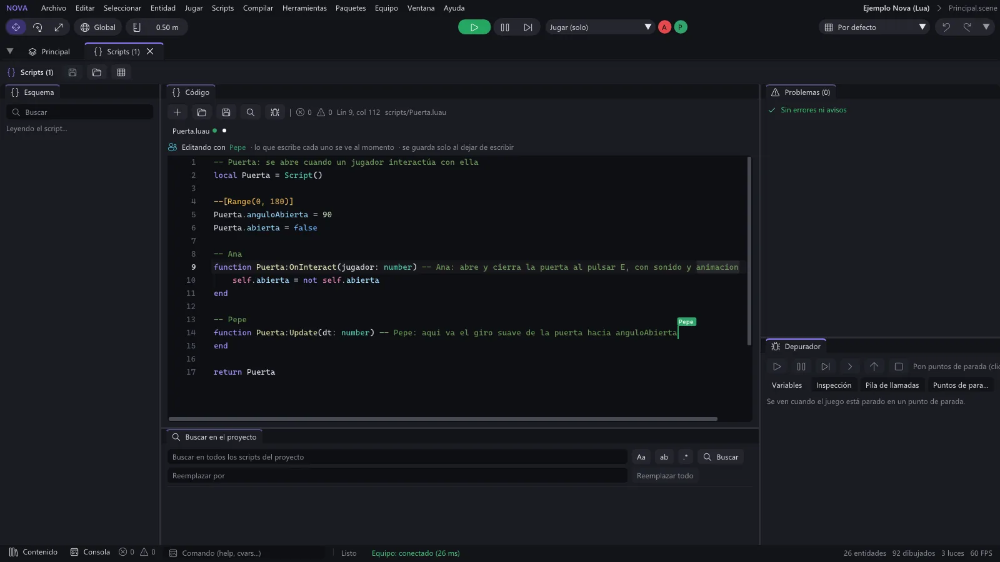

Novedades de cada versión
Lo que trae cada versión de Nova Engine, de la más nueva a la más antigua.
Nova Engine 0.9.56#
Nuevo#
«Aplicar» actualiza las demás instancias de la escena. El botón Aplicar de la barra de una instancia de prefab ya no solo guarda el fichero: las demás instancias de ese prefab en la escena abierta reciben el cambio, con las mismas reglas que al editar el prefab desde el Inspector:
- lo que cada instancia tenía igual que el prefab pasa a lo nuevo y lo que tenía cambiado a mano se respeta;
- la posición y el giro de cada instancia son suyos;
- los hijos nuevos aparecen en las demás instancias (con sus referencias apuntando a sus propias entidades) y los hijos quitados desaparecen.
El fichero y las instancias se deshacen juntos con un solo Ctrl+Z, y en la edición en equipo llega a todos como un solo cambio. Las instancias de otras escenas siguen igual hasta que uses Revertir en ellas. Jugando, Aplicar solo guarda el fichero, como antes.
Arreglos#
- Aplicar conserva los UUID del prefab. El fichero se guardaba con los UUID de la instancia que se aplicaba, así que
al usar Revertir en otra instancia sus hijos cambiaban de UUID y las referencias de fuera a esos hijos (un campo
Entity()de otro objeto) dejaban de valer. Ahora el prefab conserva los suyos.
Compatibilidad#
Nada cambia para los proyectos ni para los scripts. Los prefabs ya aplicados antes siguen funcionando: sus instancias se reconocen por el nombre de cada hijo cuando el UUID no coincide.
Nova Engine 0.9.55#
Nuevo#
Editar un prefab desde el Inspector, sin meterlo en la escena. Al elegir un
.prefaben Contenido, el Inspector muestra:- una vista previa 3D que se gira arrastrando (la rueda acerca, doble clic la deja como al principio) y se actualiza mientras editas;
- la jerarquía del prefab: un clic en una entidad la edita debajo;
- sus componentes, con los mismos controles que el Inspector de entidades: campos, scripts con sus campos, el menú ⋮ de cada componente, Añadir script y Añadir componente.
Se guarda solo con cada cambio terminado y cada cambio es un paso de Ctrl+Z / Ctrl+Y. Las instancias del prefab en la escena abierta se actualizan a la vez: un valor que una instancia tenía igual que el prefab pasa al nuevo, y uno que tenía cambiado a mano se respeta (la posición y el giro de cada instancia son siempre suyos). En la edición en equipo el cambio llega a todos como cualquier otro. Todavía no se puede crear, borrar ni mover hijos desde aquí, y jugando solo se puede mirar. Más en docs/prefabs.md.
Arreglos#
- Miniaturas de modelos y prefabs a contraluz. El sol de las miniaturas venía de detrás del objeto y las superficies horizontales oscuras (la tierra de una maceta, por ejemplo) salían gris claro por el brillo. Ahora el sol viene de delante y arriba; las miniaturas guardadas se rehacen solas.
Compatibilidad#
No cambia nada para los proyectos ni para los scripts.
Nova Engine 0.9.54#
Nuevo#
Pestaña «Partidas (SaveGame)» en la ventana Base de datos (Ventana > Scripts > Base de datos). Arriba hay ahora dos pestañas: Tablas (Database), la de siempre, y Partidas (SaveGame):
- las partidas guardadas del proyecto, de la carpeta Editor (
guardado-editor, tus pruebas) o Juego (guardado), con nombre, tamaño y fecha; mientras juegas se vuelven a leer cada segundo; - el contenido de cada partida en árbol (Clave, Tipo y Valor), con los vectores, colores y assets legibles y un buscador por clave;
- editar valores para probar (números, textos, booleanos, vectores, color, asset), cambiar el tipo de un valor y
añadir o quitar claves y elementos; nada se escribe hasta Guardar cambios (con confirmación) y, si estás
jugando, avisa de que el juego puede sobrescribirla en su siguiente
SaveGame.Save; - Duplicar, Exportar JSON legible, Borrar (con confirmación) y Abrir carpeta.
La pestaña usa el mismo código que
SaveGamepara el formato, los nombres y los límites (guardadoMaxKB,guardadoMaxFicheros), así que lo que guardas desde el editor el juego lo carga igual; guardar sin cambios deja el fichero idéntico.- las partidas guardadas del proyecto, de la carpeta Editor (
Arreglos#
- Si
base-datos.dbno se puede abrir, solo se bloquea la pestaña de tablas, no la ventana entera.
Compatibilidad#
No cambia nada para los proyectos ni para los scripts: el formato de las partidas es el mismo.
Nova Engine 0.9.53#
Nuevo#
- Base de datos con tablas, filas y columnas (como MySQL, sin instalar nada). La tabla
Databasede Lua guarda los datos del juego en tablas: los personajes de un roleplay, sus coches, sus casas, el dinero. Solo en el servidor.Database.CreateTable("characters", { id = "id", account = "text index", cash = "int default 500", pos = "vec3" })crea la tabla y, si cambias la definición, añade sola las columnas nuevas. Tipos:id,int,number,text,bool,json,vec3,colorytime.Insert,Find(con orden y páginas),FindOne,Count,Update,Delete;Incrementatómico con{ min = 0 }para cobrar sin que el dinero baje nunca de 0;Transactionpara varias cosas todo o nada; yQuerypara SQL de verdad, siempre con parámetros (?), que protegen de la inyección SQL.- Las respuestas llegan a tu función como
(resultado, error); dentro deTask.Spawn, sin función, la llamada espera y devuelve lo mismo. Los errores (una columna mal escrita, un tipo que no es) salen en la línea del script. - Modo local: un fichero
base-datos.db(SQLite) en la carpeta de datos del juego, compartido por el editor yNovaServer.exe. Modo remoto: el servicio Nova Datos con la clave de servidor (hay que volver a desplegarlo:desplegar.cmd> 1).
- Ventana Base de datos en el editor (Ventana > Scripts > Base de datos o Ajustes del proyecto > Datos > Abrir base de datos): las tablas, la rejilla de filas con páginas, orden y búsqueda, editar una celda con su tipo (con confirmación), añadir y borrar filas, exportar a CSV, crear tablas y columnas, una pestaña SQL (lo que cambia datos pide confirmación) y los documentos de Persistence en árbol, solo para ver. Mientras juegas se actualiza sola.
- Guía nueva: docs/base-de-datos.md, desde cero (qué es una tabla, fila y columna), con la comparación con MySQL, el ejemplo de personajes y dinero de un roleplay, cuándo usar Database o Persistence y cómo pasar los datos de Persistence a tablas.
Compatibilidad#
Persistence sigue igual. El servicio Nova Datos tiene una clase nueva (BaseDatos, migración v2): para usar Database
en modo remoto hay que volver a desplegarlo; lo que ya tenía guardado no se toca.
Nova Engine 0.9.52#
Nuevo#
Los proyectos quedan listos para asistentes de IA. Al abrir un proyecto, el editor escribe lo que necesita un asistente como Claude Code para trabajar con Nova sin que nadie le explique nada:
AGENTS.mdyCLAUDE.md: qué es Nova, dónde están la API y el manual, cómo es el proyecto, lo mínimo de los scripts Luau y cómo trabajar sin estropear nada;- la habilidad
novade Claude Code (.claude/skills/nova/), con las rutas de tu PC y dos herramientas:probar.ps1(arranca el juego sin ventana, guarda una captura y el registro, y enseña los errores; con una carpeta de datos aparte, sin tocar tus partidas ni tu Steam) yeditor.ps1(coloca, mueve, quita y selecciona cosas en la escena abierta del editor por el Enlace con Nova IA, con Ctrl+Z y, en equipo, para todos); - la API de Lua entera,
nova.d.luauynova.docs.json, que antes solo se escribía al abrir un script con VS Code.
Basta con abrir el proyecto una vez con el editor y escribirle al asistente. Nova nunca toca un
AGENTS.mdo unCLAUDE.mdque hayas escrito tú: los suyos llevan una marca en la primera línea, y si la borras pasan a ser tuyos. Se activa y desactiva en Preferencias del editor > Preparar los proyectos para asistentes de IA. Sin abrir el editor:NovaEditor.exe --preparar-ia --project <carpeta>. Más en docs/asistentes-ia.md.El manual se instala también en Markdown (
docs\mden la carpeta de Nova), que es lo que mejor lee un asistente.
Arreglos#
- Partidas en red por Steam con mucho que enviar al entrar alguien. El juego enviaba a 256 KB/s con un búfer de 512 KB (lo que pone Steam si nadie lo cambia): al entrar un jugador en una partida grande se llenaba y se descartaban paquetes («el búfer de envío de Steam … está lleno»). Ahora va a 1 MB/s con 4 MB de búfer.
Compatibilidad#
No cambia nada para los proyectos ni para los scripts. Los juegos con código C++ no tienen que recompilarse.
Nova Engine 0.9.51#
Nuevo#
Los juegos ya pueden cambiar la resolución desde Lua, para ofrecerla en su menú de ajustes junto a la pantalla completa, la sincronía vertical, el límite de FPS y la calidad:
Application.GetResolutions()da los modos del monitor del juego: una lista de{width, height, refreshRate}sin repetidos y ordenada de menor a mayor (vacía en el servidor dedicado);Application.SetResolution(ancho, alto [, pantallaCompleta])la cambia en el modo de ahora, o en pantalla completa (true) o en ventana (false). La resolución actual sigue siendoApplication.GetScreenSize().
En ventana, el área de juego pasa a medir lo pedido y la ventana queda centrada. En pantalla completa, el monitor cambia a ese modo (el de más Hz de ese tamaño) y vuelve al suyo al salir de pantalla completa, con Alt+Tab (el juego se minimiza) y al cerrar el juego. Se aplica al empezar el frame siguiente, sin perder el contexto gráfico. En el editor no cambia nada (la vista del juego es un panel):
SetResolutiondevuelvefalsey lo avisa en el log. Más en docs/scripts-lua.md, «Resolución».
Compatibilidad#
Los scripts de antes no cambian. SetFullscreen(true) y Alt+Intro siguen poniendo la pantalla completa sin bordes del
tamaño del escritorio mientras no se pida otra resolución de pantalla completa. Los juegos con código C++ no tienen que
recompilarse: los datos nuevos del contexto del motor van al final y su versión no cambia.
Nova Engine 0.9.50#
Arreglado#
Terreno en red: muchos cambios a la vez ya llegan enteros a los clientes. Con muchas llamadas a
Terrain.ModifyHeightsyTerrain.PaintLayeren el mismo fotograma (varias pasadas de rascado, una parcela entera de golpe) o seguidas durante segundos, los clientes podían ver franjas a medias. El servidor mandaba en cada paso todos los trozos cambiados a la vez, sin control: la cola de envío crecía sin parar (segundos de retraso) hasta que el cliente se desconectaba. Además, un trozo que no llegaba ya no se volvía a mandar, porque contaba como enviado. Ahora:- cada jugador tiene su cola de trozos pendientes, sin repetidos y con lo último de cada uno;
- los mensajes van numerados, en trozos de 12 KB como mucho, por el canal fiable;
- el envío se reparte con un límite de ancho de banda (
TerrainSystem::netBytesPerSecond, 256 KB/s por jugador por defecto) y el cliente confirma lo que aplica; - el servidor manda huellas de los trozos y el cliente pide los que no coinciden: si algo se pierde, se arregla solo en unos segundos.
- quien entra recibe el terreno actual, también lo que el servidor cambió antes de empezar la partida (una partida guardada cargada al arrancar): antes veía el del fichero y solo los cambios posteriores. Ya no hace falta reescribir el terreno con valores casi iguales para «reenviarlo».
Terreno de vóxeles en red: un cliente ya no se queda atascado. Si el estado de la entrada no le llegaba (aún cargaba la escena) o faltaba una operación, esperaba para siempre. Ahora, tras 2 segundos esperando, pide el estado otra vez.
Vehículos en red: la entrada del conductor cliente ya está en el
Vehicledel servidor. Con un cliente al volante, el servidor movía el coche con su entrada, peroinThrottle,inSteer,inBrakeeinHandBrakeseguían a 0 en el servidor. Un script del servidor que los leía (una capa de conducción propia) frenaba el coche y pisaba lo que predecía el conductor. El anfitrión no lo notaba porque él es el servidor. Ahora el servidor escribe ahí la entrada que aplica (también en las aeronaves), sin RPC propias.Cámara de los vehículos: el ratón ya va bien en primera persona y al mirar arriba o abajo. Tras el arreglo de la 0.9.49, en primera persona el ratón a la derecha giraba la vista a la izquierda, y en los dos modos subir el ratón hacía mirar abajo. Ahora, en tercera y en primera persona, ratón (o stick derecho) a la derecha gira a la derecha y arriba mira arriba. Los scripts que escriben
orbitYawyorbitPitchcon «Girar con el ratón» desactivado siguen igual: esos valores significan lo mismo que antes.
Compatibilidad#
El formato de los mensajes del terreno en red ha cambiado: el servidor y los clientes tienen que usar la misma versión del motor (como siempre). Los scripts no cambian.
Nova Engine 0.9.49#
Arreglado#
- La cámara de los vehículos giraba al revés con el ratón y el stick derecho: al mover el ratón a la derecha, la cámara giraba hacia la izquierda. Ahora gira hacia el lado al que mueves el ratón, como la del personaje.
Compatibilidad#
Los proyectos de la 0.9.48 se abren igual. Si tu juego compensaba el giro invirtiendo la sensibilidad, quítalo.
Nova Engine 0.9.48#
Nuevo terreno de vóxeles deformable (VoxelTerrain): cava, añade y pinta en tiempo real con cráteres suaves,
capas de materiales con dureza y valor, lo extraído por material, colisión al instante, multijugador por operaciones y
guardado. Además, mallas procedurales desde Lua (Mesh.new) y la plantilla nueva Cavar (Lua).
Terreno de vóxeles deformable#
Un componente nuevo para picar, cavar y esculpir: el volumen se deforma donde golpeas, con cráteres suaves y orgánicos (no cubos que desaparecen), y devuelve lo extraído por material. Con la plantilla nueva Cavar (Lua) como ejemplo y mallas hechas desde Lua.
Terreno de vóxeles#
- Nuevo componente Terreno de vóxeles (
VoxelTerrain, en Añadir componente > Mundo): un volumen de vóxeles por trozos con el tamaño y la resolución que elijas (0,25 m es fino; 0,5 m, más barato). Se genera como caja, pozo lleno (con pared y fondo), esfera o cilindro, con relieve y capas por altura con el borde ondulado. - Hasta 32 materiales con color, dureza (el hielo duro aguanta más golpes; dureza 0 = no se puede picar), densidad (kg por m³), valor por kg, rugosidad y translucidez (el hielo brilla en los bordes y deja pasar la luz a contraluz).
- Cavar:
terreno:Dig(pos, radio, fuerza, opciones)con esfera, cápsula (zanjas y túneles), cono (un soplete) o caja, el borde suavizado e irregular. Devuelve lo extraído por material (m³, kg y valor), y los números cuadran con lo que queda. TambiénAdd,SmoothyPaint. - Consultas:
Raycastcontra el terreno (punto, normal y material),GetMaterialAt,IsSolid, volumen que queda (de todo, de un material o de una caja) yGetProgresspara «sección completada %». - Generar desde Lua:
FillBox,FillSphere,FillCylinder,FillLayers, una función por vóxel (FillRegion) o por trozo (GenerateChunks). - Sin tirones: solo se rehacen los trozos tocados, en otros hilos (malla, buffers de la GPU y colisión de Jolt). Un pozo de 128 x 64 x 128 m con vóxel de 0,25 m y 20 excavaciones por segundo cuesta 0,16 ms de media en el hilo principal (p99 1,4 ms); lo cavado se ve y choca en unos 12 ms.
- Colisión: el personaje y los objetos chocan con lo que queda; la forma nueva se cambia sin un paso sin suelo y lo que estaba encima cae en el hueco.
- Multijugador: el servidor manda y las ediciones viajan como operaciones en orden; cada cliente ve su golpe al
momento (predicción) y se corrige si el servidor lo rechaza. El servidor valida (radio, ediciones por segundo y el evento
voxel:request, que se puede cancelar) y avisa de lo cavado convoxel:dug. Quien entra tarde recibe lo cambiado. - Guardado con la escena (solo lo editado, comprimido) y
terreno:Serialize()/Deserialize()para las partidas. - Editor: pincel de cavar, añadir, suavizar y pintar en el visor, con deshacer.
- Guía nueva: terreno-voxel.md.
Mallas desde Lua#
Mesh.new()conSetVertices,SetIndices,SetNormals,SetUVs,SetColorsyApply(entidad)(oUpload(), que da el Asset para el MeshRenderer o un Collider de malla). Con colores se dibuja con ellos, con luz y sombras.
Plantilla «Cavar (Lua)»#
- Un pozo con un bloque de hielo por capas (nieve, hielo claro, hielo azul, hielo antiguo y roca en el fondo) que se pica en primera persona: clic izquierdo pica, el botón derecho es un soplete y el HUD suma lo extraído por material y su valor. Funciona solo y en multijugador.
Compatibilidad#
Los proyectos de la 0.9.47 se abren igual. El SDK trae ahora 15 plantillas.
Nova Engine 0.9.47#
Arreglos encontrados haciendo un juego de terror multijugador: las luces que parpadean y la cámara de vigilancia van igual
en todos los jugadores, el texto de la cámara tiene mayúsculas con tilde, el chat ya no se queda la tecla Intro y no hay
tirones sueltos sin ventana. Además, NovaGame --tirones para cazar frames lentos.
Arreglado#
- Luces 2D y cámara de vigilancia iguales en todas las máquinas: en una partida en red, el parpadeo y el pulso de
Light2D(yLight2D.GetFactoryGetLightAt) y los cortes, tirones, grano, «● REC» y la hora del filtroSecurityCamvan con la hora del servidor (Network.GetServerTime); antes cada máquina usaba el reloj de su escena y la misma bombilla podía verse encendida en un PC y apagada en otro. Sin red, todo sigue igual. - Texto de la cámara de vigilancia con las mayúsculas acentuadas: «PLATÓ» ya no sale «PLATó»; la fuente tiene ahora Á É Í Ó Ú Ü Ñ con el acento encima de la mayúscula, el resto de vocales con acento, Ç, «·», «¿», «¡», « », € y lo más común de Latin-1.
- El chat integrado ya no se queda con Intro cuando es del juego: un campo de texto, un botón o menú con el foco o tus
scripts leyendo Intro (un teclado numérico, «Intro para continuar»). Nuevo ajuste Ajustes del proyecto > Red > Chat
integrado (
chat.enabled: automático con la sala, siempre en red o desactivado). - Sin tirones de 100-250 ms al jugar sin ventana (
--hidden, capturas y pruebas): la CPU va como mucho 2 frames por delante de la GPU, como con ventana. NuevoNovaGame.exe --tirones [ms]: escribe en el registro cada frame lento con lo que se llevó el tiempo.
Compatibilidad#
Los proyectos de la 0.9.46 se abren igual. Ajustes del proyecto > Red > Chat integrado (chat.enabled) vale «auto» por
defecto, como hasta ahora.
Nova Engine 0.9.46#
Todo lo necesario para juegos 2D de terror: luces 2D con sombras (linternas, bombillas que parpadean, oscuridad), el filtro de cámara de vigilancia / VHS con «REC», fecha y estática, audio con reverberación por salas, sonido apagado tras las paredes y voz de radio o TV, y la plantilla nueva Terror 2D (Lua).
Luces 2D, cámara de vigilancia y audio de terror#
Todo lo que hace falta para un juego 2D de terror a oscuras: luces 2D con sombras suaves, la imagen de una cámara de vigilancia o de una cinta vieja con estática al cambiar de cámara, y sonido con eco o desde otra sala. Con la plantilla nueva Terror 2D (Lua) como ejemplo.
Luces 2D con sombras#
- Nuevo componente Luz 2D (
Light2D, en Añadir componente > 2D): puntual, foco (una linterna: cono con ángulo y ángulo interior hacia el eje X de la entidad) o global (el ambiente). Color, intensidad, radio, caída, sombras con su suavidad y su fuerza, y máscara de capas para elegir qué capas de dibujo ilumina. - Ambiente casi negro: con alguna Luz 2D en la escena, los sprites y Tilemap iluminados toman el ambiente de las luces globales (sin ninguna, negro): solo se ve lo iluminado. Sin Luz 2D todo sigue como antes.
- Parpadeo de bombilla (con semilla: igual en todas las máquinas y siempre igual) y pulso suave.
- Sombras suaves de los objetos con el nuevo Proyector de sombra 2D (
ShadowCaster2D: la forma de su colisionador 2D, el rectángulo de su sprite o un polígono propio) y de los Tilemap con Proyecta sombras (los mismos contornos que las físicas 2D). La cara de una caja o de una pared que mira a la luz se ve. - Sprites que brillan en la oscuridad (Luz propia), sprites que no reciben sombras y mapas de normales para dar relieve. Los Tilemap también pueden ser Iluminado.
- Rápido: 30 luces con sombras sobre un Tilemap de 200 x 100 cuestan menos de 1 ms de CPU y 0,14 ms de GPU a 720p.
- Lua:
light.intensityy los demás campos,Light2D.Flicker(entidad, ...),Light2D.Pulse,Light2D.SetAmbient,Light2D.LayerMaskyLight2D.GetLightAt(pos)/Light2D.IsLit(pos): «¿está iluminado este punto?», para que un monstruo solo se mueva a oscuras (también en el servidor dedicado). - Editor: gizmos del radio y del cono, la forma de los proyectores de sombra y un botón en el visor para ver la escena con luces o sin ellas.
- Guía nueva: luces-2d.md.
Cámara de vigilancia, CRT y VHS#
- Nuevo filtro de cámara «Cámara de vigilancia / CRT / VHS» (
SecurityCam): líneas de barrido, pantalla curva, viñeta, colores separados, ruido y nieve, cortes de señal (una banda que tuerce la imagen, tirones verticales y algún fallo, con intensidad y semilla), tinte verde grisáceo y texto encima: «● REC» parpadeando, la fecha y la hora que avanzan y el nombre de la cámara («CAM 03 – SÓTANO», con tildes y ñ). - Preajustes «Cámara de vigilancia» (
SecurityCam) y VHS (ahora la cinta de terror, con «PLAY ▶» y la fecha). - Estática del cambio de cámara:
CameraFilter.Static(0.3)pone nieve de tele a pantalla completa unos instantes. También el filtro Estática (TVStatic) yCameraFilter.Glitchpara un susto. - Lua:
CameraFilter.SetOverlayText("CAM 02 – PASILLO"),CameraFilter.SetOverlay({ ... }),Static,IsStatic,Glitch. En el editor y en el juego, en 2D y en 3D.
Sonido para terror#
- Audio en el plano 2D: la Fuente de audio con Plano 2D (XY) panea y baja el volumen por la distancia en el plano desde el oyente, sin contar lo lejos que está la cámara.
- Nuevo componente Zona de reverb 2D (
ReverbZone2D): la sala en la que está el oyente (habitación, baño, sala grande, pasillo, sótano, cueva o a medida) y, si se quiere, los sonidos de fuera apagados como desde otra sala. - Paso bajo en la Fuente de audio (un sonido detrás de una pared) y altavoz pequeño: voz por radio, teléfono,
intercomunicador o una tele vieja. El chat de voz también tiene el efecto
"tv". - Lua:
Audio.SetReverb("Basement"),Audio.SetLowPass(entidad, 800),Audio.SetEffect(entidad, "Radio")y las opcionesplanar,lowPassyeffectdeAudio.PlayOneShot.
Plantilla «Terror 2D (Lua)»#
- Un sótano de Tilemap a oscuras con una bombilla que parpadea, un personaje con linterna que apunta con el ratón o el stick, sombras de las paredes y las cajas, unos ojos que solo se acercan a oscuras, la cámara de vigilancia con su texto, cambio de cámara con estática (C) y una gotera con eco. Arte y sonidos hechos por código. Sin compilar nada.
Cambios que se notan#
- El preajuste VHS de los filtros de cámara es ahora la cinta de terror (el filtro de la cámara de vigilancia en estilo cinta). La pila de antes (desaturar + VHS) se puede seguir montando a mano y las escenas guardadas no cambian.
Compatibilidad#
Los proyectos de la 0.9.45 se abren igual. Una escena sin ninguna Light2D se ve exactamente como antes. El preajuste
VHS de los filtros de cámara es ahora la cámara de vigilancia en estilo cinta (las escenas guardadas no cambian). El
efecto de voz "tv" lo oye como «ninguno» un jugador con una versión anterior.
Nova Engine 0.9.45#
Las formas de colisión 2D siguen siempre el giro de su entidad: cinemáticos con la rotación bloqueada que giras desde un script, hijos de un objeto que gira y los sensores del personaje de plataformas.
Arreglado#
- Un cinemático con
fixedRotationmovido con el Transform no giraba sus formas: si un script giraba la entidad y la movía a la vez en cada frame (un jefe que rueda), el cuerpo de la física se quedaba sin girar y sus formas desplazadas (offset) se quedaban fuera del dibujo: un círculo de daño conoffset(0; 2,4) acababa a casi 3 m de donde se veía. Ahora el giro que pide el juego llega al cuerpo, donde está de verdad, y la posición sigue llegando con velocidad (sin teletransportes ni frenados).fixedRotationsolo impide que lo gire la simulación. - Giros grandes de golpe en cinemáticos movidos con el Transform: un giro de 90 grados en un paso se quedaba en 45 grados (o en 86) y, en el paso siguiente, el cuerpo podía seguir girando otro tanto. Ahora llega justo a la pose pedida y se para allí.
- Hijas de una entidad que se mueve o gira: una hija estática o cinemática no seguía al padre (sus formas se quedaban donde empezaron). Ahora le sigue; una hija dinámica va por su cuenta, como antes.
- Sensores de
CharacterController2D: giran con la entidad, con suoffset(la cápsula del personaje sigue de pie). - Visor: con escala no uniforme, una
BoxCollider2Dcon ángulo se dibujaba deformada; ahora se dibuja como la forma de la física. - La caja, el círculo, la cápsula y el polígono con
offsetya giraban bien en los demás casos (estáticos, dinámicos, cinemáticos movidos conrb:SetVelocity, formas del tilemap) y las formas 3D (Collider.center) también: ahora lo comprueban las pruebas.
Compatibilidad#
Los proyectos de la 0.9.44 se abren igual. Un Rigidbody2D con fixedRotation al que le escribes la rotación ahora gira
de verdad (antes solo giraba el dibujo).
Nova Engine 0.9.44#
Los cuerpos con físicas que giras desde un script (balas que miran hacia donde van, personajes que se orientan) ya no se frenan cuando el juego va a más fps que las físicas, en 2D y en 3D.
Arreglado#
- Escribir la rotación de un cuerpo en cada frame lo frenaba: en un
Rigidbody2Ddinámico con interpolación, escribirentity.rotationenUpdate(una flecha o un proyectil que mira hacia donde va) se tomaba como un teletransporte a la pose interpolada, que va por detrás de la física, y con más fps que pasos de física el cuerpo apenas avanzaba. Medido a 10 m/s durante 1 s: a 144 fps recorría entre 1,7 y 2,4 m en lugar de 10 m. Ahora el cuerpo gira donde está de verdad y sigue con su velocidad a cualquier fps (30, 60, 144 y sin límite: 10 m). Volver a escribir la posición que ya tenía junto con la rotación tampoco lo mueve; solo una posición distinta es un teletransporte, como siempre. - Lo mismo en más casos: cinemáticos 2D movidos con
rb:SetVelocity(se paraban),CharacterController2D(de 8 m a 1,3 m en 1 s a 144 fps),RigidBodydinámicos 3D con interpolación yCharacterController3D (casi no avanzaba al girarlo escribiendo su rotación).
Compatibilidad#
Los proyectos de la 0.9.43 se abren igual. Si tu juego compensaba el frenado (velocidades subidas a mano), ahora sus cuerpos irán más rápido: revísalo.
Nova Engine 0.9.43#
Arreglos de los juegos 2D encontrados haciendo un juego completo con la 0.9.42, arranque mucho más rápido (los shaders del motor vienen ya compilados) y un límite de fps exacto.
Arreglado#
- Destello con alfa menor que 1:
sprite:Flash(color)yjuice:Flash(color)ya respetan el alfa del color como intensidad de la mezcla hacia ese color (antes lo ponían a 1 y el sprite salía blanco del todo); la opacidad del sprite nunca cambia, tampoco con el campoflashni con contorno. --scenesin extensión:NovaGame --scene scenes/Menucargascenes/Menu.scene(también con barras de Windows). Si la escena inicial no carga, el juego sale enseguida con el código 3 y el motivo en el registro; con--hiddeno--framesnunca abre un aviso que se quede esperando (antes el proceso podía quedarse colgado).- Textos en el mundo con tildes y signos: los números de daño (
Effects2D.DamageNumber) tienen todo el Latin-1 («¡», «¿», tildes, «ñ», «ü», «ç»...) y los signos de la interfaz («€», «…», comillas, rayas); lo que no está en la fuente sale como «?» en vez de desaparecer. Los textos de los lienzos de Mundo ya los tenían. - Cuerpo cinemático 2D a la deriva: un
Rigidbody2Dcinemático movido con su Transform se para en cuanto se deja de escribir, también si en ese momento se vuelve a crear el cuerpo (cambiar un colisionador, activar la entidad...): antes se quedaba con la velocidad del último paso y seguía moviéndose para siempre. Igual que los cinemáticos 3D. - Arranque más rápido: el motor instalado y los juegos publicados llevan los shaders del motor ya compilados
(
bin\shadercache,NovaGame --preparar-shaders), así que el primer arranque con una versión nueva ya no pasa 10-25 s compilándolos (medido: 22,6 s compilando frente a 0,09 s con los ya compilados). Parecía que era el audio: era la línea siguiente del registro. Ahora el registro dice cuánto tardó el render y por qué, y el audio se abre en otro hilo mientras tanto (con--muteno se abre ningún dispositivo). --fps-maxexacto: el límite de fps usa un temporizador de alta resolución con plazos fijos y una espera activa corta al final; sin ventana visible, Windows hacía que cada espera durase 15,6 ms y--fps-max 120se quedaba en 64 fps (medido sin ventana en un juego 2D: de 64-82 fps a 120 fps). También en el editor al jugar.- Menos tirón al empezar una escena 2D: las hojas de sprites que un frame tiene que dibujar y aún no están cargadas (el primer frame de una escena, los prefabs que crean los scripts al empezar) se leen y decodifican a la vez en varios hilos, en lugar de una detrás de otra. Con 8 hojas de 1024 x 1024, el primer frame pasa de unos 230 ms a unos 70 ms.
Compatibilidad#
Los proyectos de la 0.9.42 se abren igual. sprite:Flash(color) y juice:Flash(color) usan ahora el alfa del color como
intensidad: si pasabas un color con alfa menor que 1 esperando un destello blanco del todo, ahora será más suave.
Nova Engine 0.9.42#
Llegan los juegos 2D: sprites en el mundo con hojas de sprites y animación por fotogramas, animación automática con «rebote» (aplastar y estirar, destellos), contorno de dibujo, números de daño, físicas 2D con un personaje de plataformas (salto variable, dash, parry, plataformas de un sentido), parallax, cámara 2D, tilemap con su editor, vista 2D en el editor y la plantilla nueva Plataformas 2D (Lua) con un jefe de tres fases.
Juegos 2D: sprites, animación por fotogramas y dibujos con vida#
- Nuevo componente Sprite (
SpriteRenderer, en Añadir componente > 2D): dibuja una imagen o un fotograma de una hoja de sprites en el mundo, con tinte y transparencia, volteo, pivote, píxeles por unidad, luz 2D opcional, mezcla aditiva, destello, modo repetido (mosaico) y capas de dibujo con orden (Ajustes del proyecto > 2D). Los sprites con la misma textura se dibujan en una sola llamada: 5.000 sprites animados cuestan unos 0,04 ms de GPU a 1080p. - Sin estela ni emborronado con el TAA: los sprites se dibujan sobre la imagen ya resuelta; el bloom, los filtros de cámara y el resto del postproceso sí les llegan. Un objeto 3D opaco tapa a los sprites de detrás, y en el editor se eligen con un clic por su dibujo.
- Tonemapping «Ninguno» en el Entorno: los colores de los dibujos salen exactamente como en el programa de dibujo.
- Hojas de sprites: ventana Hoja de sprites (desde el Inspector de una textura) para cortar por rejilla, por el alfa o a mano, poner nombres y pivotes por fotograma (arrastrando la cruz), ver animados los fotogramas elegidos y crear animaciones. Empaquetar imágenes sueltas junta los PNG de una carpeta en un atlas (recorta lo transparente sin mover el pivote y no repite los dibujos iguales). Las hojas se pueden comprimir en BC7 (la cuarta parte de memoria).
- Animación por fotogramas: asset
.anim2d(FPS, bucle, fotogramas que duran varios, «en doses», y un evento por fotograma) y el componente Animador de sprites con estados, transiciones por disparador o al acabar y «al acabar, pasar a». Desde Lua:anim:Play("Run"),SetSpeed,IsPlaying,SetTrigger, el eventoOnAnimationEventyAddEventHandler("sprite:frameEvent", ...). - Animación procedural (componente Animación procedural (juice),
SpriteJuice): se estira al saltar y se aplasta al aterrizar solo, balanceo al andar, inclinación, latido, temblor, destello al recibir daño y parpadeo de invulnerabilidad, sin tocar el Transform. Lua:juice:Squash(0.3),juice:Punch(0.2),juice:Flash(),juice:Blink(1.5). - Contorno de dibujo en el Sprite (grosor y color): el borde grueso y oscuro de un dibujo vectorial para cualquier PNG, calculado en el shader a partir del alfa.
- Efectos de juego (
Effects2D): números de daño flotantes que saltan y se desvanecen, y estallidos de formas planas (círculos, estrellas, corazones...) con contorno, sin crear entidades. - Filtro «Cartoon antiguo» (
OldCartoon) en los filtros de cámara: grano, viñeta, tono cálido, rayas y parpadeo. - Todo se guarda en escenas y prefabs y se replica en red (el Animador replica su estado; cada máquina anima sus fotogramas). Guía nueva: Juegos 2D.
- Plantilla nueva «Plataformas 2D (Lua)»: Chispa corre, salta, hace dash y dispara; las Gotitas patrullan y el Nubarrón es un jefe con tres fases que se puede vencer. Dibujos planos de contorno grueso (personajes originales), HUD de corazones, monedas, números de daño y estallidos; el suelo y las plataformas son Tilemap, el fondo por capas usa Capa de parallax y la Cámara 2D sigue a Chispa, encuadra al jefe y tiembla con sus golpes. Se abre en la vista 2D. Sin compilar.
- Los Tilemap se ordenan con los sprites: su capa de orden y su orden en la capa valen igual que los de un Sprite (cada trozo de tiles es un lote más, no un dibujo por tile), y los sprites hijos de una Capa de parallax se desplazan y se repiten con ella.
- El «juice» de los personajes 2D se estira, se aplasta y se ensancha con los eventos del personaje de plataformas (salto, aterrizaje, dash y parry), y la gravedad 2D del proyecto está en Ajustes del proyecto > 2D.
Arreglos#
- Las texturas comprimidas de los sprites ya no se vuelven translúcidas de lejos: los mips de las hojas conservan lo opaco (antes se escalaba el alfa para el recorte de vallas y hojas, que no vale para mezclar).
- Los sprites repetidos (suelos, fondos) no dejan costuras entre copias.
Físicas 2D y personaje de plataformas#
- Físicas 2D nuevas en el plano XY, en la misma escena que las 3D (un cuerpo 2D solo choca con cuerpos 2D). Por dentro, Box2D v3.1.1 (MIT): pilas de cajas estables, cuerpos que se duermen solos y el mismo resultado con las mismas entradas (un solo hilo), lo que necesita la red.
- Componentes (en Añadir componente > Física 2D): Rigidbody 2D (Dinámico, Cinemático o Estático; masa, escala de gravedad, frenado, rotación fija, bala/CCD e interpolación) y los colisionadores de caja, círculo, cápsula, polígono (cóncavo o de muchos puntos: se parte solo en piezas convexas) y borde (cadena para suelos y pendientes), con desplazamiento, sensor, fricción, rebote, densidad, capa y máscara de colisión.
- Plataformas de un sentido: se atraviesan desde abajo y el personaje baja con abajo + salto.
- Polígono desde el alfa de un sprite: botón Generar desde el alfa en el Inspector (o
Physics2D.PolygonFromAlphaen Lua). En el visor, Editar puntos pone un asa en cada punto para moverlo. - Controlador de personaje 2D con el tacto de un plataformas de precisión: suelo, pendientes con ángulo máximo, techo y paredes, coyote time, buffer de salto, salto variable, salto en pared y doble salto opcionales, dash con duración, distancia, recarga e invulnerabilidad, parry sobre lo que tiene la etiqueta «Parry», plataformas móviles que lo llevan y valores por defecto que ya se sienten bien.
- Desde Lua:
Physics2D.Raycast,RaycastAll,CircleCast,BoxCast,OverlapCircle,OverlapBox,OverlapPointyLayerMask;rb:AddForce,AddImpulse,SetVelocity,GetVelocity...;pj:Move(x),Jump(),ReleaseJump(),Dash(dir),Parry()eIsGrounded(); y los eventosOnCollisionEnter2D,OnTriggerEnter2D,OnLanded,OnJump,OnDashyOnParry, con autocompletado en el editor y en VS Code. - Multijugador: los cuerpos 2D se mueven con NetworkTransform como los 3D (el servidor simula y los clientes siguen); la guía trae un jugador de plataformas en red.
- Rendimiento: 2.000 cuerpos dinámicos cayendo cuestan unos 1,6 ms por paso de física y, ya quietos, 0,5 ms.
- Nueva guía Físicas 2D con ejemplos de un personaje de plataformas, balas con sensor, plataformas móviles y de un sentido y un enemigo que patrulla.
Mundo 2D: parallax, cámara de plataformas, tilemap y vista 2D#
- Vista 2D en el editor: el botón 2D / 3D de la barra del visor pone la cámara del editor ortográfica y de frente al plano XY. Rueda para hacer zoom hacia el cursor, botón central o derecho para desplazar y F para encuadrar. La rejilla se dibuja en el plano XY y los gizmos pasan a ser 2D (mover en X e Y, girar en Z, escalar), con el imán que deja los objetos en la rejilla. El modo se recuerda para cada escena.
- Capa de parallax (
ParallaxLayer): fondos por capas pintadas que se mueven a otra velocidad que el nivel según su factor (0 = con la cámara, 1 = fijo en el mundo), con repetición infinita sin huecos en horizontal (y en vertical si quieres) y desplazamiento automático para las nubes. Sirve con cualquier cámara y, con «Previsualizar en el editor», también en el visor. - Cámara 2D (
Camera2D): la cámara de plataformas. Sigue al jugador con suavizado y zona muerta, se adelanta hacia donde corre, no sale de los límites del nivel (un rectángulo, un colisionador o lo pintado en un tilemap), hace zoom suave, tiembla (Camera2D.Shake(intensidad, duración)y trauma acumulable, con semilla), encuadra a dos jugadores en cooperativo y tiene modo pixel-perfect para pixel art (escala entera y ajuste a los píxeles). - Tilemap y TileSet: niveles pintados con tiles de un atlas. Panel Tilemap con paleta, pincel (sin huecos aunque muevas rápido el ratón), goma, rellenar, rectángulo y cuentagotas, capas, rejilla y deshacer. Cada tile puede chocar, ser unidireccional o llevar una etiqueta («Pinchos», «Moneda»). La colisión se junta en rectángulos fusionados que se rehacen al pintar, el dibujo va por trozos (pintar una celda solo rehace su trozo) y el nivel se guarda comprimido en la escena: uno de 500 x 200 celdas ocupa unas decenas de KB.
- Desde Lua:
Camera2D.Shake,AddTrauma,SetTarget,SetTargets,SetBounds,SetZoomySnap;mapa:GetTile,SetTile,Fill,WorldToCell,CellToWorld,GetTileTagyGetCollisionRects, con autocompletado (también los nombres de las capas) en el editor y en VS Code. - Guía nueva: Mundo 2D (vista 2D, parallax, cámara de plataformas y tilemap).
Compatibilidad#
Los proyectos de la 0.9.41 se abren igual. Las físicas 2D usan Box2D 3.1.1 (MIT, ver TERCEROS.md). Los tipos de
asset nuevos (.anim2d, .tileset) no los abre una versión anterior.
Nova Engine 0.9.41#
Nuevo componente Contorno (Outline) para resaltar modelos, personajes y objetos que se pueden usar, también a través
de las paredes; y los colores (Color/Vector4) ya se replican en red.
Contorno: resalta lo que se puede usar#
- Nuevo componente Contorno (
Outline, en Añadir componente > Render): un borde en pantalla alrededor de una malla, una malla con huesos o una entidad con todos sus hijos, del mismo grosor en píxeles cerca y lejos. Para lo que se puede coger o usar, los aliados a través de las paredes o lo seleccionado. - Tres modos: Siempre (también a través de las paredes, con otro color para la parte tapada si quieres), Solo lo visible y Solo lo tapado (el aliado detrás de la pared).
- Estilo sólido o suave (brillo), pulso animado y relleno opcional para teñir el objeto.
- Sale limpio en mallas con normales duras y en personajes animados (el borde se calcula en pantalla, no inflando la malla) y no tiembla con el antialiasing temporal.
- Sin ningún contorno no cuesta nada; con contornos, todos los objetos y colores van en una sola pasada: a 1080p, unos 0,015 ms de GPU con un objeto y 0,05 ms con cien (medido en una RTX 5060 Ti).
- Desde Lua:
entidad:AddComponent("Outline")con sus campos, y los atajosOutline.Set(entidad, color, grosor),Outline.Set(entidad, { mode = "Occluded", ... }),Outline.Clear(entidad)yOutline.Get(entidad), con autocompletado en el editor y en VS Code. - Se guarda en la escena y en los prefabs y se replica como cualquier componente, aunque lo normal es ponerlo solo en el cliente. La guía (en «Render») trae un ejemplo de resaltar lo que mira el jugador con un rayo desde la cámara.
Red#
- Los campos
ColoryVector4ya se replican (los de los componentes y los--[Replicated]de los scripts), con 16 bits por componente: unos 3 decimales, de sobra para un color con alfa. Antes solo viajaban dentro de una tabla replicada.
Compatibilidad#
Los proyectos de la 0.9.40 se abren igual. Como los campos Color y Vector4 ahora se replican, el servidor y todos los
jugadores de una partida tienen que ser de la 0.9.41.
Nova Engine 0.9.40#
Llega Nova Market, la tienda de assets, funcionando en tu PC con pagos simulados (sin cuentas en Internet); la Consola te lleva con un clic al script y la línea de cada error; más funciones nativas para Lua (tablas, textos, azar y red), y la sala gana datos por jugador, liderazgo, avisos y el avatar de Steam del compañero, que ya llega siempre.
Nova Market, la tienda de assets#
En Nova Hub y en el editor#
- Nova Hub > Tienda: entra con tu cuenta, mira tu biblioteca y pulsa Instalar en el proyecto que elijas. Cuando
sale una versión nueva aparece Actualizar, que se instala sin pisar lo que hayas cambiado: lo nuevo va a
<fichero>.nuevo, como en los paquetes del motor. - En el editor: lo mismo en Ventana > Tienda (o Paquetes > Nova Market…), sobre el proyecto abierto.
- Publicar en Nova Market (Paquetes > Publicar en Nova Market…): empaqueta una carpeta de tu proyecto como
.novapaquete(con su manifiesto, las huellas de cada fichero y las capturas) y la sube como versión nueva. La administración la revisa antes de publicarla. - La web de la tienda: portada con destacados, novedades y más vendidos, categorías, buscador con filtros (gratis o de pago, versión del motor y valoración), fichas con capturas y vídeo, carrito, «Mi biblioteca», valoraciones de quien tiene el asset y denuncias por copyright o contenido indebido. Está en español y en inglés y se adapta al móvil.
- Para vendedores: panel con tus assets, versiones, precio y ofertas, ventas e ingresos. La comisión de la tienda es del 12 %.
- Para la administración: revisar assets y versiones, comisiones por vendedor y por asset, ventas, reembolsos, denuncias, usuarios y el CSV de ventas por vendedor.
Modo local: la tienda en tu PC#
- Por defecto, Nova Hub > Ajustes > Tienda es Local (este PC). Al abrir la pestaña Tienda, Nova Hub arranca la
tienda oculta y la cierra al salir. Si quieres que siga abierta, marca «Dejarla abierta al cerrar Nova Hub».
- Necesita Node.js (nodejs.org, versión LTS).
- La primera vez instala lo que le hace falta, unos 120 MB, y para eso necesita Internet.
- Tus datos se guardan en
%LOCALAPPDATA%\NovaEngine\nova-market-local: cuentas, assets, ventas y valoraciones. - La primera vez creas tu cuenta de administrador (nombre, email y contraseña). Solo se puede hacer desde tu PC.
- Pagos simulados: comprar lleva a una página de «Pago de prueba» con Pagar (simulado) y Cancelar. Todo cuadra como con pagos de verdad (comisión, acceso, ventas y reembolsos), pero no se cobra nada. Lo recuerda el banner «MODO LOCAL · PAGOS SIMULADOS».
- Con tu equipo por Tailscale:
- en tu PC, Ajustes > Tienda > «Compartirla por Tailscale»;
- tu compañero pone en sus ajustes «Otra dirección:
http://<tu IP de Tailscale>:<puerto>».
- También se arranca a mano con
<motor>\tienda\local\iniciar-tienda-local.cmd.
Consola: un clic te lleva al script y a la línea#
La Consola es ahora el sitio desde el que arreglas los errores (docs/editor.md).
Novedades#
- Enlaces en los mensajes:
scripts/Jugador.luau:37(y con columna,:37:5) es un enlace. Un clic abre el script en el editor de scripts integrado, en su pestaña Scripts, en esa línea y columna, con la línea resaltada un momento; Ctrl+clic lo abre en VS Code (code -g fichero:línea). Funciona en los errores de compilación y de ejecución de Lua, en los avisos del analizador y en cada línea de la pila, que ahora sale desplegable bajo el error. Log.Info,Log.Warn,Log.Erroryprintdicen desde dónde se llamaron (← scripts/Ladron.luau:13), también con enlace.- Jugando en red y en «Jugar en equipo», los mensajes del servidor y de los clientes enlazan al script de la carpeta de tu PC aunque la ruta sea de otro PC o del servidor dedicado.
- Entidades y assets:
'JugadorLadron'selecciona la entidad en la Jerarquía yassets/models/caja.glbmuestra el asset en Contenido. - Repetidos agrupados: el mismo mensaje seguido sale una vez con su contador ×12.
- Clic derecho: copiar el mensaje o con la pila, abrir el script (o en VS Code), Buscar en la documentación (la sección de errores comunes de los errores conocidos) y Silenciar este aviso durante la sesión.
- Filtros: texto con lo encontrado resaltado (también busca en la pila), por script y Solo errores; los contadores de mensajes, avisos y errores siguen filtrando al pulsarlos.
- Marca de tiempo a elegir: hora real, tiempo de juego, desde que se abrió el editor o ninguna.
- Limpiar al jugar y Pausar al primer error, en las opciones de la Consola y en las Preferencias del editor.
- Aviso rojo en el visor de juego: un error grave mientras juegas sale unos segundos arriba a la derecha del visor, con Ver en la Consola, sin parar el juego (se puede desactivar).
- Exportar el registro (todo o lo filtrado) a un
.txt. - 50.000 mensajes sin que la Consola se ralentice (antes guardaba 4.000).
- El panel Problemas abre los scripts igual que la Consola (pestaña Scripts, línea resaltada; Ctrl+clic en VS Code).
Arreglado#
- Al pulsar un error de la Consola con la pestaña Scripts ya abierta pero sin elegir, el script se abría sin que se viera: ahora se elige su pestaña.
Para quien desarrolla#
LogMessage::sourceyLogSourceScope(nova/core/Log.h): el origen de un mensaje, sin cambiar su texto ni los ficheros de log.MemorySink::ReadSincelee solo lo nuevo.- La lógica de la Consola sin ImGui está en
editor/consola/ConsoleLogic.h(pruebasconsola mejoras:); las acciones de pruebaconsola:...de--acciones, eneditor/consola/Consola.h.
Más funciones nativas para Lua#
Funciones del motor para lo que todo juego acaba escribiendo a mano en Lua: ordenar el marcador, partir textos, el reloj de la ronda, elegir al azar sin repetir, los jugadores que hay cerca, mandar un evento a un equipo o a los de alrededor, repartir equipos equilibrados y elegir una aparición lejos de los enemigos (docs/nativas-juego.md).
Tablas y textos#
Table.SortBy(lista, "puntos", true): ordena por un campo o por una función, estable (los empates salen en el mismo orden en todas las máquinas). Unas 8 veces más rápido quetable.sortcon una función.Table.DeepCopy(tabla): copia en profundidad (tablas compartidas, ciclos y metatablas incluidos).Table.Filter,Map,Find,Count,Sum,Min,Max,KeysyValues: para escribir menos (Table.Sum(equipo, "kills"),Table.Max(jugadores, "kills")). Están en Luau dentro del motor: cuestan como el bucle escrito a mano (las que llaman a una función tuya por elemento, algo más), no son para ir más rápido.Text.Split(sin espacios ni partes vacías, separador tal cual: unas 7 veces más rápido que hacerlo constring.find),Text.Trim(unas 20 veces),Text.StartsWithyText.EndsWith.Text.FormatTime(205)da"03:25"(y"1:02:03","03:25.4") yText.FormatNumber(1234567)da"1,234,567"(con los separadores que quieras:"1.234.567").
Azar y geometría#
Random.Sample(lista, n):nelementos distintos al azar (unas 8 veces más rápido que barajar una copia).Random.Weighted({ espada = 10, escudo = 5, gema = 1 }): una clave según su peso, igual en todas las máquinas con la misma semilla.Geometry.IsInViewCone(origen, direccion, angulo, punto, distancia?): si algo está en un cono de visión.
Red#
Network.GetPlayersInRadius(posicion, radio)yNetwork.GetNearestPlayer(posicion), con filtros por equipo (team,excludeTeam) eignore: unas 2 veces más rápido que recorrerNetwork.Players()en Lua.Network.GetPlayerInfo(id): nombre, ping, equipo, si es local o el líder, su personaje y su SteamID.Network.SendToTeam,SendToNearbyySendToPlayers: un evento de red a un equipo, a los que están cerca o a una lista, serializado una sola vez (hasta 6 veces más rápido que unTriggerClientEventpor jugador). Solo en el servidor: en un cliente, un error que lo explica.Network.AssignTeams(2, { skill = niveles }): equipos con el mismo número de jugadores y, con niveles, lo más igualados posible.Network.PickSpawnPoint(puntos, { player = id }): la aparición más lejos del enemigo más cercano (puntos, entidades o una etiqueta): unas 3 veces más rápido que en Lua.
Todo con su ayuda en el editor de scripts y en VS Code (autocompletado, tipos y «Abrir documentación»). El ejemplo
Fiesta usa Text.FormatTime y Table.SortBy en su marcador.
Sala, Steam y avatares#
Montar el menú de sala de un juego cooperativo o de fiesta con pocas líneas: cada jugador lleva su personaje (o lo que elija) y su avatar de Steam, se puede pasar el liderazgo y hay un aviso para cada cosa que cambia. Además, el avatar del compañero ya llega siempre y, sin Steam, los logros se guardan en local para poder probar (docs/lobby-y-escenas.md, docs/steam.md).
Arreglado#
- El avatar de otro jugador no salía o tardaba mucho. Steam solo avisa cuando descarga el avatar grande: el pequeño y el
mediano de alguien que tu Steam aún no conoce (un compañero que no es tu amigo, o tu propio avatar justo al arrancar)
decían «no tiene» y no volvían a avisar, y el motor se quedaba con eso. Ahora pide a Steam la información de esa persona
y su avatar grande, vuelve a mirar hasta que llega y avisa con
steam:avatarLoaded(osteam:avatarFaileda los 12 s).
Novedades#
Steam.GetAvatarAsync(id, tamaño, función): llama a tu función con la textura del avatar en cuanto llega (enseguida si ya estaba) y la deja en caché. Para un compañero de partida,Lobby.GetAvatarAsync(jugador, tamaño, función)con su id de jugador, también en las partidas por código o en la red local.- Datos de cada jugador en la sala:
Lobby.SetPlayerData("personaje", "Ladrón"),Lobby.GetPlayerData(id, clave)y el campodatadeLobby.GetPlayers(); cada jugador lleva también susteamId(Lobby.GetSteamId(id)). - Pasar el liderazgo:
Lobby.SetLeader(id). - Avisos concretos de la sala en todas las máquinas:
lobby:playerJoined,lobby:playerLeft,lobby:readyChanged,lobby:leaderChanged,lobby:settingChangedylobby:playerDataChanged. - La plantilla Sala (lobby) trae un cuadro Foto en cada fila para el avatar, y la guía tiene un menú de sala básico completo para copiar: crear, unirse con el código, invitar, avatar, personaje, «Listo», expulsar y Empezar.
- Logros, estadísticas y tablas sin Steam: se guardan en local (
steam-local.jsonen la carpeta de guardado), así el juego se prueba igual en el editor;Steam.SetLocalFallback(false)lo apaga ySteam.IsUsingLocalStats()lo dice. Steam.IsSteamDeck(),Steam.IsBigPicture()y el estado de cada amigo enSteam.GetFriends()(state: en línea, ausente, ocupado...).
Otros arreglos#
- Un tipo local de un script ya no deja sin autocompletado toda la API: si un script usaba en la firma de una
función de su clase un tipo propio (
type Objeto = {...}oexport type) con?,|, una tabla o una función alrededor, ese nombre llegaba anova.d.luauy el fichero entero dejaba de leerse («Unknown type») en el editor y en VS Code. Ahora esos tipos (y los genéricos y los de otro módulo conrequire) quedan comoanyennova.d.luau, y si la declaración de un script aún no se pudiera leer, solo ese script se queda sin tipos.
Compatibilidad#
Los proyectos de la 0.9.39 se abren igual. Sin Steam, Steam.UnlockAchievement devuelve ahora true porque se guarda en
local. Los mensajes nuevos de la sala van aparte: un juego de la 0.9.39 en la misma partida sigue funcionando, sin los datos
ni el SteamID de los demás. El protocolo de la edición en equipo no cambia (equipo-marco-5).
Nova Engine 0.9.39#
Tutoriales interactivos dentro del editor y de Nova Hub (Aprender), vídeos tutoriales con voz en la web, y los ficheros grandes de la edición en equipo ya no se atascan por Steam ni por Nova Enlace: progreso visible en todos los PC, reanudación y prioridad para lo que editáis.
Tutoriales interactivos y vídeos#
- Nova Hub > Aprender: seis tutoriales con tu progreso (Empezar, Continuar, Repetir) que abren el editor con el proyecto del tutorial ya preparado: Tu primera escena, Tu primer script en Lua, Un personaje jugable, Multijugador en 5 minutos, Interfaz (HUD) y Publicar tu juego.
- En el editor, Ayuda > Tutoriales: cada paso resalta lo que hay que pulsar (el resto se oscurece, sin bloquear), trae el código con Copiar cuando hace falta y pasa solo al siguiente al comprobar que lo has hecho. La primera vez que abres el editor te ofrece el primero.
- Vídeos tutoriales con voz en español y subtítulos en la web (página Tutoriales y dentro de cada guía); en el editor, Ayuda > Vídeos tutoriales.
- En español y en inglés.
Ficheros grandes en la edición en equipo#
Los modelos grandes (un FBX de 170 MB exportado de Blender) ya llegan cuando tu compañero entra por Steam o por código, sin frenar la sesión ni cortar «Jugar en equipo», y se ve cómo van en los dos editores (docs/edicion-en-equipo.md).
Arreglado#
- Una subida grande por Steam se quedaba parada para siempre (en el servidor, un
.parcialde poco más de 512 KB que no crecía) y la conexión de quien subía pasaba de 2 s de ping. Steam envía de serie a 256 KB/s fijos y guarda 512 KB sin enviar: la subida llenaba ese búfer, todo lo demás esperaba detrás y, con tanto en vuelo, la red de Nova perdía la cuenta de lo ya confirmado y lo reenviaba todo sin avanzar. Ahora la sesión envía por Steam a 2 MB/s, la subida se adapta a la cola del camino (las ediciones, el chat y los pings pasan delante en unas décimas) y la red confirma aunque haya mucho en vuelo. Por el relé de Nova Enlace pasaba lo mismo con su cola: también arreglado. - «Jugar en equipo» por Steam se cortaba mientras alguien subía un fichero grande (la subida saturaba su conexión).
- Si Steam cortaba la conexión de alguien, el editor de la anfitriona le abría otra que se quedaba colgada: ahora vuelve a entrar él solo.
- La barra de estado decía «sincronizando ficheros: 0 pendientes» aunque alguien estuviera subiendo algo.
- La Consola dice por qué se para el modo juego («Modo juego detenido: el juego pidió salir (Application.Quit)», «Detener»...).
Novedades#
- Quien sube ve «Subiendo Tren Texturizado.fbx: 35 % (60/172 MB, 2,1 MB/s)» (lo que ya tiene el servidor) y los demás, «Luis está subiendo Tren Texturizado.fbx: 35 %».
- Panel Equipo > Ficheros: la lista Transferencias, con progreso, velocidad, Reintentar y Cancelar.
- Las subidas se reanudan desde lo ya recibido tras un corte o una reconexión y, si pasan 30 s sin avanzar, se reintentan solas (y, si siguen sin avanzar, el editor vuelve a conectar).
- Al añadir un fichero de más de 50 MB estando por Nova Enlace o por Steam, un aviso con la ayuda: «Por Nova Enlace, los ficheros grandes van lentos: usa Tailscale/directa o Steam, o exporta en GLB/texturas más pequeñas».
- El servidor del equipo escribe en su registro (
.nova-equipo\servidor.log) el principio, cada 10 % y el final o el error de cada subida.
Para quien desarrolla#
- Cambia el protocolo de la edición en equipo (
equipo-marco-5, mensajeTransferProgress): el servidor y todos los editores de la sesión tienen que ser de la misma versión (como siempre). nova_net: historial de 1024 paquetes yConnectionStats::windowStalls.TeamWire: control de flujo por retardo de cola.nova_steam:TransportOptions::sendRateBytesPerSecond,sendBufferBytesyconnectOnSend,TransportStats::sendBufferFull,Backend::ConfigureConnection; el Steam simulado simula el ritmo, el búfer (conLimitExceeded), la latencia y la subida de cada jugador.- Nova Enlace:
RelayOptions::maxMessagesPerSecondymaxBytesPerSecond;LocalRelayOptions::latencyMs,uplinkBytesPerSecondybytesPerSecond. No hace falta volver a desplegar el relé: el Worker no cambia.
Compatibilidad#
Los proyectos de la 0.9.38 se abren igual. El protocolo de la edición en equipo cambia (equipo-marco-5): el servidor y todos
los editores de la sesión tienen que ser de la 0.9.39. Una subida que se quedó a medias con la versión anterior se reanuda sola.
Nova Engine 0.9.38#
Todo lo que se escribe en los scripts, en inglés y sin espacios: las opciones de los componentes ("HiddenForOwner",
"Kinematic"…) y las claves de las tablas de la API (maxPlayers, initial…). Lo de antes en español sigue funcionando
con un aviso y una bombilla que lo cambia. Además, se arregla el cierre del editor de un cliente con objetos de red con
cuerpo estático.
Opciones de los componentes en inglés#
- Las opciones de los campos tienen un identificador en inglés, sin espacios: lo que leen y escriben los scripts y lo
que se guarda en las escenas, los prefabs y los assets.
item:GetComponent("MeshRenderer").ownerVisibility = "HiddenForOwner"en lugar de"Oculto para el propietario". Al escribir no distingue mayúsculas. Un valor que no existe da un error con los valores válidos. - El Inspector no cambia: sigue enseñando el texto traducido (Oculto para el propietario, o en inglés si el editor está en inglés), y el tooltip de cada opción dice su identificador.
- Los valores de texto de la API, también en inglés: los preajustes de nubes, niebla, agua, carreteras, partículas
y decals; las calidades; los iconos de la interfaz; las teclas, botones del ratón y del mando; los modos de
Spline.Follow, de la cámara de los vehículos y del cielo; los canales del chat; los efectos de voz; el tipo deConsole.Print; los estados del emparejamiento; lo que devuelvenPersistence.GetModeyGetAccess; los tipos y las acciones del registro de seguridad; los preajustes deCurve(...)y los tipos deAsset(...); el motivo deOnValidatey el deplayerDropped. La tabla completa está en la guía. - Autocompletado y ayuda:
nova.d.luautiene los tipos con los identificadores (por ejemplo,"Everyone" | "OwnerOnly" | "HiddenForOwner"). El autocompletado entre comillas los propone con el texto del Inspector como ayuda. - Avisos con arreglo rápido: el editor de scripts y VS Code subrayan los textos en español de antes, también en
las comparaciones (
cuerpo.type == "Dinámico"). La bombilla los cambia por el identificador.
Compatibilidad#
- Ningún proyecto se rompe al abrirlo: las escenas, prefabs, curvas y
.destructiblede la 0.9.36 se cargan igual. Al guardarlos pasan al identificador inglés. - En los scripts, escribir el texto de antes sigue funcionando:
"Oculto para el propietario","Espacio","Tormenta"... La primera vez se avisa en la Consola: «"Oculto para el propietario" está obsoleto: usa "HiddenForOwner"». - Lo que se lee cambia. Un campo de un componente o una función de la API devuelve ahora el identificador en
inglés. Una comparación con el texto de antes deja de cumplirse, por ejemplo
if cuerpo.type == "Dinámico"oif Application.GetQuality() == "Alto". El editor de scripts y VS Code la marcan con su arreglo. Revísalas antes de publicar. - Lo que devuelven las funciones de la API cambia:
Persistence.GetMode()devuelve"off","local"o"remote".Persistence.GetAccess()devuelve"server","client"o"none".- El estado del emparejamiento es
"queued","found","connecting"... - Los canales del chat son
"all"y"team". - El motivo de
playerDroppedes"disconnected". - El de
OnValidatees"field","load","validate"o"button". Input.AnyKeyPressedyInput.GetKeyNamesdevuelven"Space","MouseLeft","Gamepad:A"...
- Edición en equipo y partidas en red: todos los miembros deben usar la misma versión del motor, como ya se pedía. Un editor de la 0.9.36 no entiende los identificadores ingleses: al abrir una escena guardada con la 0.9.37 dejaría esas opciones con su valor por defecto. La red replica las opciones por su número, y la huella del contenido son los scripts y los ficheros tal cual. Entre 0.9.37 y 0.9.37 no cambia nada.
- Sin cambios en lo que se ve: la Consola, los mensajes y el Inspector siguen traducidos. Los ficheros del proyecto
(
project.nova, el mapa de controles, los ajustes de calidad) tampoco cambian. - Componentes en C++ de tu juego:
.Options({"A", "B"})sigue funcionando. El identificador es el texto. Para separar identificador y texto:.Options({{"Red", "Rojo"}, {"Blue", "Azul"}}). - Guía: Opciones de los campos.
Claves de las tablas de Lua en inglés#
- Lo que se escribe en las tablas de la API también es inglés (camelCase, sin espacios): las opciones que se pasan
y las tablas que devuelve el motor o que llegan a un evento.
Lobby.Host({ maxPlayers = 8, scene = "scenes/Ronda", settings = { rondas = 5 } })en lugar de{ maxJugadores = 8, escena = ..., ajustes = ... }. - Qué tablas:
- la pantalla de carga (
title,tips,minSeconds...); Network.LoadScene(to,loadingScreen,waitForAll,timeout,force);- la sala:
Lobby.Host/Lobby.Open,Lobby.Start, los jugadores deLobby.GetPlayers(name,ready,isLeader,isLocal,talking...); - el chat (
player,name,text,channel,isSystem); Accounts.Login(method),Matchmaking.Join(mode,group,autoConnect),Matchmaking.EndMatch(quit),Matchmaking.GetStatusyOnStatus(state,match,role,address,waited,missing...) yMatchmaking.GetMatch;- la voz:
Voice.SetProximity/GetProximity(occlusion),Voice.SetChannel(mix) yVoice.GetStats(kbpsUp,framesSent,encodeMs...); RegisterCommandyCVar(help,usage,server,cheat,integer,replicated,persist);Pool(prefab, { initial, max }),entidad:AttachTo(..., { keepWorld, inheritScale, offset, rotation });- la clave de cada fila de una Data Table (
fila.key); Security.GetSettings()(encryption,maxRpcPerSecond,onFlood,onCheat,banMinutes,channels...). La tabla completa, clave por clave, está en la guía.
- la pantalla de carga (
- Autocompletado:
nova.d.luautiene los tipos con las claves inglesas, así que el autocompletado dentro de las tablas (Lobby.Host({ | })) propone las inglesas. - Avisos con arreglo rápido: el editor de scripts y VS Code subrayan las claves de antes en las tablas que se pasan
a la API (también en sus subtablas) y al leer lo que devuelve una función de la API o el parámetro de un evento
(
for _, p in Lobby.GetPlayers() do print(p.nombre) end). La bombilla las cambia por la inglesa.
Compatibilidad#
- Escribir las claves de antes sigue funcionando, con un aviso de obsoleto en la Consola la primera vez de cada
clave: «
maxJugadoresestá obsoleto: usamaxPlayers». Si una tabla trae las dos, gana la inglesa. Tu tabla no se toca. - Leer las claves de antes en lo que devuelve el motor también funciona (
jugador.nombre,stats.enviados,estado.direccion), con el mismo aviso. La tabla solo tiene las claves inglesas:pairsyJson.Encodeya no ven las de antes. Si recorrías una de estas tablas conpairsbuscando una clave en español, cámbiala por la inglesa. - Si le pones tu propia metatabla a una tabla que devuelve el motor (
setmetatable), las claves de antes dejan de leerse en ella. - Data Tables: cada fila trae
key(antesclave). Si el struct de la tabla ya tiene un campokey, la fila no la trae (como antes conclave). El segundo argumento det:Findyt:Filtersigue siendo la clave de la fila. - Lo tuyo no cambia: las claves de
settingsde la sala, de tu pizarra, de los datos guardados, los nombres de tus acciones de entrada, los temas de la interfaz y los textos que se ven. - Los ficheros no cambian:
project.nova(seccionesred,seguridad...), las curvas (.curvay los camposCurve()de las escenas, conclaves,entrada,salidaytangentes), las Data Tables y los Data Assets siguen guardándose y leyéndose igual. Son el formato de los ficheros, no código Lua, y desde Lua no se ven: una curva se lee concurva:Evaluate(x)ycurva:Points()(x,y) yCurve.Newya usabainTangentyoutTangent. - Valores de los ajustes de seguridad:
Security.GetSettings()tiene las claves en inglés, pero los valores deonFloodyonCheatsiguen siendo los del fichero ("expulsar","banear"...). - Guía: Claves en inglés.
Arreglos#
- El editor (y el juego) de un cliente se cerraba al seguir por la red un objeto con colisionador pero sin cuerpo rígido, que es un cuerpo estático: por ejemplo, un pickup con NetworkTransform enganchado a la mano. El motor intentaba moverlo como cinemático. Ahora se coloca directamente donde toca. Aun así, para un objeto que se mueve, lo correcto es ponerle un Cuerpo rígido Cinemático.
Compatibilidad#
Los proyectos de la 0.9.37 se abren igual y, al guardar, las escenas y prefabs pasan a los identificadores en inglés (un
editor de la 0.9.37 no los entendería: en una sesión de equipo, todos con la misma versión). En los scripts, lo que
se lee ya viene en inglés: una comparación con el texto de antes (cuerpo.type == "Dinámico") deja de cumplirse; el
editor de scripts y VS Code la marcan con arreglo rápido.
Nova Engine 0.9.37#
Ragdoll con su editor de física, animación por capas con IK de pies y aim offset, filtros de cámara (retro, PS1, CRT, VHS, película, cómic, visión nocturna y térmica) y licencias: desde esta versión Nova Hub y el editor necesitan una licencia activada.
Licencias#
Para usar Nova Hub y el editor hace falta una licencia. Los juegos que publiques no la necesitan: quien juega a un juego hecho con Nova Engine nunca necesita licencia, y los juegos ya publicados no cambian.
Activar tu licencia#
- Pantalla de activación en Nova Hub: al abrirlo sin licencia, pega tu clave (empieza por
NOVA1.) y pulsa Activar. La primera vez hace falta Internet. - Página Licencia en Nova Hub: «Licencia de Ana · caduca el 01/02/2027 · 1 de 3 PCs», Comprobar ahora y Desactivar este PC (libera su hueco para usar la licencia en otro PC).
- Sin Internet: Nova Engine sigue funcionando 14 días desde la última comprobación; después pide conectarse.
- El editor avisa cuando a tu licencia le quedan 14 días o menos.
- Abrir NovaEditor.exe directamente también pide la licencia (ofrece abrir Nova Hub para activarla).
- La licencia se guarda cifrada para tu usuario de Windows en
%LOCALAPPDATA%\NovaEngine\licencia.json.
Para quien actualiza#
Después de actualizar, Nova Hub te pedirá la clave de tu licencia antes de abrir tus proyectos. Tus proyectos no se tocan.
Ragdoll y Physics Asset#
- Physics Asset (
.fisica): por cada hueso, una forma (cápsula, caja o esfera), su masa y la articulación con su padre (cono y giro, bisagra o fija) con sus límites. Se genera solo desde el esqueleto: en un humanoide, pelvis, columna, pecho, cabeza, brazos, manos, piernas y pies, con las medidas de la piel y límites de un cuerpo humano (los codos y las rodillas solo se doblan hacia su lado). Los dedos, los huesos extra y las hojas se ignoran. - Pestaña Física (ragdoll) en el editor: árbol de huesos, visor con las formas y los conos de los límites, gizmo para mover y girar las formas, detalles del cuerpo y botones Generar, Simular (el muñeco cae en el visor) y Restablecer. Deshacer y edición en equipo como los demás editores. Se crea con Añadir > Física > Physics Asset.
- Componente Ragdoll:
ragdoll:Activate(impulso, punto)pasa el personaje a la física desde la pose que tenía, con la velocidad de cada hueso y el golpe en el hueso más cercano; el CharacterController deja de moverse y la entidad sigue al cuerpo.ragdoll:GetUp()lo levanta (boca arriba o boca abajo),ragdoll:Deactivate()vuelve a la animación,ragdoll:SetBlend(peso, hueso)yragdoll:ApplyImpulse(hueso, impulso)hacen un ragdoll parcial que vuelve solo. EventosOnRagdollActivatedyOnRagdollSettled. Sin asset, se genera del esqueleto. - Multijugador: lo decide el servidor. En los cuerpos grandes se replican la pelvis y unos huesos clave a 15 Hz y todos ven el cuerpo igual; en los pequeños, cada máquina lo simula con el mismo golpe. Quien entra tarde ve el cuerpo donde está.
- La plantilla Tercera persona trae un muñeco de pruebas: míralo y pulsa E para tirarlo; se levanta solo.
- 20 ragdolls a la vez cuestan alrededor de 1 ms por frame. Guía: ragdoll.md.
Animación por capas, aim offset e IK de pies#
- Parte de arriba y parte de abajo: las máscaras de las capas tienen pesos por rama (
"pesos": {"Spine": 0.3}o un número en"huesos"), para que el torso dispare o recargue mientras las piernas corren sin que la cadera gire de golpe. En la pestaña Máscara, el peso de cada rama se arrastra a la derecha de su casilla. Botón + Parte de arriba para crear la capa de un clic. - Aim offset: capas aditivas en el espacio del modelo (
"espacioAditivo": "modelo"): apuntar arriba, abajo y a los lados se suma encima de cualquier animación y gira igual aunque la de debajo esté inclinada. Botón + Aim offset: capaAimOffsetcon un árbol 2D de 3 × 3 poses segúnyawypitch. - Blend spaces 2D triangulados (
"2D triangulado") y ejes en cualquier árbol: rango de los parámetros y rejilla; en el gráfico se ven la rejilla y los triángulos, las muestras se ajustan a la rejilla y arrastrando en el vacío mueves la vista previa. - IK de pies: los pies se apoyan en escalones y rampas (rayo por pie, la pelvis baja lo necesario, el pie sigue la
normal, con suavizado y límites). Se configura en el controlador (
"ikPies", pestaña IK de pies del panel Animador), cada capa puede apagarlo mientras pesa y cada Animador desde Lua. En el editor sin jugar, un suelo de prueba (rampa o escalones) para la vista previa. - IK de manos a un socket: la extremidad del componente IK puede ir a un socket, un hueso o una hija del objetivo (Punto del objetivo): la mano izquierda en el agarre del arma.
- Lua:
animador:SetFloat2("velX", "velZ", x, z),GetFloat2,SetFootIK(activo, peso?),ResetFootIK(),GetFootIKWeight()ySetIKTarget("LeftHand", arma, "Grip")(crea la cadena si hace falta).SetLayerWeightvale con las capas nuevas. Todo ennova.d.luau, la documentación y el autocompletado. - Red: los pesos de capa y lo que pida
SetFootIKviajan con el Animador de red (también con «Lo anima el dueño»); el IK se calcula en cada máquina. - Paquetes: Tercera persona 1.1.0 apunta con la parte de arriba (botón derecho; capa
Aimde su nuevoTerceraPersona.controllery el scriptAimThirdPerson.luau) y apoya los pies en escalones y rampas. Personaje 1.2.0 trae la poseAim.anim.Personaje.controllerno cambia: Primera persona sigue igual. Si cambiaste el prefab de tercera persona, el tuyo se queda y el nuevo va a su.nuevo. - Los controladores y máscaras de antes se cargan y se guardan igual (sin claves nuevas).
Docs: Capas y Paquetes.
Filtros de cámara#
- Componente nuevo Filtros de cámara (Inspector > Añadir componente > Render), en la entidad de la cámara: una pila
de filtros con orden, activar por filtro, intensidad de 0 a 1 y sus parámetros. Guía:
docs/filtros-camara.md. - 21 filtros:
- retro: pixelado (por tamaño o con resolución fija tipo 320x240, píxeles cuadrados), estilo PS1 (bits por canal, tramado Bayer 4x4/8x8, vértices que tiemblan y texturas sin filtrar), paletas limitadas (Game Boy, CGA, NES, sepia, blanco y negro o una propia desde una textura), tele antigua (CRT), VHS (con la fecha) y película antigua;
- formas y estilos: semitono de cómic (punto, línea o cuadrado), ASCII, vidriera (Voronoi), contorno de cómic por profundidad y aristas, y posterizar;
- visión: nocturna, térmica, ojo de pez y aberración cromática;
- utilidad: desenfoque, nitidez, viñeta de color, LUT de color, desaturar y tinte.
- 9 preajustes: PS1, Game Boy, Tele de los 80, VHS, Película muda, Cómic, Visión nocturna, Térmica y Pixel art moderno. Rellenan la pila y se pueden retocar.
- Vista previa en vivo en los visores Escena y Juego, con un botón en la barra del visor para verlos con o sin filtros. Deshacer y edición en equipo como cualquier cambio del Inspector.
- Interfaz y arma: por filtro, «Afecta a la interfaz» (por defecto solo el CRT y el VHS, que se aplican encima de la interfaz del juego) y «Afecta a la capa de vista» (el arma y las manos en primera persona).
- Lua (nombres y claves en inglés):
camara:SetFilter("CRT", { intensity = 1 }),camara:FadeFilter("VHS", 0, 2.0),GetFilter,RemoveFilter,ClearFilters,ApplyFilterPresety la tablaFilters(Filters.ApplyPreset("PS1"),Set,Fade,Get,Remove,Clear,GetPresets,GetNames). Autocompletado de los nombres de filtro y de preajuste entre comillas y tipos ennova.d.luau. - Rendimiento: los filtros activos se juntan en el menor número de pasadas; sin filtros no cuestan nada (el render es idéntico). A 1080p con tres filtros, de 0,22 a 0,41 ms de GPU (RTX 5060 Ti).
- Limitación: el temblor de vértices del estilo PS1 no se aplica al terreno, la vegetación ni el agua; la térmica sale del brillo de la imagen.
Enlace con Nova IA con el editor minimizado#
- El enlace con Nova IA contesta también con el editor minimizado. Antes, con la ventana minimizada, las peticiones se quedaban esperando sin respuesta hasta que se agotaba el tiempo de la app.
Compatibilidad#
Desde esta versión hace falta una licencia para usar Nova Hub y el editor (los juegos publicados nunca la piden). Los proyectos de la 0.9.36 se abren igual. Paquetes: Personaje 1.2.0 y Tercera persona 1.1.0 (un prefab de tercera persona que hayas cambiado no se pisa). Los editores y servidores de una sesión de equipo deben ser de la misma versión.
Nova Engine 0.9.36#
Atributos nuevos para decir dónde se ejecuta una función de Lua sin escribir comprobaciones a mano: --[ServerOnly],
--[ClientOnly], --[OwnerOnly], --[EditorOnly], --[Server(validate = "...", kickAfter = N)] y --[Cooldown(s)], con
su autocompletado y sus avisos en el editor de scripts y en VS Code.
Dónde se ejecuta una función#
- Atributos nuevos para las funciones de los scripts Lua:
--[ServerOnly](solo en el servidor o el anfitrión, y sin red),--[ClientOnly](donde hay pantalla: cliente, anfitrión y sin red; no en el servidor dedicado),--[OwnerOnly](solo en la máquina del dueño de la entidad; sin dueño o en un[Global], en el servidor) y--[EditorOnly](solo dentro del editor). Llamada donde no toca: no hace nada y devuelvenil, con un aviso en la Consola la primera vez («Inventory:AddItemInHand es ServerOnly: se ha ignorado en un cliente»;silentlo quita). No viajan por la red: para pedirle algo al servidor sigue estando[Server]. - También en
Update,OnInteracty compañía: unOnInteractcon--[ServerOnly]solo corre en el servidor. EditorOnlyal publicar: el cuerpo de la función ni se compila en el juego publicado y los camposEditorOnlyno van (las líneas de los errores no cambian).--[Cooldown(segundos)]: la función no se repite antes de ese tiempo; en una[Server], por jugador.--[Server(validate = "PuedeHacerlo", kickAfter = 5)]: el servidor valida cada llamada de un cliente con esa función antes de ejecutarla; el rechazo queda en el registro de seguridad («validación fallida: Inventory:Drop de jugador 2 (Luis)», con su contador) y al quinto se expulsa al jugador.- Sin coste: donde se ejecuta, una función
ServerOnly,ClientOnlyoEditorOnlycuesta lo mismo que una normal. - Errores y avisos claros: las combinaciones sin sentido (
ServerOnlyconClientOnly,ServerOnlycon[Client]...) son un error del script con su línea; el editor de scripts y VS Code avisan mientras escribes (llamar a unaServerOnlydesde unaClientOnly,validatede una función que no existe,Cooldownsin segundos...), la ayuda de cada función dice dónde se ejecuta y la bombilla cambiaif not IsServer() then return endpor--[ServerOnly]. - Guía: Dónde se ejecuta una función;
validate, en Seguridad de la red.
Compatibilidad: --[OwnerOnly] sin [Server] antes solo daba un aviso («solo sirve junto a [Server]») y ahora
hace que la función solo se ejecute en el dueño. Con [Server] significa lo mismo que antes.
Compatibilidad#
Los proyectos de la 0.9.35 se abren igual. Ojo: --[OwnerOnly] sin [Server] antes solo daba un aviso y ahora restringe
dónde se ejecuta la función (solo en el PC del dueño).
Nova Engine 0.9.35#
Enlace con Nova IA: una app local (como Nova IA) puede colocar prefabs en la escena abierta del editor, también en una sesión de equipo, y menos consumo de CPU de Nova Hub y del editor en segundo plano.
Enlace con Nova IA#
- Nova IA (u otra app de tu PC) ya puede poner en la escena lo que crea: «ponme la puerta del banco en la escena» y aparece delante de la cámara del visor, apoyada en el suelo, seleccionada y con su paso de Ctrl+Z, igual que si la hubieras arrastrado desde Contenido. También la puede mover, seleccionar o quitar.
- En una sesión de equipo funciona igual: lo que coloca llega a todos. Si el prefab se acaba de crear, el editor lo importa y espera a que el servidor lo tenga antes de mandar el cambio.
- Seguro: solo escucha en
127.0.0.1(este PC), con una clave nueva en cada arranque guardada en.nova\enlace-ia.jsondel proyecto (no se sincroniza con el equipo), rechaza las páginas web y no ejecuta código, scripts ni comandos: solo coloca, mueve, selecciona y quita prefabs deassets/. - Se activa y desactiva en Editar > Preferencias del editor > Enlace con Nova IA (apps locales) (activado de serie). El contrato completo y un ejemplo en PowerShell, en la guía Enlace con Nova IA.
Menos CPU con el editor y Nova Hub en segundo plano#
- Nova Hub ya no se redibuja a los fps del monitor con la ventana abierta y quieta (gastaba uno o dos núcleos sin hacer nada): espera a que muevas el ratón o pulses algo, como mucho 50 ms con la ventana delante y 250 ms detrás.
- El editor, detrás de otras ventanas y sin jugar, baja a unos 10 fps en vez de redibujar el visor 3D a los fps del monitor. Cualquier mensaje lo despierta, la sesión de equipo sigue al día y jugando va a su ritmo de siempre.
Compatibilidad#
Los proyectos y escenas de la 0.9.34 se abren igual. El enlace con Nova IA solo escucha en 127.0.0.1 y se apaga en Preferencias del editor > «Enlace con Nova IA (apps locales)».
Nova Engine 0.9.34#
Edición en equipo por Steam: tu compañero entra a editar contigo desde la lista de amigos de Steam o con una invitación, sin códigos, sin Tailscale y sin abrir puertos, por los relés de Valve (no les afectan los bloqueos de Cloudflare). Además, el relé de Nova Enlace se reintenta más rápido al arrancar y, si no contesta, el editor prueba solo la dirección directa (Tailscale) o Steam.
Edición en equipo por Steam#
Para entrar a editar juntos por Steam: sin códigos, sin Tailscale, sin abrir puertos y sin pasar por Cloudflare (los bloqueos de LaLiga cortan a ratos las IP de Cloudflare en España y con ellas el relé de Nova Enlace) (docs/edicion-en-equipo.md).
Novedades#
- Crear sesión > Conexión: Por Steam (amigos). El editor abre un lobby de amigos de Steam con la sesión. App ID de serie:
480 (Spacewar, la app de pruebas de Valve, que tiene cualquier cuenta sin comprar nada); se puede elegir el del proyecto
(
steam.appIddeproject.nova, por ejemplo 1234560) u otro, y entonces los compañeros tienen que tener esa app. Mientras dura, Steam dice «Jugando a Spacewar» y tus amigos ven «Editando <proyecto> en Nova». También Equipo > Steam > Abrir también por Steam (amigos) con una sesión ya abierta. - «Amigos de Steam con una sesión de Nova abierta» en Unirse a una sesión y en Nova Hub > Equipos: proyecto, quién,
cuántos y versión. Doble clic para entrar (con la contraseña, si la pide). A mano:
steam:<SteamID>. - Invitar amigo de Steam en el panel Equipo (el overlay de Steam o Invitar a un amigo concreto): el invitado acepta en Steam
y su editor entra solo. Lo recoge el editor con Equipo > Steam > Recibir invitaciones de Steam con el editor abierto o Nova Hub
con Ajustes > Equipos > Recibir invitaciones de Steam... (abre el editor ya dentro), y también
+connect_lobbyal abrirlos. - En Personas, quien entró por Steam sale por Steam con su SteamID (autenticado por Steam). Expulsar veta también el SteamID.
- Equipo fijo por Steam (Equipo > Equipo fijo > Por Steam (amigos)): el Nova Hub de los miembros ve la sesión «En marcha» por el lobby de Steam aunque el relé no conteste, y entra por Steam.
- Jugar en equipo por Steam: si todos están por Steam, la partida también va por Steam (nadie escribe direcciones).
- Jugar con la sesión por Steam usa ese mismo Steam (Steam solo deja un App ID por programa): la partida y la sesión van a la vez, cada una por su puerto virtual.
Más fiable con el relé (Nova Enlace)#
- Al arrancar, el servidor del equipo reintenta el relé cada 5 s durante el primer minuto (antes, a los 15 s y después cada vez más tarde).
- El editor ya no enseña «No se pudo conectar: el servidor no responde» mientras arranca el servidor que acaba de lanzar: reintenta en silencio unos 15 s y solo avisa si de verdad no contesta.
- Si el relé no contesta al entrar, el editor prueba solo los otros caminos del equipo (la dirección directa o Tailscale, y Steam) y lo dice: «El relé no contesta (...). ¿Bloqueo de Cloudflare de tu operadora? En días de LaLiga pasa a menudo. Entrando por Steam…». Nova Hub dice lo mismo en la tarjeta del equipo.
Arreglos#
- Jugar > Cliente con una dirección
steam:<SteamID>ya no se partía por los dos puntos («No se pudo conectar a steam»).
Qué falta probar con el Steam de verdad#
Todo se ha probado automáticamente con el Steam simulado. Con dos cuentas reales amigas (dos PC) faltan: el lobby y la lista de amigos por los servidores de Steam, la conexión P2P por los relés de Valve, el overlay de invitar (el editor inicia Steam después de crear su ventana, así que puede que el overlay no salga: está Invitar a un amigo concreto) y aceptar una invitación con el editor cerrado. Los pasos están en edicion-en-equipo.md.
Para quien hace el motor#
editor/team/core/TeamSteam.h:TeamSteamGateway(pasarela del editor de la anfitriona hacia el servidor local),SteamTagTransport(la etiqueta con el SteamID en el servidor),TeamSteamMember,TeamSteamFriendsyTeamSteamInvites. El servidor del proyecto no inicia Steam (diseño:docs/diseno-equipo.md, 22).nova_steam:Service::AddEventFiltery variosSteamTransportsobre el mismo Steam, cada uno con su puerto virtual.- La lista de personas lleva
"via": "steam"y"steamId";PlayStartlleva"steam". El protocolo no cambia (equipo-marco-4). - Pruebas:
nova_tests.exe equipo-steam(siempre con el Steam simulado yNOVA_STEAM_SIN_CLIENTE=1).
Compatibilidad#
Los editores y el servidor de una sesión de equipo deben ser todos de la 0.9.34. Para la sesión por Steam hace falta Steam abierto en los dos PC y ser amigos; con el App ID 480 (Spacewar) no hace falta tener ningún juego.
Nova Engine 0.9.33#
Los modelos exportados desde Blender salen de pie y a su tamaño, la tecla Fin baja los objetos al suelo, el aviso de contenido de las partidas dice qué fichero es distinto y hay un botón para sincronizar los ficheros de la sesión de equipo, y las casas y objetos huecos destructibles ya no atascan al jugador.
Modelos de Blender de pie y a su tamaño#
Los modelos exportados de Blender salen en Nova de pie, mirando hacia donde miraban y a su tamaño, como en Blender, con las opciones por defecto del exportador FBX y del GLB (docs/modelos-y-animaciones.md).
Arreglado#
- Los FBX de Blender ya no salen tumbados ni diminutos. El exportador FBX de Blender pone en cada objeto raíz un giro de -90° en X (su Z arriba pasa a la Y arriba del fichero) y una escala de 100 (el fichero va en centímetros). Al añadir a la escena un modelo de una sola malla, Nova pone la malla en la propia entidad raíz y se perdían ese giro y esa escala: salía de lado y 100 veces más pequeño. Ahora se aplican a los vértices al importar. Los modelos de varias mallas y los personajes con esqueleto ya salían bien y no cambian.
- Lo mismo con un GLB (u OBJ, o FBX de otro programa) de una sola malla con el objeto girado o escalado sin aplicar, y con las opciones Eje arriba del fichero y Escala de un glTF de una sola malla, que no hacían nada.
Novedades#
- Inspector del modelo: dice «Exportado desde Blender: ejes convertidos» en los FBX de Blender y si el giro y la escala del objeto se han aplicado a la malla.
- Girar al importar: botones X/Y/Z +90° y Quitar giro para modelos que vienen girados de origen (opción
"rotacion"del.meta).
Compatibilidad: modelos ya colocados#
- El
.metade los modelos lleva ahora"versionImportacion": 2. Los modelos importados a partir de esta versión nacen con ella y salen bien sin tocar nada. - Los
.metaantiguos (sin"versionImportacion") de modelos que usa alguna escena, prefab o script siguen importándose como antes, para no girar en silencio lo que ya giraste a mano para compensar. Su Inspector avisa y tiene el botón Corregir orientación (Blender); después, quita el giro de -90° (o la escala) que pusiste a mano. - Los
.metaantiguos de modelos que no usa nada del proyecto pasan solos a la importación nueva al abrir el proyecto. - En una sesión de edición en equipo, los
.metadel servidor no se tocan al entrar.
Bajar al suelo (tecla Fin)#
Con el visor Escena o la Jerarquía enfocados, Fin baja cada entidad elegida hasta que se apoya en lo que tiene debajo, sin tener que arrastrarla hasta abajo con el gizmo (docs/editor.md).
Novedades#
- Fin: bajar al suelo. La base de sus límites (sus mallas y colisionadores, también los de los hijos) queda tocando lo que haya debajo: colisionadores (caja, esfera, cápsula, cilindro y malla), mallas de la escena sin colisionador, el terreno y, como último recurso, el plano Y = 0. Si debajo no hay nada, no se mueve y la barra de estado lo dice.
- Mayús+Fin: bajar el pivote (el origen de la entidad) hasta el suelo que tiene justo debajo.
- Alt+Fin: bajar y alinear: la entidad gira para que su eje Y siga la inclinación de la superficie y queda de plano sobre ella (un cubo en una rampa se apoya en su cara, no en una esquina).
- Varias a la vez: se bajan de abajo arriba, así que unas cajas apiladas y elegidas juntas quedan una encima de otra. Lo que está elegido y aún no ha bajado no cuenta como suelo.
- Un solo paso de deshacer para toda la selección («Bajar al suelo (3 entidades)»). En una sesión de equipo viaja como cualquier cambio de Transform y no mueve lo que está editando otra persona.
- En el menú Entidad: Bajar al suelo, Bajar el pivote al suelo y Bajar y alinear con el suelo, con sus atajos.
- Con padre se calcula en el mundo y se escribe el Transform local; con una pestaña de asset a la vista no hace nada, y la tecla Fin del editor de scripts sigue yendo al final de la línea.
- Soltar un modelo o un prefab del Contenido en el visor lo deja apoyado en lo que hay bajo el ratón (mallas de la escena y terreno), no en el plano Y = 0.
Para quien hace el motor#
editor/suelo/BajarSueloLogic.h:WorldBounds,SurfaceBelow,SurfaceUnderBoxyDropToGroundsin ImGui (pruebasnova_tests.exe "bajar suelo"). La tecla, el menú, el deshacer y las acciones de prueba (bajar-suelo,suelo-tecla,suelo-y:...) están eneditor/suelo/BajarSuelo.cpp.GroundQuerytiene un constructor con un filtro de entidades (skip) para dejar fuera mallas concretas.
Qué fichero es distinto y Sincronizar ficheros con el servidor#
(Para las notas de la versión siguiente a la 0.9.32.)
Al darle a «Jugar en equipo», el anfitrión podía ver «contenido | aviso | sus scripts o assets clave no son los del servidor (copia modificada o de otra versión)» sin saber qué era distinto, y en la edición en equipo no había forma de volver a sincronizar los ficheros. Ahora el aviso dice qué fichero es, «Jugar en equipo» sincroniza solo antes de entrar y hay un botón para sincronizar la carpeta de trabajo con el servidor.
Qué fichero es distinto#
Si la huella del contenido de un jugador no es la del servidor, el aviso del registro de seguridad y la consola dicen qué es distinto y si la versión del motor es la misma (docs/seguridad-red.md):
Luis: 2 ficheros distintos: scripts/Inventory.luau (distinto), assets/Items/FPCubo.prefab (falta en Luis) — versión del motor igual (0.9.32)Como mucho 5 ficheros y «y N más». «distinto», «falta en Luis» o «solo lo tiene Luis»; la versión del motor «igual», «distinta (Luis 0.9.30, servidor 0.9.31)» o «igual, pero no es la misma compilación del motor» (otro compilador de scripts).
Con Rechazar, el jugador rechazado también lo ve: «tu copia del juego no coincide con la del servidor (...): 2 ficheros no coinciden con los del servidor: scripts/Inventory.luau (distinto), ... (te falta) — ...». Con Avisar, en su consola.
Es solo informativo: entrar o no se sigue decidiendo con la huella, antes de pedir la lista. Un cliente que miente en su lista solo cambia el texto del aviso.
Sincronizar ficheros en la edición en equipo#
- Equipo > Sincronizar ficheros con el servidor (y en el panel Equipo, pestaña Ficheros): compara cada fichero
de la carpeta de trabajo con el servidor por su contenido (también los cambiados conservando su fecha, que la
sincronización de cada segundo no ve), vuelve a bajar lo que falta o es distinto y aparta lo que sobra. Con los cambios
tuyos sin subir, pregunta: subirlos, guardarlos aparte (
.nova-equipo/conflictos/) o dejarlos. Nunca se pisa nada sin copia (docs/edicion-en-equipo.md). - Jugar en equipo comprueba antes de entrar los scripts Lua y los assets clave de cada editor (el anfitrión y los demás) contra los del servidor del equipo y los sincroniza solos, en uno o dos segundos. Lo tuyo sin subir va a conflictos con un aviso; si no se puede, avisa con la lista y entra igual.
- Panel Equipo > Personas: columna Ficheros con quién tiene los scripts y assets clave al día y quién no (con la lista al pasar el ratón).
Por dentro#
nova_net: informe del contenido (ContentProbe,ContentManifest,ContentReport): con la huella distinta, el servidor pide la lista de la huella del cliente (en trozos, sellada con las claves de la sesión o del saludo) yNetServer::onContentManifestdice qué es distinto. Con Rechazar, el rechazo sale justo después del informe (o a los 3 s, si el cliente es de antes y no la manda). Una versión anterior descarta estos paquetes y todo sigue como antes (docs/red.md).- Motor:
ComputeNetworkContentHashda también la lista (NetworkContentManifest: ruta y 8 bytes del SHA-256 de cada script y asset clave, versión del motor y huella de su compilador de scripts), sin cambiar la huella; se comprime con XPRESS y cabe en 30 KB (si no, se recorta y lo dice).ScriptLibrary::LoadedMatchesDiskdice si lo cargado de un script es lo que hay en el disco (la sincronización de antes de jugar espera a que los scripts que llegan estén cargados de verdad). - Edición en equipo:
FileSyncClient::CheckFiles(comparar por contenido y sincronizar, conOwnChanges::Report,UploadoSaveAside) yContentFileFilter(lo que entra en la huella). Lo que vuelve a bajar se recarga sin avisar de nadie. - Pruebas: la lista y la comparación (distintos, faltan, sobran, versión del motor, límite de ficheros, listas
recortadas o rotas), el informe en
nova_net(avisar y rechazar, con y sin cifrado, cliente de antes, que no cambia la decisión), comprobar y sincronizar en una sesión en memoria (cambio a mano con la misma fecha, subir, rol Solo ver) y dosNovaEditor.exesin ventana contra el servidor del equipo: el botón arregla un script cambiado a mano y «Jugar en equipo» entra sin aviso de contenido (nova_net_tests seguridad_informe,nova_tests "lista de la huella","sincronizar ficheros con el servidor"y"sin aviso de contenido").
Casas y objetos huecos destructibles#
Una casa destructible en la que se entra ya no deja al jugador encajado en el suelo (docs/destruccion.md).
Arreglado#
- El jugador se quedaba metido en el suelo de una casa destructible. El objeto entero chocaba con su envolvente convexa: en una casa, un bloque macizo que rellenaba las habitaciones. No se podía entrar por la puerta y, si el jugador aparecía dentro, no podía ni andar. Ahora un objeto hueco choca con su forma real.
- Los trozos en L rellenaban las esquinas. Un trozo con suelo y pared (o con dos pedazos de pared sueltos) chocaba con su envolvente. Ahora se parte en varias partes convexas.
Novedades#
- Colisión entera en el componente Destructible:
- Automática (por defecto): Convexa si el objeto es convexo; si es hueco, Malla en Estático y Trozos en Dinámico.
- Convexa: la de antes.
- Trozos: las partes convexas de los trozos del nivel 1, en un solo cuerpo.
- Malla: los triángulos exactos (solo Estático). Roto, los trozos no convexos que siguen en su sitio también usan sus triángulos: el suelo queda donde se ve, sin escalones ni solapes.
- Fracturar calcula las partes convexas de cada trozo (una descomposición convexa propia, sin librerías) y dice:
- si el objeto es hueco;
- cuántos trozos no son convexos;
- si alguno sigue rellenando huecos: «X trozos no convexos: su colisión rellenará huecos».
- Sección nueva Casas y objetos huecos en la documentación: qué poner y por qué conviene separar las paredes, el suelo y las puertas.
Compatibilidad#
- Las escenas de antes usan Automática. Las cajas, los barriles y las paredes macizas siguen con su envolvente, igual que antes.
- Los
.destructiblede antes se cargan igual. Sus partes convexas se calculan al cargarlos, con un aviso en el registro. Vuelve a guardarlos en Fracturar para no tener que calcularlas cada vez. El fichero pasa a la versión 3. - La colisión es local en cada máquina. No cambia lo que se envía por la red, ni el estado, ni la huella del asset: un servidor con el fichero nuevo y un cliente con el viejo se entienden.
Por dentro#
- Envolvente convexa incremental en doble precisión y descomposición por cortes:
- primero separa los pedazos sueltos de cada trozo;
- después corta por el plano que más reduce el volumen de las envolventes (los planos de las caras y de los ejes);
- como mucho 16 partes por trozo y 32 puntos por parte.
- Las formas de choque se comparten entre las instancias iguales (el mismo asset, la misma escala y los mismos ajustes): diez casas iguales las crean una sola vez.
- Pruebas
nova_tests "destruccion huecos":- una casa hueca de prueba con cuatro paredes, suelo, techo y una puerta, recorrida por un CharacterController como el de la plantilla del jugador. Entra por la puerta y anda por dentro con la casa entera, rota y con una pared caída, sin atascarse ni quedar dentro de ninguna colisión. Con Convexa (la de antes) no puede entrar y el de dentro queda metido;
- una caja sigue en Convexa;
- la misma huella del estado con cualquier colisión;
- los
.destructiblede la 0.9.24; - el rendimiento de 10 casas de 300 trozos.
Compatibilidad#
Los proyectos y escenas de la 0.9.32 se abren igual. Los modelos de Blender ya colocados en escenas conservan su
orientación (el Inspector ofrece «Corregir orientación (Blender)»). Los .destructible antiguos se cargan y recalculan su
colisión. Los editores y servidores de una sesión de equipo deben ser de la misma versión.
Nova Engine 0.9.32#
Edición conjunta del mismo script en tiempo real: varias personas de una sesión de equipo escriben a la vez en el mismo script del editor integrado, ven los cursores de los demás y el script se guarda y se recarga una sola vez.
Edición conjunta de scripts#
Varias personas de una sesión de equipo escriben a la vez en el mismo script (docs/edicion-en-equipo.md y docs/editor-scripts.md).
Novedades#
- Escribir juntos en el editor de scripts. Si dos o más personas de la sesión abren el mismo script Lua de
scripts/, cada pulsación llega a las demás en unos 50-100 ms y lo que se escribe a la vez se mezcla sin perder nada (nada de «el último que guarda gana»). - Se ve a cada uno en el código: su cursor y su selección con el color de la sesión y una etiqueta con su nombre (un rato después de moverse, o con el ratón encima de su línea). En la pestaña, un punto del color de cada persona que está en el script; en el panel Equipo, la lista Scripts: quién edita qué.
- Se guarda una sola vez, en el servidor: cuando el grupo deja de escribir (1,5 s, configurable) o con Ctrl+S. El fichero llega a todos y el Lua se recarga en todos, como hasta ahora.
- Un error de sintaxis a medio escribir no se guarda ni se recarga: el guardado automático espera a que el script compile y la barra del script lo dice («sin guardar: línea 12: ...»). Ctrl+S guarda igualmente y la recarga sigue con la versión anterior, como siempre.
- Ctrl+Z deshace solo lo tuyo, nunca lo que escribió otra persona; Ctrl+Y lo vuelve a poner en su sitio.
- Entrar a mitad: quien abre un script que otros están editando recibe lo que hay ahora, también lo que el grupo aún no ha guardado. Si tenías cambios sin guardar en ese script (por ejemplo, recuperados de la sesión), se mezclan con los del grupo.
- Cortes: lo que ya enviaste se queda; al volver se resincroniza sin duplicar texto. Si se pierde el servidor, cada uno
conserva su copia y la recuperación de la sesión la puede ofrecer. Si el servidor se cae y vuelve, recupera el estado de
cada script compartido de
.nova-equipo/conjunto/. - VS Code sigue como hoy (el fichero entero al guardar) y se mezcla con lo que el grupo tiene sin guardar. En el editor integrado sale «Luis lo está editando en VS Code: sus cambios llegan al guardar».
- Ninguna versión va a
.nova-equipo/conflictospor editar juntos.
Por dentro#
- CRDT de texto propio (YATA, el algoritmo de Yjs, escrito a mano y sin librerías): cada byte tiene un identificador (persona, reloj), las inserciones recuerdan sus vecinos y los borrados dejan lápidas. Las copias convergen sin transformar nada, una operación repetida no hace nada y una que llega antes de tiempo espera. El servidor del equipo reparte los lotes, da el estado entero a quien entra y es el único que guarda el fichero.
- Lotes cada 50 ms (y el cursor como mucho 10 veces por segundo), comprimidos con XPRESS de Windows si pasan de 2 KB; el estado entero, a partir de 4 KB. Un script de 5000 líneas con 4 personas escribiendo a la vez cuesta menos de 1 ms por frame entre el servidor y los cuatro editores.
- Pruebas: convergencia aleatoria con 2-4 personas (desorden, repetidos y pérdidas con reintento, también deshaciendo),
entrar a mitad, deshacer local, guardado único y recarga Lua (sin guardar un error de sintaxis), cortes y vuelta,
perder y recuperar el servidor, un guardado desde VS Code, rendimiento con 5000 líneas y dos
NovaEditor.exesin ventana escribiendo a la vez contra el servidor del equipo (nova_tests.exe conjuntoyedicion conjunta).
Compatibilidad#
- Cambia el protocolo de la edición en equipo (
equipo-marco-4): todos los editores y el servidor de la sesión tienen que ser de esta versión. Con una versión vieja, al unirse sale «Versión incompatible de la edición en equipo: el servidor usa otra versión de Nova Engine... Usad todos la misma versión». - Sin cambios en proyectos, escenas ni scripts. El servidor sin ventana admite
--guardar-scripts-tras <segundos>y.nova-equipo\equipo.json"scriptsConjunto": {"guardarTras": 1.5}. - Los scripts C++ y los ficheros que no son Lua siguen como siempre (fichero entero al guardar).

Compatibilidad#
El protocolo de la edición en equipo cambia (equipo-marco-4): el servidor del equipo y todos los editores de la sesión tienen que ser de la 0.9.32 (si no, sale el aviso de versión incompatible). Cierra una vez el servidor de equipo que tengas abierto de antes; el editor lo vuelve a arrancar solo. Proyectos, escenas y scripts no cambian.
Nova Engine 0.9.31#
El equipo fijo funciona por Internet sin tocar nada (Nova Enlace por defecto, activarlo en un equipo ya creado y el motivo real en Nova Hub en vez de «Cerrado») y pestañas de editor a pantalla completa y menús nuevos: Seleccionar, Compilar todo, Mezclador de luces, Combinar mallas, Registro de mensajes, visor a pantalla completa y Crear por categorías.
Pestañas de editor a pantalla completa#
Los editores de assets se abren así: arriba, bajo el menú y la barra principal, hay una barra de pestañas de documento. La primera es el nivel (la escena abierta); cada editor de asset abierto tiene la suya y, al elegirla, toda la ventana pasa a ser ese editor, con su barra de herramientas y sus paneles a los lados. Ya no hay que trabajar en una ventana pequeña acoplada junto a la escena. El editor de Interfaz se abre así «como una ventana completa aparte».
Novedades#
- Una pestaña por editor, con su propia distribución:
- Animación: árbol de huesos a la izquierda, visor en el centro, detalles, eventos y curvas a la derecha y la línea de claves abajo. Las subpestañas (Animador, Humanoide, Vista previa de clips, Animar huesos, Línea de tiempo y Sockets) van en su barra.
- Interfaz: paleta y jerarquía del lienzo a la izquierda, el diseñador en el centro, los detalles del elemento a la derecha y las animaciones (la Línea de tiempo del elemento elegido) abajo.
- Scripts: el código en el centro (una subpestaña por fichero, como antes), el Esquema de funciones y campos a la izquierda, los Problemas del script y el Depurador a la derecha y Buscar en el proyecto abajo.
- Material por nodos: el grafo en el centro, la vista previa y los detalles del nodo a la izquierda, los parámetros a la derecha y los errores y el HLSL abajo.
- Árbol de comportamiento, Tabla de datos y Fracturar con sus paneles.
- Varios a la vez: dos materiales, dos árboles o dos tablas, cada uno en su pestaña. Abrir uno que ya está abierto enfoca su pestaña.
- Las pestañas se reordenan arrastrando, se cierran con su X o el clic central (si hay cambios sin guardar, pregunta), tienen menú contextual (Cerrar, Cerrar las demás, Mostrar en Contenido, Restablecer distribución) y Ctrl+Tab / Ctrl+Mayús+Tab cambian entre ellas.
- Cada tipo de editor recuerda su distribución: si mueves sus paneles, se queda así para ese tipo. Restablecer distribución en su barra los devuelve a su sitio.
- Cada pestaña deshace lo suyo: Ctrl+Z en un material deshace en el material aunque lo último que hiciste fuera en la escena. Ctrl+S en una pestaña de asset guarda lo suyo.
- Jugar desde cualquier pestaña enseña el nivel con el visor del juego; al parar vuelves a la pestaña donde estabas.
- Recuperar la sesión vuelve a abrir las pestañas con su orden, la activa y sus assets.
- El cajón de Contenido (Ctrl+Espacio) sale en todas las pestañas.
- Preferencias del editor > Pestañas de editor a pantalla completa (activada por defecto): desactivada, los editores vuelven a ser paneles acoplados como antes.
Compatibilidad#
Sin cambios en proyectos, escenas, assets, scripts, el protocolo de red ni la API de módulos. Las distribuciones guardadas del nivel siguen valiendo; la primera vez, cada editor se abre con su distribución por defecto.
Equipo fijo por Internet: tu amigo ya no lo ve «Cerrado»#
- La casilla «Guardar como equipo fijo» activa siempre Nova Enlace, también al crear una sesión Directa. Antes, en una sesión Directa, el equipo se creaba solo con la IP de tu red local (192.168.x...) y un amigo desde otra red lo veía «Cerrado» en Nova Hub aunque tu servidor estuviera en marcha. Sin Nova Enlace solo si lo quitas a propósito en Crear equipo fijo, y entonces, si la única dirección es de tu red local, el editor avisa: «Solo funcionará en tu red local. Para amigos por Internet activa Nova Enlace o pon tu IP de Tailscale».
- Equipo > Equipo fijo > Por Internet con Nova Enlace y Conexión del equipo...: activa o quita Nova Enlace y cambia la dirección directa (por ejemplo, tu IP de Tailscale) de un equipo ya creado, sin borrarlo. La invitación sigue valiendo: quien esté conectado recibe la nueva solo y, al activar Nova Enlace, el Nova Hub de los demás encuentra el equipo en el relé con la invitación que ya tenían y se actualiza solo. Si cambias la dirección o quitas Nova Enlace, pasa la invitación nueva a quien no esté conectado (se copia al portapapeles).
- Al abrir el proyecto, si tu equipo fijo solo se ve en tu red local, sale un aviso con el botón Activar Nova Enlace para que tus amigos te vean desde Internet.
- Nova Hub dice por qué en vez de «Cerrado» a secas:
- «No se puede comprobar: la dirección 192.168.1.20 es de la red local del anfitrión y este equipo no usa Nova Enlace. Pídele que active Nova Enlace en Equipo > Equipo fijo»;
- «Cerrado (Marta no tiene la sesión abierta)», cuando el relé confirma que no hay sesión;
- «No se puede comprobar» con «El relé no contesta», sin Internet o con el relé caído;
- con una dirección directa que no contesta (Tailscale apagado, puerto cerrado), lo dice con la dirección.
Más en edicion-en-equipo.md.
Menús del editor#
Los menús del editor: tres menús nuevos (Seleccionar, Compilar y Herramientas), más ventanas en Ventana y el Añadir de Contenido por categorías.
- Menú Seleccionar: Seleccionar todo (Ctrl+A), Quitar selección (Esc), Invertir selección (Ctrl+I), Jerarquía (con sus hijos), Todos del mismo tipo (Ctrl+Mayús+A) y por tipo (luces, mallas, mallas con esqueleto, cámaras, partículas, sonidos, decals), por clase de script, por material, por etiqueta y por capa de física.
- Menú Compilar: Compilar todo hornea la iluminación, la navegación de todas las superficies, vuelve a capturar las sondas de reflejos y valida los datos, uno detrás de otro y en segundo plano. También cada paso suelto, la calidad de la iluminación (Borrador, Media, Alta) y las Estadísticas de iluminación.
- Menú Herramientas: Buscar en scripts (Ctrl+Mayús+F), Validar datos, Combinar mallas (varias mallas estáticas
en un modelo
.glbcon una submalla por material, con deshacer), Uso de recursos (memoria, texturas y mallas en la GPU), Idiomas, Etiquetas de juego, Depurar y Abrir carpeta del proyecto. - Ventana: Mezclador de luces (todas las luces en una tabla, con deshacer), Capas, Ajustes del mundo, Registro de mensajes (avisos y errores agrupados: Compilar todo, validación, importación, scripts...), Mostrar barra del visor (Ctrl+Mayús+T), Mostrar interfaz del visor y Visor a pantalla completa (Mayús+F11, también editando).
- Contenido > Añadir y el clic derecho: Importar a esta carpeta... (modelos, texturas, sonidos y fuentes), lo más usado arriba y las categorías Animación, IA, Datos, Efectos, Materiales, Escenas y Scripts. Nuevo: Clip de propiedades desde Contenido.
Los modelos combinados son glTF normales (Combinado.glb).
Compatibilidad#
Los proyectos, escenas y scripts de la 0.9.30 se abren igual. Los equipos fijos de antes siguen valiendo: si el tuyo solo funcionaba en tu red local, el editor te ofrece activar Nova Enlace al abrir el proyecto, sin borrarlo ni cambiar la invitación (el Nova Hub de los demás, en la 0.9.31, se entera solo).
Nova Engine 0.9.30#
Arreglo: el editor se cerraba con un fallo al salir después de haber abierto un material por nodos.
Arreglos#
- El editor ya no falla al cerrarse tras usar la ventana «Material por nodos». La vista previa de la ventana (su
escena y sus recursos de GPU) se soltaba al final del todo, cuando el motor ya se había apagado, y salía el aviso de
cierre inesperado (
ComponentPool::Removedesde~Scene). Ahora se suelta al cerrar el editor y al cambiar de proyecto, antes de apagar el motor, como las vistas de Fracturar y Animar huesos.
Compatibilidad#
Sin cambios en proyectos, materiales, escenas, scripts, el protocolo de red ni la API de módulos: se actualiza encima de la 0.9.29.
Nova Engine 0.9.29#
Editor de materiales por nodos, recuperar la sesión al abrir el editor (y los cambios sin guardar tras un cierre inesperado), autocompletado de todos los textos entre comillas con avisos de firmas, edición en equipo fiable (la prueba en equipo por código, el anuncio en Nova Hub y la sesión que se abre sola), sin tirones al entrar al proyecto y pruebas que no tocan tus puertos.
Materiales por nodos#
Materiales hechos con nodos (docs/materiales-nodos.md).
Novedades#
- Contenido > Crear > Material por nodos y doble clic para abrirlo en la ventana Material por nodos (también en Ventana > Mundo). Se puede acoplar o dejar flotando.
- Editor de grafo: zoom y desplazamiento, nodos con pines de colores por tipo y cables con curvas, menú de añadir con buscador (clic derecho, Espacio o soltando un cable en el vacío, que lo conecta), selección con recuadro, copiar, pegar y duplicar, comentarios, reroute (doble clic en un cable), minimapa, atajos y deshacer y rehacer con el historial del editor (también en la edición en equipo).
- Errores en el nodo: tipos que no encajan, ciclos y parámetros sin nombre o repetidos; los de compilar el HLSL, en la pestaña Errores.
- Salida PBR con color base, metálico, rugosidad, normal, emisivo, opacidad y oclusión; modo opaco o transparente, recorte alfa y doble cara.
- 45 nodos: constantes, parámetros, Textura (Sample2D), Triplanar, coordenadas UV, tiempo, posición y normal en el mundo, dirección de la cámara, Fresnel, color de vértice, matemáticas (sumar, restar, multiplicar, dividir, potencia, mínimo, máximo, lerp, clamp, saturar, seno, coseno, absoluto, uno menos, parte decimal, step, smoothstep, producto escalar, normalizar), dividir, unir y combinar canales, panner, rotar UV, ruido y mezcla de normales.
- Vista previa en vivo con la luz del motor: esfera, cubo, plano o cualquier modelo, girando.
- Parámetros por instancia: el componente Parámetros de material (o «Cambiar parámetros en esta entidad» debajo de la Malla) da a cada entidad sus valores sin duplicar el shader; se replica en red.
- Lua:
malla:SetParam("nombre", valor)ymalla:GetParam("nombre")enMeshRendererySkinnedMeshRenderer, con sus definiciones ennova.d.luau. - Cuatro ejemplos en el Ejemplo 3D (Lua),
assets/materials/nodos/: agua (panner y Fresnel), lava emisiva animada, roca triplanar y holograma transparente.
Por dentro#
- El grafo genera el HLSL de una función
EvalGraphqueforward.hlslusa conGRAPH_MATERIAL: los materiales por nodos tienen las mismas sombras, niebla, iluminación horneada, calcomanías, reflejos, TAA y capa de vista que los demás. - La
ShaderLibraryadmite ficheros virtuales (SetVirtualFile) y guarda el último error de cada shader: los shaders de los grafos se cachean por hash y se recompilan al momento al cambiar el grafo.
Compatibilidad de los materiales#
- Un material por nodos es un
.matcon la clave"grafo": los.matde siempre no cambian y el Inspector conserva el grafo al guardar los campos clásicos. - Componente nuevo Parámetros de material (
MaterialParameters). Sin cambios en el protocolo de red (se replica con un campo de texto, como las etiquetas). - Los juegos publicados compilan los shaders de los grafos la primera vez en el PC del jugador, como los demás shaders del motor, y los guardan en su caché.
Recuperar la sesión y los cambios sin guardar#
Al volver a abrir el editor ya no empiezas de cero: te ofrece abrir lo que tenías y, si se cerró por un fallo, recuperar lo que no habías guardado. Guía: editor.md.
- «¿Abrir lo que tenías la última vez?»: al abrir un proyecto, con la ventana del editor ya a la vista, un aviso con
el resumen («3 scripts, 1 tabla, escena Principal»), Abrir, No y Hacerlo siempre sin preguntar. Vuelve a
abrir la escena, las pestañas de scripts del editor integrado (en orden, con el cursor, el scroll y los bloques
plegados), la Tabla de datos con su búsqueda y su orden, la pestaña del espacio Animación con su modelo, clip o
.controller, el Árbol de comportamiento, Fracturar, Terreno, Interfaz y Perfilador, la selección, la cámara del visor, la carpeta de Contenido y la distribución de las ventanas. Lo que ya no existe se salta y se avisa en la Consola; sin nada que recuperar, no sale nada. - La sesión se guarda por proyecto al cerrar, al cambiar de proyecto y cada 30 s, en tus datos del editor
(
%LOCALAPPDATA%\NovaEngine\sesiones), nunca dentro del proyecto. - Autoguardado de seguridad cada 60 s (configurable) de la escena sin guardar y de los scripts con cambios
del editor integrado, en
%LOCALAPPDATA%\NovaEngine\recuperacion, sin tocar tus ficheros. - Tras un cierre inesperado (un fallo, el Administrador de tareas, un apagón) el editor lo detecta al abrir el proyecto y ofrece «Recuperar los cambios sin guardar» con la lista y la hora de cada copia. Lo que es más nuevo en disco sale sin marcar para no pisarlo. Lo recuperado queda con cambios, sin escribirse en disco hasta que guardes.
- Edición en equipo: la escena de la sesión vive en el servidor del equipo y no se autoguarda ni se recupera; cada persona solo autoguarda y recupera sus propios scripts, en sus datos. Un segundo editor con el mismo proyecto no guarda nada.
- Preferencias del editor > Sesión: recuperar al abrir (Preguntar, Siempre o Nunca), el intervalo del autoguardado y Vaciar la recuperación. En español y en inglés.
- Para las pruebas sin ventana:
--sesion(solo con la carpeta de datos de las pruebas,NOVA_DATOS_USUARIO),--sesion-modo,--recuperacion-intervaloy las accionessesion-*.
Autocompletado de todos los textos entre comillas#
Revisión completa del autocompletado de los scripts Lua, en VS Code y en el editor de scripts integrado (los dos usan la misma tabla del motor). Guía: scripts-lua.md.
Dentro de las comillas#
Asset(": los tipos ("Model","Prefab","Texture","Material","Audio","Scene","AnimatorController","Datos","Tabla","Curva", los structs de tus Data Assets) y las rutas de todos los assets del proyecto.- Rutas reales: prefabs en
Spawn(",Scene.Instantiate(",Network.Spawn("yPool("; escenas enScene.Load(",Network.LoadScene("yLobby.Start("; sonidos enAudio.PlayOneShot("; materiales y texturas en:SetMaterial(",:SetTexture("y:SetSprite("; módulos enrequire(". - Datos de juego:
DataTable(",DataAsset(",Enum("y los valores del enum (también los deEnum({"A", "B"}, "), y las filas deDataTable("Botin"):Row(". - La escena:
Scene.Find(",Scene.FindByPath(",:FindChild("yUI(", por partes ("HUD/"→ sus hijos); en el editor, de la escena abierta aunque no esté guardada. - Etiquetas, consola y entrada: las etiquetas del proyecto y las que ya usas; los CVars y comandos del motor y de tus
scripts en
CVar(",ExecuteCommand("yConsole.Execute("; las teclas, las acciones y los ejes de los controles del proyecto, y los botones del mando y del ratón. - Animación:
animador:Play(",:CrossFade(",:SetFloat(",:SetLayerWeight("... con los estados, parámetros y capas del Animator Controller de la entidad que lleva ese script (si no se sabe, los de todo el proyecto); los huesos del modelo, los huesos humanos y los sockets en:GetBoneTransform(",:HasSocket(",:GetHumanBone("y:AttachTo(x, "; los clips de la Animación por su nombre interno; las cadenas de IK. - Idiomas, datos guardados y eventos: las claves de la tabla de idiomas en
Loc(", los idiomas, las claves dePlayerPrefs,SaveGameyPersistenceque ya usas, y los eventos del motor y los tuyos enAddEventHandler(",TriggerEvent(",RegisterNetEvent(",TriggerServerEvent("yTriggerClientEvent(". - Interfaces y preajustes: tus interfaces, la calidad gráfica, las nubes, la niebla, el cielo, las partículas, los efectos y las páginas del overlay de Steam.
- Opciones de los atributos:
--[Replicated(condition = "yonChange = ". - En el editor integrado salen también los valores de los tipos de la API que son una lista de textos
(
Audio.SetBusVolume("Music"), que antes no salían. - Ayuda al pasar el ratón por cada texto conocido: qué es, de dónde sale y qué va en ese sitio.
- Las listas del proyecto se leen una vez y se actualizan solas al cambiar los ficheros: con 5000 assets, el autocompletado tarda unos milisegundos.
Funciones que llama el motor#
function X:propone todas, con los tipos que les pasa el motor:OnInteract(jugador: number),OnTriggerEnter(otra: Entity),OnCollisionEnter(choque: Collision),OnBreak(nivel: number, punto: Vec3),OnValidate(motivo: string),OnAnimationFinished(clip),OnPlayerLoaded(jugador)... (antes faltabanOnInteract,OnBreak,OnFullyDestroyed,OnAnimationFinished,OnSceneLoaded,OnPlayerLoaded,OnAllPlayersLoaded,OnValidateyOnEditorChange).- Aviso con arreglo rápido si declaras una con otros tipos:
function Pickup:OnInteract(player: Entity)(«el motor le pasa number... con ese tipo el motor no la puede llamar») se cambia porplayer: number. También con parámetros de más, con.en lugar de:y con un nombre casi igual (OnStart→Start). - La Consola dice cómo llama el motor a una función que no puede llamar por los tipos de sus parámetros.
Más avisos#
Scene.Instantiate(prefab, Vec3.zero, padre): la posición es del mundo aunque pases un padre (el objeto acaba en el origen, no en el padre). Aviso con arreglo (cambiar pornil) y la ayuda deScene.Instantiatelo explica.- Un valor que no existe en una lista cerrada:
Input.WasKeyPressed("Espacios")→ «¿querías decir «Espacio»?»; también acciones, ejes, huesos humanos, preajustes, Data Tables y valores de un enum. - La ayuda de
Entity()y de sus campos recuerda que un campo vacío esnil(self.mano:IsValid()da «attempt to index nil»).
Para quien usa VS Code#
- El motor escribe un fichero más junto a
nova.d.luau:nova.autocompletado.json(la tabla de lo que va entre comillas). En un proyecto de antes, Nova: Regenerar tipos lo crea (el editor lo hace solo al abrir el proyecto).
Edición en equipo fiable#
Crear equipo y jugar juntos ya no depende de escribir direcciones a mano ni de abrir una consola. Guía: edicion-en-equipo.md.
La prueba en equipo va por el mismo camino que la sesión#
- Quien entró por código entra a «Jugar en equipo» por código, con el código de la partida que el anfitrión crea y reparte solo. Si la sala tarda, espera y dice por qué («creando la sala de Nova Enlace…», «el relé no contesta o no deja crear más salas»). Antes podía recibir la IP de la red local del anfitrión (si el anfitrión había entrado en su propio servidor por esa IP, por ejemplo desde Sesiones recientes, o si la sala tardaba más de 15 s) y no entraba hasta escribir a mano la IP de Tailscale.
- Quien entró por IP entra por la misma IP por la que llega al servidor (la de Tailscale, la de la red local...).
- Panel Equipo: columna Conexión («por código», «por IP», «en el PC del servidor») y por dónde irá la prueba. La ventana Jugar en equipo lo dice para cada persona; la dirección manual queda en Avanzado.
- Si el relé le da a la partida otro código a mitad, se reparte el nuevo.
El equipo fijo sale en Nova Hub de verdad#
- El servidor del equipo encuentra solo el equipo fijo de su proyecto: también si lo arrancas a mano, si lo dejaste abierto antes de crear el equipo o si la sesión es Directa (abre la sala del relé si el equipo es «por Internet»).
- Si el relé pierde la sala, el anuncio se retira al momento y vuelve con el código nuevo: Nova Hub ya no da en marcha una sesión con un código que no existe.
- Reintentos rápidos (5, 10, 20 s) y el estado real en el panel Equipo de la dueña, con el motivo si falla.
La sesión se abre sola#
- Al abrir el proyecto de tu equipo fijo, el editor arranca el servidor sin ventana de consola, lo anuncia y entra en la sesión; si ya estaba abierto, entra en él. Equipo > Equipo fijo: «Abrir la sesión al abrir el proyecto» y «Dejar el servidor abierto al cerrar el editor» (los dos activados).
- Crear sesión con un servidor del mismo proyecto ya abierto entra en él en vez de fallar con el puerto ocupado.
- No hace falta ningún túnel
cloudflared: el relé de Nova Enlace ya es Cloudflare y la sesión va por UDP.
Reconexión#
- Quien estaba por código en la sesión de un equipo fijo guardado vuelve a entrar solo cuando el servidor se reinicia (o el relé pierde la sala) y la sesión vuelve con otro código.
Si tenías un servidor de equipo abierto de una versión anterior, ciérralo una vez: el editor nuevo lo arranca solo al abrir el proyecto.
Sin tirones al entrar al proyecto ni al crear una sesión de equipo#
Desde la pantalla de carga, el editor se quedaba congelado un momento justo después de abrirse (y otra vez al crear una sesión de equipo). Lo hemos medido frame a frame y estaban pasando tres cosas:
- Miniaturas de modelos enormes: al abrir el proyecto, Contenido pedía la miniatura de cada modelo, y para dibujarla
cargaba el modelo entero en el hilo del editor. Con un FBX de 170 MB eran 6 segundos parado, y otra vez al crear la
sesión de equipo (se abre la carpeta de trabajo). Ahora:
- un modelo o una textura de más de 24 MB que todavía no está en memoria no se carga solo para su miniatura: se ve su icono y la miniatura sale cuando se carga por otra cosa (al usarlo en la escena o abrirlo);
- las miniaturas de los modelos se guardan en tu caché (
%LOCALAPPDATA%\NovaEngine\cache\miniaturas) y no se vuelven a dibujar al abrir el proyecto otra vez, salvo que el fichero cambie.
- El cierre de la pantalla de carga: el editor esperaba hasta 0,4 s a ver la barra llena sin atender su ventana. Ahora la pantalla se llena y se cierra sola en su hilo y el editor sigue a lo suyo. Al cambiar de proyecto se cierra unos frames después de cargar, con el primer dibujo de la escena debajo.
- Al crear una sesión de equipo: se copiaba y comprobaba cada fichero grande del proyecto en el hilo del editor (más de medio segundo con uno de 170 MB) y se cargaba dos veces la escena (la de inicio de la carpeta de trabajo y después la de la sesión). Ahora las copias grandes van en segundo plano y solo se carga la escena de la sesión.
Con una copia del proyecto Mi Juego, el peor frame después de abrir pasa de 6,3 s a unos 25-60 ms, y al crear la sesión de equipo, de 6,5 s a unos 200 ms.
Para medirlo: NovaEditor.exe --medir-arranque medida.json apunta lo que tarda cada frame y cada fase y cuánto tarda la
ventana del editor en atender su cola.
Pruebas#
- Pruebas que no tocan tus puertos: las pruebas del motor ya no escuchan nunca en los puertos que usas en tu PC
(7777-7779, 7790, 8788, 8798, 27100-27109): usan el puerto 0 o el rango 40000-40999, y si una lo intenta falla con
«PUERTO PROTEGIDO». El editor oculto ya no juega como anfitrión en el 7777 y
--equipo-crear 0crea la sesión en un puerto libre. Varias tandas de pruebas a la vez ya no chocan entre sí (docs/pruebas.md).
Compatibilidad#
Los proyectos, escenas, scripts y .mat de la 0.9.28 se abren igual. Componente nuevo Parámetros de material. Los
servidores de equipo deben ser de la misma versión que los editores (cierra el antiguo una vez). En VS Code, Nova:
Regenerar tipos crea nova.autocompletado.json en proyectos de antes (el editor lo hace solo al abrirlos).
Nova Engine 0.9.28#
Arreglo urgente: el editor se quedaba colgado («No responde») al crear una sesión de equipo o al unirse a una.
Arreglos#
- El editor ya no se cuelga al crear o unirse a una sesión de equipo. Al entrar en la sesión el editor vuelve a abrir el proyecto (desde la carpeta de trabajo de la sesión) con la pantalla de carga de la 0.9.27. La pantalla va en su propio hilo y, al enseñarse, Windows avisa a la ventana del editor y espera su respuesta; mientras, el editor esperaba a la pantalla sin atender esos avisos y los dos se quedaban esperándose para siempre. Ahora el editor atiende esos avisos mientras abre y cierra la pantalla de carga. Lo mismo podía pasar al cambiar de proyecto con el editor abierto.
- Si tenías desactivada la pantalla de carga para evitarlo (Preferencias del editor > «Pantalla de carga al abrir»), puedes volver a activarla.
Compatibilidad#
Sin cambios en proyectos, escenas, scripts, el protocolo de red ni la API de módulos: se actualiza encima de la 0.9.27.
Nova Engine 0.9.27#
Herramientas de prueba y de editor (consola y comandos, CVars, OnValidate, botones del Inspector, panel Problemas y Visual Logger), utilidades de código para Lua (Gameplay Tags, interfaces, eventos en el Inspector, temporizadores y pools), los materiales del modelo en la destrucción, una pantalla de carga propia del editor, la pantalla completa al jugar y la plantilla «Destrucción (Lua)».
Herramientas de prueba y de editor#
Herramientas para probar el juego y ayudarte a construirlo, todas desde Lua. Guía: herramientas-lua.md.
Consola y comandos#
- Consola dentro del juego con la tecla º o F1 (se cambian en Ajustes del proyecto > Consola): autocompletado
de comandos y variables con su ayuda, historial con las flechas y salida con colores. En el editor, la línea de
comandos de la barra de estado (también jugando) y, en
NovaServer, su consola de texto. - Tus comandos:
RegisterCommand("dinero", function(jugador, args) ... end, { servidor = true, admin = false, ayuda = "Da dinero" }). Lo que devuelven sale en la consola de quien los escribe, también por la red. - Comandos del motor:
help,cvars,fps,stat red,tp x y z,noclip,god,timescale,quityadmin <id>. - En red: los de servidor se piden al servidor y los de cliente se ejecutan en local; los de admin, solo el anfitrión y
los administradores (del proyecto, el comando
adminoConsole.SetAdmin); los trucos se pueden desactivar en el juego publicado.
Variables de consola (CVars)#
local vel = CVar("zombis.velocidad", 2.5, { ayuda = "...", replicada = true, min = 0, max = 10 })yvel:Get(); desde la consola,zombis.velocidad 4.OnChanged, guardarlas en las preferencias y las replicadas, que fija el servidor y llegan a todos (también a quien entra después).- Ventana Variables de consola con buscador para verlas y cambiarlas en vivo.
OnValidate y botones del Inspector#
OnValidate()se ejecuta en el editor sin jugar al cambiar un campo en el Inspector y al abrir la escena: para colocar hijos, ajustar tamaños o avisar de valores malos. Lo que crea queda marcado como Generado por script yEditor.ClearGeneratedlo regenera con los mismos UUID; todo es un paso de deshacer y llega a la edición en equipo. No se ejecuta en el juego publicado.--[Button("Generar botín")]encima de una función pinta un botón en el Inspector que la ejecuta en el editor, con deshacer.
Panel Problemas#
- Al guardar la escena y al publicar: campos
--[Required]vacíos, prefabs con[Replicated]sin Identidad de red,GetComponentcon el nombre de un script,requirede un script de entidad, sensores conOnCollisionEntery referencias a assets borrados, además de los avisos del motor sobre los scripts (los mismos del editor de scripts, entre ellos los de las interfaces). Un clic lleva a la entidad, al script o al prefab. Se amplía desde Lua con lo que devuelveOnValidate.
Visual Logger#
- Graba la partida (posiciones,
Debug.Draw*, mensajes yVLog(self.entity, "vida", self.vida)por entidad, y el nodo activo de los árboles de comportamiento) y, al parar, la rebobina con una línea de tiempo: el visor enseña las formas y posiciones de ese instante y los mensajes se filtran por entidad.
Más#
- Pantalla completa al jugar desde el editor: solo la vista Juego, sin paneles (los paneles vuelven al salir).
Network.GetPlayerEntity(id)(yGetPlayerEntity(id)): la entidad del personaje de un jugador, sin recorrer losCharacterController.- Nueva plantilla «Destrucción (Lua)» en Nuevo proyecto (puerta, ventana, paredes, cajas y barril explosivo que se rompen, con el jugador en primera persona). El SDK trae ahora doce plantillas.
- La extensión de VS Code y el editor de scripts conocen
--[Button]y--[Required](resaltado, autocompletado y avisos), junto aListyDict.
Utilidades de código#
Herramientas para programar en Lua sin repetir código. Guía con ejemplos (botín que se recoge por interfaz, puerta con evento en el Inspector, balas con pool y estados con etiquetas): utilidades-lua.md.
Gameplay Tags (etiquetas jerárquicas)#
- Las etiquetas del componente Etiquetas pasan a ser jerárquicas:
Objeto.Botin.Oroes hija deObjeto.Botin.entidad:HasTag("Objeto.Botin")encaja también con las hijas;HasTagExactes la exacta. Las etiquetas sin puntos funcionan como siempre yScene.FindByTag/FindAllByTagsiguen siendo exactas. - Nuevo:
HasAnyTag,HasAllTags,GetTags()(contenedor unido a la entidad),Scene.FindAllWithTagyScene.FindWithTag(jerárquicas),Tags.Matches,Tags.Exists,Tags.Parent,Tags.AllyTags.Container. - Campo
Tags()en los scripts: un contenedor conHas,HasExact,HasAny,HasAll,Add,Remove... - Ventana Etiquetas de juego (Ventana > Scripts): el árbol de las etiquetas del proyecto (
assets/etiquetas.json), añadir, renombrar (con la lista de usos en escenas, prefabs y scripts, y la opción de cambiarlos a la vez, también en la escena abierta con deshacer), borrar y comentarios. - En el Inspector, el componente Etiquetas y los campos
Tags()tienen un selector en árbol con buscador. - Se replican en red si la entidad tiene Identidad de red, y se autocompletan en VS Code y en el editor de scripts.
Interfaces#
Interface("Recogible", { "AlCoger" })declara un contrato;Clase:Implements(Recogible)dice que un script lo cumple (con un aviso si le falta una función).Interfaces.Call(entidad, "Recogible", "AlCoger", ...),Interfaces.CallAll,entidad:Implements("Recogible")yentidad:GetInterface("Recogible")llaman sin saber qué script es.
Eventos en el Inspector#
- Campo
Event(): una lista de «entidad + script + función (+ argumento)» que se rellena en el Inspector, con desplegables de los scripts y las funciones de la entidad, arrastrar, duplicar y deshacer. El script lo lanza conself.alAbrir:Invoke(...). - Suscripción por código:
self.alMorir:Connect(fn)devuelve una conexión con:Disconnect()(yOnce,DisconnectAll,Event.new()para módulos). Se desconectan solas al destruirse quien se suscribió. - Funciona en prefabs (cada instancia enlaza con sus entidades) y en red: se lanza en la máquina que lo llama y una
función enlazada con
[Multicast]o[Server]viaja por la red como siempre.
Temporizadores con mango#
Timer(2, fn)yTimer.Every(0.5, fn)con:Cancel(),:Pause(),:Resume(),:Remaining(),:IsActive()y:SetTimeScale(); opcionesunscaled(sigue con el juego en pausa),timeScaleyowner. Se cancelan solos al destruirse su script.SetTimeout,CreateThread,WaityTask.*no cambian.
Pools#
Pool(prefab, { inicial = 20, maximo = 200 })y el componente Devolver al pool (vuelve sola pasados N segundos).- Pools de objetos de red: con un prefab con Identidad de red, en el servidor, las entidades se crean una vez y después solo se activan y desactivan (los clientes no crean ni destruyen entidades de red), con teletransporte de red al sacarlas.
- Medida con 1000 balas: crear y destruir ≈ 195 ms frente a ≈ 6 ms con el pool (local); en red, el pico del servidor baja de ≈ 150 ms a ≈ 10 ms y los clientes pasan de 2000 altas y bajas de entidades a ninguna.
Materiales en la destrucción#
Los trozos conservan los materiales del modelo, y los cortes pueden usarlos. Guía: destruccion.md.
Por fuera y por dentro#
- Por fuera, los materiales originales. Un modelo glTF o FBX con varios materiales y texturas (un cofre de madera con oro, un reloj, una corona) se rompe y cada trozo sigue con sus materiales, sus texturas y sus UV. Los materiales que cambiaba el Renderizador de malla pasan al Destructible (Materiales del modelo).
- Por dentro, a elegir (Caras interiores, en la ventana Fracturar y en el componente):
- Material de partida: madera astillada, hormigón, cristal... (como hasta ahora);
- El del modelo: el mismo material que la superficie que corta: oro por dentro del oro y madera por dentro de la madera;
- Material: cualquier
.matdel proyecto (se arrastra desde Contenido).
- Un material por nivel: por ejemplo, los cortes grandes con el del modelo y las astillas del nivel 2 con otro.
- UV de los cortes planas o de caja (alineadas con el objeto, para que la veta de la madera siga recta), con su escala: las texturas no salen estiradas.
Ficheros y ejemplo#
- Los
.destructiblede la 0.9.24 se siguen cargando igual. Los nuevos se guardan en la versión 2 del fichero. - El ejemplo
game/destruccion_lua(y la plantilla «Destrucción (Lua)») trae un cofre del tesoro de dos materiales con textura para probarlo.
Pantalla de carga del editor#
Al abrir el editor sale al instante una pantalla de carga propia de Nova, como la de los editores grandes: una ventana sin bordes, centrada y con las esquinas redondeadas, con la portada de Nova, «Nova Editor - <proyecto>», la versión del motor, el porcentaje con el paso de la carga («45 % - Compilando scripts (12/40)…»), una barra fina con el violeta de Nova y el logotipo. La ventana del editor aparece ya dibujada y la pantalla se cierra sola. Guía: editor.md.
Progreso real#
- Paso a paso y con pesos: iniciar el motor, preparar los shaders, la interfaz, abrir el proyecto, compilar los scripts uno a uno, cargar el módulo de C++, cargar los assets de la escena de inicio uno a uno, abrir la escena y el primer frame del editor. Nunca retrocede y los pasos que no tocan se saltan.
- Va en su propio hilo: se dibuja y responde mientras el editor carga (Windows no la marca como «No responde»).
Cuándo sale#
- Sale igual al abrir desde Nova Hub, desde la línea de órdenes y al cambiar de proyecto con el editor abierto (encima de él). Si la carga falla, se cierra y sale el error de siempre.
- Se desactiva en Preferencias del editor > Apariencia > Pantalla de carga al abrir (o con
--sin-pantalla-carga). No sale sin ventana (--hidden,--capture), al publicar desde la línea de órdenes ni con--generar-tipos-lua.
La portada#
- La portada es de Nova: una nova con su anillo de luz violeta y destellos de cuatro puntas (como el logotipo) sobre
una nebulosa y unas montañas con niebla, dibujada por código con
tools/portadagen(sin imágenes de nadie). También sale en Ayuda > Acerca de Nova Engine. - En español y en inglés, con los colores del tema de Nova.
- Para las pruebas,
--capturar-carga <carpeta>la dibuja sin ventana durante la carga real (una captura por paso y el progreso encarga-progreso.txt).
Arreglos#
El editor se cerraba al mover una carpeta en Contenido#
Al soltar una carpeta en el árbol de Contenido, el editor liberaba las miniaturas que el Inspector y la rejilla ya habían puesto en la interfaz de ese frame. La tarjeta gráfica leía después memoria liberada y el editor se cerraba (sobre todo con tarjetas NVIDIA). Ahora esas texturas siguen vivas hasta que se han dibujado. Si un fichero está bloqueado (OneDrive sincronizando, otro programa), el editor espera un momento. Si sigue bloqueado, devuelve a su sitio lo que ya había movido y te avisa: no queda nada a medias, ni al deshacer.
Compatibilidad#
- Esquema de red nuevo: el motor añade su propia RPC del servidor a los clientes (
nova.Motor.Cliente, para las respuestas de la consola y las CVars replicadas) y las etiquetas de juego se replican. Un juego hecho con la 0.9.27 no entra en partidas de la 0.9.26 ni al revés: publica de nuevo el juego y el servidor dedicado con esta versión. - API de módulos 17, sin cambios: los scripts C++ no hace falta volver a compilarlos.
- Scripts en Lua: siguen igual. Las etiquetas sin puntos funcionan como antes, y
Scene.FindByTag/FindAllByTagsiguen siendo exactas. - Escenas, proyectos y
.destructiblede antes: se abren igual.
Nova Engine 0.9.26#
Sockets y editar el pivote, y datos de juego: structs, listas, Data Assets, Data Tables con CSV, enums compartidos y curvas.
Sockets y pivote#
Los personajes tienen sockets: puntos con nombre en sus huesos («Arma» en la mano, «Sombrero» en la cabeza) que colocas una vez y que usan todos los enganches. Y cualquier objeto puede tener su pivote donde quieras (la bisagra de una puerta), sin meterlo en una entidad vacía. Guías: modelos-y-animaciones.md y editor.md.
La pestaña Sockets#
- Nueva pestaña Sockets en el espacio Animación, con el mismo visor que Animar huesos. Se abre con Editar sockets en el Inspector de un modelo, clic derecho > Sockets... en Contenido o Editar sockets... en el Enganche a hueso.
- Todos los huesos en su árbol, con buscador, y los sockets debajo de su hueso. Clic derecho en un hueso > Añadir socket, y en un socket Renombrar, Duplicar y Borrar.
- Colócalo con el gizmo (mover, girar y escalar, W/E/R) o escribiendo su posición, rotación y escala.
- Objetos de vista previa: pega un arma, una mochila o un sombrero (modelos o prefabs del proyecto) a un socket para ver cómo queda. Solo se ven ahí; el editor los recuerda para cada modelo.
- Con animación: elige un clip del modelo y reprodúcelo o arrastra el tiempo mientras colocas los sockets.
- Copiar a otro humanoide: los sockets pasan al mismo hueso humano del otro personaje, escalados a sus proporciones.
- Se guardan en el
.metadel modelo con deshacer y rehacer, y llegan a la edición en equipo. Los Enganches a hueso que usan un socket se recolocan al momento. - La lista del Enganche a hueso separa Sockets y Huesos en grupos, con buscador.
Lua más corto#
arma:AttachTo(personaje, "Arma")engancha y pone la entidad justo en el socket (o hueso). El objetivo puede ser la entidad del personaje (con el Animador en ella o en un hijo) o su Animator. Opciones:keepWorld,inheritScale,offsetyrotation(también en español:mantenerSitio,heredarEscala,desplazamiento,rotacion).arma:Detach()yarma:GetAttachParent().animador:HasSocket("Arma"),animador:GetSocketTransform("Arma")yanimador:GetSocketNames().- Con sus tipos en
nova.d.luau(autocompletado en VS Code y en el editor de scripts) y el ejemplo «equipar un arma en la mano con un socket "Arma"» en la guía.
Editar el pivote#
- Botón Editar pivote en la barra flotante del visor (o mantener D): el gizmo mueve el punto sobre el que gira el objeto, no el objeto.
- Clic derecho en la Jerarquía > Pivote: al centro, a la base, a una cara (bisagra a la izquierda o a la derecha), a un borde o una esquina, o de vuelta al origen del modelo.
- Se guarda en la propia entidad (el campo Desplazamiento (pivote) de la Malla,
meshOffset): vale para las primitivas, no mueve los objetos de otras escenas y las escenas de antes no cambian. Sus colisionadores y sus hijos se compensan, y el render, la iluminación horneada y la navegación usan la malla desplazada. Con deshacer, prefabs y edición en equipo.
Arreglos#
- Espacio Animación: la ventana de las capturas de prueba de Animar huesos y de la Línea de tiempo ya no se queda en miniatura.
Para quien programa el motor#
nova/scene/Pivot.h(SetEntityPivot,EntityLocalBounds,MeshWorldMatrix) ylua::RegisterEntityMethodspara añadir métodos deEntitydesde fuera denova/lua.- Pruebas nuevas:
nova_tests socketsynova_tests pivote(también con el editor sin ventana:--animar-huesos-prueba socketsy--acciones pivote-puerta).
Datos de juego#
Los datos del juego (objetos con su precio y su peso, armas, botín, recompensas) fuera del código, declarados en Lua y editables en el editor. Guía con el paso a paso del botín de un juego de robos:
datos.md. Ejemplo: game/botin_lua.
Structs y listas en los scripts#
Struct({...})declara un tipo de datos con sus campos y sus valores por defecto:local Objeto = Struct({ nombre = "", precio = 0 --[Int], peso = 1.0, icono = Asset("Texture"), tipo = Enum("TipoObjeto") }). Los campos salen en el orden del código y llevan los atributos de siempre (--[Range],--[Tooltip],--[Int]...).- Como campo de un script (
Botin.objeto = Objeto) se despliega en el Inspector como un componente, y se guarda con la escena o el prefab.Objeto({ precio = 5 })crea un valor (también como valor por defecto de un campo). - Listas y diccionarios:
List(Objeto),List(0),List(""),List(Entity()),List(Asset("Texture")),Dict(1.0), o{} --[List(Objeto)]. En el Inspector: + añadir, × vaciar, quitar, y el asa de cada elemento para arrastrarlo a otro sitio, duplicarlo, subirlo o bajarlo. Con deshacer y en la edición en equipo (también en las listas de los componentes C++). - Cambiar un struct conserva los valores guardados por nombre. Un valor de struct se puede guardar en una tabla replicada para enviarlo a los clientes (con sus límites); como campo no se replica y el motor lo avisa.
Data Assets, Data Tables y enums#
- Contenido > Crear > Datos (Data Asset) (eligiendo el struct): un
.datoscon los valores de un struct que se edita en el Inspector. Se usa en un campoAsset("Objeto")(solo ofrece Data Assets de ese tipo) oAsset("Datos"), y en Lua se lee como una tabla:self.botin.precio,DataAsset("Lingote").nombre. - Contenido > Crear > Tabla de datos: filas de un struct en la ventana Tabla de datos, como una hoja de cálculo:
añadir, duplicar y borrar filas, cambiar claves, buscar, ordenar por columna, celdas de structs y listas, importar y
exportar CSV y copiar y pegar de Excel o Google Sheets. En Lua:
DataTable("Botin"):Row("Corona").precio,:Rows(),:Find(...),:Filter(...),:Keys(),:Has(),:Count(). - Contenido > Crear > Enum: valores con nombre que comparten varios scripts y structs:
Enum("TipoObjeto"). UnEnum({...})de un módulo también se comparte, y:Default("x")cambia su valor por defecto. - Se recargan en caliente al cambiarlos (también jugando), tienen deshacer y viajan en el
.novapakal publicar.
Curvas#
- Campo
Curve()(oCurve("suave"),Curve({ {0, 0}, {1, 1} })) con un editor de curvas en línea en el Inspector: arrastrar puntos, doble clic para añadir, interpolación (constante, lineal, Bézier, suaves), tangentes automáticas, libres (con asas) o planas, y preajustes. Las mismas curvas que la Línea de tiempo. - Asset
.curva(Contenido > Crear > Curva) para compartirla. En Lua:self.curva:Evaluate(x).
Autocompletado#
nova.d.luau(VS Code y el editor de scripts) declara un tipo por struct,DataTable("Botin")con el tipo de sus filas, los enums con sus valores y los camposList(...),Asset("Objeto"),Enum(...)yCurve()de tus scripts.
Para quien programa el motor#
- Los structs de los scripts son
FieldType::StructconFieldInfo::structInfo(usaStructTypeOf(f)) y las listasFieldType::Arraycon unDynArray(nova/gamedata/DataTypes.h); los bloques de campos deLuaBehaviourse construyen congamedata::ConstructValue/DestroyValue.lua::ApiExtension::generateañade anova.d.luaudefiniciones que dependen del proyecto. - Nuevos tipos de asset al final del enum:
DataAsset,DataTable,EnumyCurve(AssetManager::GetJsonDocument).
Nova Engine 0.9.25#
Los scripts Lua se escriben dentro del editor: sin abrir VS Code ni nada más, con todo el autocompletado y un depurador. Guía: editor-scripts.md.
La ventana Scripts#
- Se abre con doble clic en un
.luaude Contenido, Abrir script en el Inspector, un error de Lua de la Consola (se puede pulsar y lleva a la línea) o Ctrl+P (abrir por el nombre con búsqueda difusa). Pestañas, punto en las que tienen cambios, Ctrl+S guarda y recarga al momento (también jugando). - Un editor de texto de verdad, propio: resaltado de Luau con los colores del tema (también los atributos
--[Server],--[Replicated]...), números de línea, plegado de bloques, guías de sangría, varios cursores (Alt+clic, Ctrl+D), mover y duplicar líneas, comentar con Ctrl+/, parejas de paréntesis y comillas,endautomático al pulsar Intro trasfunction,thenodo, zoom con Ctrl+rueda y fluido con miles de líneas. - Si el fichero cambia fuera del editor, se recarga (o pregunta si hay cambios sin guardar). En la edición en equipo, avisa si otra persona tiene abierto el mismo script.
- Arrastra una entidad de la Jerarquía al código y escribe
Scene.FindByPath("Ruta/Entidad"); un asset de Contenido,Asset("ruta").
Autocompletado y avisos#
- El analizador de Luau (el mismo
nova.d.luaude VS Code) dentro del editor: la API, los globales, los módulos,self.yself:con los campos y funciones de tu script, las variables locales yrequire. - Entre comillas: componentes en
GetComponent("y compañía, tus scripts enGetScript(",AddScript("yGlobal(", con el tipo bueno después (inventario:completa las funciones de tuInventario.luau). - Atributos:
--[sugiereReplicated,Server,Range,Tooltip... con sus opciones. - Avisos mientras escribes: rojo para los errores de sintaxis y de tipos, amarillo para los avisos (una función que no
existe,
GetComponentcon un script,Globalde un script sin[Global], atributos mal escritos...), con arreglo rápido en la bombilla o con Ctrl+.. - Información al pasar el ratón, ayuda de firma, ir a la definición (F12 o Ctrl+clic), buscar referencias (Mayús+F12), renombrar (F2, con vista previa), símbolos del fichero (Ctrl+Mayús+O), buscar y reemplazar en el fichero (Ctrl+F, con regex) y en todo el proyecto (Ctrl+Mayús+F).
Depurador#
- Puntos de parada con clic en el margen (también con condición), y al jugar el juego se para en esa línea: las
variables (locales,
selfcon sus campos, upvalues) en un árbol, la pila de llamadas e Inspección de expresiones. F5 continuar, F10 paso, F11 entrar, Mayús+F11 salir. - Funciona en el editor jugando solo y como anfitrión (los scripts de NovaServer y de las copias de NovaGame.exe no paran).
Para quien prefiere VS Code#
Editar > Preferencias del editor > Editor de scripts > Abrir scripts con: Editor de Nova (por defecto), Visual Studio Code o el editor de código de siempre. La extensión de Nova para VS Code sigue igual.
Nova Engine 0.9.24#
Editor con estilo nuevo (tema violeta de Nova, espacio Animación unificado, menú Ventana agrupado, distribuciones, Outliner/Details, cajón de Contenido y avisos) y destrucción de objetos.
Estilo nuevo y ventanas#
El editor estrena un aspecto propio de Nova, inspirado en los editores grandes pero con su carácter: oscuro, con el violeta de Nova como acento, botones en «pastillas», Jugar en verde en el centro y avisos que salen y se van solos. Y hay menos ventanas: todo lo de animar está en una sola, con pestañas. Guía: editor.md.
Espacio Animación#
- Animador, Humanoide, Vista previa de clips, Animar huesos y Línea de tiempo en una sola ventana con pestañas (Ventana > Animación). Todo funciona igual que en sus ventanas de antes: claves, curvas, grabar, vista previa, deshacer y rehacer, y la edición en equipo.
- El doble clic en Contenido lleva a la pestaña que toca: un
.controllero un.maskal Animador, un.animde huesos o un modelo con esqueleto a Animar huesos y un.animde objetos a la Línea de tiempo. - editor.md.
Menú Ventana y distribuciones#
- Ventana agrupa las ventanas por para qué son: Escena, Animación, Mundo, Interfaz, IA, Red y equipo y Depuración. La
Demo de ImGui ya no sale (solo para quien desarrolla el motor, con
--dev). - Distribuciones: Por defecto, Animación, Interfaz y Mundo / Terreno, en el selector de la barra o en Ventana > Distribución. Guardar distribución actual... con un nombre y Restablecer distribución. Son tuyas, no del proyecto (se guardan en tus preferencias del editor).
- editor.md.
Tema nuevo#
- Nova (oscuro) de serie: grafito azulado muy oscuro y el violeta de Nova (
#8B7BFF), con contrastes AA. El de antes sigue como Clásico y hay una variante Clara (Editar > Preferencias del editor > Apariencia > Tema). Nova Hub usa el mismo tema. - Barra superior: herramientas del gizmo en pastillas, Jugar / Pausa / Paso destacados en el centro con el modo de juego al lado y, a la derecha, la distribución y deshacer / rehacer con su historial. El proyecto y la escena, arriba a la derecha.
- Jerarquía tipo Outliner: columnas Nombre y Tipo, un ojo para mostrar u ocultar, carpetas y «N entidades (M seleccionadas)» al pie.
- Inspector tipo Details: cabecera con el icono, el nombre y el id; Buscar propiedades; cabeceras de componente más claras con el menú ⋮ (restablecer, copiar, pegar, quitar) y un mensaje cuando no hay nada elegido.
- Visor: barra flotante translúcida con la vista (perspectiva, arriba, frente, derecha), el modo (iluminado, sencillo, alambre), Mostrar, la rejilla y el ajuste (paso, ángulo, escala) y la velocidad de la cámara.
- Cajón de Contenido: Ctrl+Espacio sube Contenido desde abajo; se esconde con un clic fuera o al arrastrar algo a la escena. Miniaturas más grandes y redondeadas con el icono del tipo, y la barra con Añadir, Importar... y Guardar todo.
- Avisos emergentes abajo a la derecha: escena guardada, errores de compilación y de los scripts Lua, el modo juego sin red, la sesión de equipo... con botones como Ver en la Consola o Reintentar.
- Barra de estado: el cajón de Contenido, la Consola con sus errores y avisos, el estado de la sesión de equipo y los FPS.
Para quien desarrolla el motor#
- Los colores, radios y espaciados están en un solo sitio,
sdk/ui/NovaPalette.h(editor, Nova Hub, instalador y lo que venga, como el editor de scripts integrado). Los widgets nuevos (PillButton,ColorButton,SectionTitle,EmptyState,Badge) están eneditor/EditorUI.h; los avisos (PushToast) y las distribuciones, eneditor/style/EditorStyle.h. - Cómo se añade una pestaña al espacio Animación: al principio de
editor/animation/AnimationWorkspace.h. - Opciones nuevas:
--tema nova|clasico|claro,--distribucion <preajuste>y--dev. - Capturas de antes y después en
capturas-estilo/.
Destrucción#
Destrucción. Puertas que se astillan, cristales que estallan, paredes de ladrillo que se vienen abajo, cajas que revientan y barriles que explotan, también en multijugador.
Guía: destruccion.md. Ejemplo: game/destruccion_lua.
Ventana Fracturar#
- Ventana > Fracturar: parte la malla de la entidad seleccionada en trozos con estos métodos:
- Voronoi uniforme (número de trozos y semilla);
- Voronoi agrupado (clústeres con más trozos);
- Planos (tablones, tiras de cristal);
- Radial (el cristal de un impacto);
- Rejilla con aparejo de ladrillo (paredes).
- Niveles: cada uno parte los trozos del anterior. Al jugar, los grandes se rompen primero y luego en otros más pequeños.
- Caras interiores con su propio material (madera astillada, hormigón, cristal, ladrillo, metal) y UV planas.
- Los trozos salen cerrados (sin agujeros) y suman el volumen del original. La misma semilla da siempre los mismos trozos.
- Vista previa:
- Explotar vista, Colores por trozo y el nivel que se ve;
- el número de trozos y de triángulos;
- el visor propio se orbita, se acerca y se encuadra con F.
- Se guarda como asset
.destructible, que conserva la malla intacta para cuando no está roto. Guardar y hacer destructible pone además el componente en la entidad.- Las dos cosas se deshacen con Ctrl+Z.
- Viajan a la edición en equipo.
- Doble clic en un
.destructibleen Contenido vuelve a abrir su receta.
Componente Destructible#
- Entero se dibuja como una malla normal. Roto, los trozos iguales de varios objetos se dibujan con instancias.
- Umbrales de daño por nivel. El daño llega de cuatro formas:
- golpes de físicas (por el cambio de velocidad del trozo);
- Lua:
destructible:ApplyDamage(punto, cantidad, radio); - explosiones:
Destruction.Explode(pos, radio, fuerza); - disparos: la entidad y el punto de
Physics.RaycastoPhysics.RaycastRewind.
- Anclaje (Base, Marco, Lados, Arriba o Caja) y Conectividad: lo que pierde el apoyo cae, y cada pedazo cae junto.
- Campo de destrucción: una esfera de daño («strain») y empuje, al empezar, continua o con
campo:Fire(). - Restos:
- los trozos pequeños van a la capa Escombros;
- quietos, dejan de tener físicas;
- se desvanecen a los N segundos.
- Límite global de trozos con físicas: 1000, o lo que digas con
Destruction.SetMaxActivePieces. - Efectos: polvo y astillas (o cristales) del color del material y sonido al romperse.
- Eventos Lua
OnBreak(nivel, punto)yOnFullyDestroyed().
Multijugador#
- Solo el servidor decide qué se rompe.
- Los clientes reciben qué trozos se sueltan con su impulso y simulan los restos pequeños en local.
- Los trozos grandes (los que tapan el paso) se replican con su posición.
- Quien entra tarde ve el objeto roto igual: lo que falta, lo que sigue anclado y dónde están los trozos.
- Romper una pared de 200 trozos: 55 bytes. Hacerle un agujero: unos 2,3 KB.
- Los mensajes del motor del servidor a los clientes llegan ahora también a los proyectos sin scripts Lua.
Rendimiento#
10 paredes de 200 trozos rompiéndose a la vez (1300 cuerpos cayendo):
- 1,9 ms por paso de físicas de media;
- 0,6 ms en reposo.
Ejemplo «Destrucción (Lua)»#
game/destruccion_lua tiene una puerta de madera en su marco, una ventana de cristal, una pared de ladrillo, un muro de
hormigón, cajas, un barril explosivo y una columna sin fracturar para probar la ventana. El jugador es el del paquete
«Primera persona»:
- clic izquierdo dispara;
- G o el botón derecho pone una carga explosiva.
Los sonidos de rotura están sintetizados (sin licencias de terceros).
Nova Engine 0.9.23#
Organizar el panel Contenido arrastrando, «Añadir script» con buscador y autocompletado de componentes y scripts en VS Code.
Contenido y «Añadir script»#
En Contenido ya se puede arrastrar a una carpeta: los lingotes (o cualquier modelo, textura, material, prefab, escena, audio o script) se sueltan en una carpeta y se mueven sin romper nada. Guía: editor.md.
Mover y organizar#
- Selección múltiple: Ctrl+clic, Mayús+clic, recuadro desde el fondo de la rejilla y Ctrl+A.
- Arrastrar uno o varios (también carpetas) a una carpeta de la rejilla, del árbol de la izquierda, al botón de la
carpeta de arriba o a las migas de pan. La carpeta de destino se resalta, la etiqueta dice Mover N elementos y a
dónde, y donde no se puede soltar sale el cursor de prohibido con el motivo (una carpeta dentro de sí misma, entre
assetsyscripts, a la carpeta en la que ya está). - Arrastrar un asset a la escena, a la Jerarquía o a un campo del Inspector, y un script a una entidad, sigue igual: la carpeta es un destino más.
- Cortar / Copiar / Pegar (Ctrl+X, Ctrl+C, Ctrl+V con Contenido enfocado, o el menú); pegar una copia crea assets con
Uuid nuevo. Renombrar (F2) ficheros y carpetas, también de
scripts/. Nueva carpeta en el menú del fondo, del árbol y de cada carpeta (se crea y se empieza a renombrar). - Choque de nombres: Reemplazar (lo que había se aparta y Ctrl+Z lo devuelve), Conservar los dos (
Nombre 2) o Cancelar. - Deshacer y rehacer: cada movimiento, copia o renombrado es un paso del historial (Ctrl+Z, Ctrl+Y y los botones ↶ ↷).
- Ficheros del Explorador soltados sobre una carpeta de Contenido se importan en esa carpeta; una carpeta del Explorador se copia entera.
Qué se conserva#
- Los assets van con su
.meta(su Uuid): las escenas, los prefabs y los campos de los scripts siguen funcionando. Una carpeta movida conserva el Uuid de todo lo de dentro. La escena de arranque y la escena abierta actualizan su ruta. - Un modelo se lleva sus texturas externas, el
.mtlde un OBJ, el.binde un glTF y la carpeta.fbmde Blender; si otro modelo de la misma carpeta comparte texturas, se copian. - Un script Lua movido o renombrado actualiza las escenas y prefabs que lo usan, la escena abierta, los
require("./...")de los demás scripts (y los suyos) y las cadenas con su ruta exacta. La Consola lista cada cambio y avisa de los scripts que nombran por su ruta un asset movido. - Un script C++ que acaba en una subcarpeta avisa de que no se compilará.
- En la edición en equipo, el movimiento llega a los demás como cualquier cambio de ficheros, con el mismo Uuid: sus escenas abiertas no pierden nada.
«Añadir script» con buscador#
En el Inspector, Añadir script abre una ventana como la de Añadir componente:
- el cursor ya está en el buscador y filtra mientras escribes, sin mayúsculas ni tildes, por nombre y por carpeta
(
ia/Enemigo); - flechas y Enter para elegir, Esc para cerrar;
- cada script enseña si es Lua o C++, su ruta y la primera línea de comentario de su fichero;
- al final, Nuevo script «Nombre.luau» lo crea con lo escrito y se lo añade a la entidad.
Para quien programa el motor#
AssetManager::MoveFoldermueve una carpeta deassets/con todo lo de dentro conservando los Uuid, yMoveadmite cambiar solo mayúsculas.- La lógica de mover, copiar y renombrar está en
editor/ContentOps.h(sin ImGui, con pruebas) y la del buscador de scripts eneditor/ScriptPicker.h. - Pruebas nuevas «contenido:» (lógica, sesión de equipo y el editor oculto con
--acciones contenido-*).
Autocompletado en VS Code#
La extensión de VS Code ya sabe lo que tienen tus scripts. Con un Inventario.luau que tiene
function Inventario:Meter(id: string, n: number): boolean, en cualquier otro script:
function Pickup:OnInteract(jugador: Entity)
local inventario = jugador:GetScript("Inventario")
if inventario then
inventario:Meter("manzana", 1) -- inventario: completa Meter(id, n) con su comentario como ayuda
end
endGuía: scripts-lua.md.
Qué completa#
- Entre comillas:
GetComponent(",AddComponent(",HasComponent(",RemoveComponent(",Scene.FindWithComponent("yScene.FindAllWithComponent("sugieren los componentes (RigidBody,CharacterController,Animator,NetworkIdentity,AiAgent,Vehicle... y los de tu DLL de C++);GetScript(",AddScript("yGlobal(", los scripts del proyecto, por nombre y por ruta ("ia/Enemigo"), con su ruta, sus funciones y su comentario al pasar el ratón. - El tipo de lo que devuelven:
GetComponent("RigidBody")→RigidBody(como antes) y ahora tambiénGetScript("Inventario"),AddScript("Inventario")yGlobal("Rondas")→ el tipo de ese script, con sus campos (Inventario.capacidad = 10→number,Entity()→Entity?,GetComponent("X")→X?...), los que asigna en sus funciones (self._algo, marcados como internos) y sus funciones con sus parámetros y el comentario de encima. Funciona conjugador:GetScript(...)(luau-lsp) y conself:GetScript(...)(la extensión: luau-lsp no sabe qué esself). - Lo que acabas de añadir a un script sale en lo que completa la extensión al momento, aunque
nova.d.luauaún no lo tenga.
Avisos#
Subrayados en amarillo y con arreglo en la bombilla (Ctrl+.):
GetComponent("Inventario")cuandoInventarioes un script: «es un script, no un componente: usa GetScript». Es el lío más habitual: un componente es del motor o de tu DLL (RigidBody...) y va conGetComponent; un script es un fichero tuyo descripts/y va conGetScript.GetScript("RigidBody")con un componente, un componente o un script que no existe («¿querías decir RigidBody?»),AddScript("Enemigo")sin su carpeta yGlobal("X")de un script que no es[Global].inventario:FuncionQueNoExiste()orb.velocidad: una función o un campo que no tiene el script o el componente.
Sin errores falsos: los scripts siguen en modo nonstrict (no se activa --!strict), lo que no se puede saber es
any, y los scripts de los ejemplos del motor no dan ningún aviso nuevo. Ajuste: nova.avisos.nombresYMiembros.
Se rehace solo#
- El editor de Nova rehace
nova.d.luauynova.docs.jsonal abrir el proyecto y al guardar, crear, renombrar o borrar un script, solo si el proyecto ya los tiene y algo ha cambiado (con 200 scripts, una décima de segundo; solo se vuelve a leer el script que cambió). - Con el editor cerrado, la extensión ve que a
nova.d.luaule falta algo y ejecutaNovaEditor.exe --generar-tipos-luasin ventana (ajustenova.tiposDeScripts). - Cuando
nova.d.luaucambia, luau-lsp lo vuelve a leer solo: no hace falta reiniciar VS Code. require("./Util")sigue dando los tipos del módulo (Util.completa sus funciones).
Para los que hacen el motor#
lua::DescribeScriptType,lua::DescribeProjectScriptsylua::UpdateScriptTypes(engine/nova/lua/LuaScriptTypes.cpp);GenerateDefinitionsyGenerateDocumentationreciben los scripts. Los tipos de un script quenova.d.luauno conoce (untypelocal, genéricos,typeof) se quedan enany; los nombres que chocan con un componente o se repiten en dos carpetas pasan aVehicleScriptoia_Enemigo.- Extensión:
lib/scriptsProyecto.js(nombres, avisos y sinova.d.luauestá al día). Pruebas:tests/test_tipos_scripts.cpp,vscode-extension/test/scripts.test.jsy, con el motor y luau-lsp de verdad,vscode-extension/test/luau-lsp-scripts.test.js(carga, completado,--!strict,requirey los ejemplos del motor).
Nova Engine 0.9.22#
Con red, cada mensaje dice de qué lado sale. Lo que escriben los scripts (Log.Info/Warn/Error, print, los errores de
Lua) y la red del motor lleva delante Server:, Client: o Host: en la Consola del editor, en editor.log, en el log de
NovaGame y en la consola y el log de NovaServer. Guía: multijugador.md.
[ 3.120] INFO Server: Red: Anfitrión en el puerto 28200
[ 3.415] INFO Host: ronda 1
[ 3.433] INFO Client: puntos 5La regla#
- Sin red y en Jugar (solo): sin prefijo, como hasta ahora.
- Servidor dedicado:
Server:. Cliente:Client:; con varios clientes en el mismo proceso (las pruebas),Client 2:,Client 3:... con el id de cada jugador. - Anfitrión (servidor + jugador):
Server:en lo que solo hace el servidor (funciones[Server], eventos deTriggerServerEvent,RegisterServerCallback, la red del motor),Client:en lo que solo hace su parte de cliente (funciones[Client], eventos deTriggerClientEvent, respuestas deTriggerServerCallback) yHost:en el código común (Start,Update,[Multicast]...). Unif IsClient()no cambia el prefijo (en el anfitriónIsServer()eIsClient()son verdad a la vez). - El texto del mensaje no cambia: el prefijo lo pone quien lo enseña (la Consola, el fichero, la consola de NovaServer).
En la Consola del editor#
- El prefijo sale con color: Server en naranja, Client en turquesa y Host en violeta.
- Filtro Todo / Server / Client junto a los botones de mensajes, avisos y errores. Server deja las líneas
Server:yHost:; Client, lasClient:yHost:; los mensajes sin lado (sin red, el propio editor) solo con Todo. - Filtrar también busca en el prefijo («client 2»).
- Preferencias del editor > Consola > Mostrar Server:/Client: en los mensajes (activada por defecto) lo quita de la
Consola y de
editor.log. En NovaGame.exe y NovaServer.exe,--log-sin-lado.
Arreglos#
- La prueba de red de los vehículos ya no falla de vez en cuando («NovaServer + 2 NovaGame ocultos: el conductor mueve
el coche y el otro lo ve moverse sin saltos grandes», que pasaba el 80 % de las veces). No era un salto del coche: la
prueba medía mal. Con
--framesla escena avanza 1/60 s por frame aunque el frame tarde más, así que con el PC cargado la red del cliente que mira se quedaba por detrás del reloj y los frames salían a destiempo, y el tirón se comparaba conVehicle.speed, que es la velocidad de avance (casi 0 si el coche derrapa mientras se mueve a 20 m/s de lado). Ahora los dos clientes juegan con el reloj de verdad, como en una partida (se cierran solos conApplication.Quit), y el tirón se mide contra lo que el coche recorre de verdad alrededor de cada frame. Con el mismo umbral (0,5 m), el peor caso baja de 0,72 m a 0,12 m con el PC cargado. - Las pruebas que comprueban que no hay errores de Lua en un registro los encuentran también con el prefijo delante.
- Las pruebas con puertos fijos usan el rango 28200-28299.
Nova Engine 0.9.21#
Los proyectos, las escenas y los prefabs de antes se abren igual y se ven igual: los campos nuevos van al final de sus
componentes con valores que no cambian nada. El esquema de red no cambia (la interfaz es local). La API de módulos no
cambia: lo nuevo de IUiScene va al final de su tabla virtual y la acción «Aplicar estilo», al final de su lista.
Estilos completos con un clic: militar desgastado, metal oxidado, papel viejo...#
- Ocho estilos con texturas para toda la interfaz: Militar desgastado (verde oliva y caqui, pintura saltada, arañazos, bordes mellados, marcas de plantilla y tornillos), Metal oxidado (chapa con óxido, remaches y chorretones), Papel viejo (papel y cartón, cinta adhesiva, manchas de café y bordes rotos), Sci-fi holográfico (líneas que brillan, esquinas cortadas, líneas de barrido), Limpio moderno, Terror (sangre, zarpazos, suciedad), Madera medieval y Pixel art.
- Cada uno viste veinte piezas con el mismo aspecto: panel, ventana, marco, HUD, botón (normal, encima, pulsado y desactivado), botón principal y de peligro, barra continua y segmentada, campo de texto, casilla de inventario, interruptor, deslizador, separador, pestañas, lista y los textos. Con su paleta (texto, acento, peligro) y su fuente.
- Siete fuentes libres incluidas en el motor (como Roboto), una por estilo: Stardos Stencil, Black Ops One, Special
Elite, Orbitron, Creepster, MedievalSharp y Press Start 2P (SIL OFL 1.1 y Apache 2.0; su aviso va en el
LICENCIAS.txtde los juegos publicados). Se pueden elegir en cualquier texto. - Panel Interfaz > pestaña Estilos: miniaturas de cada estilo; Aplicar a lo elegido o Aplicar a toda la pantalla, y cada elemento toma su pieza. Un solo Ctrl+Z y llega a los demás en la edición en equipo.
- Desde Lua:
UI("HUD"):SetStyle("militar_desgastado")pone el estilo a todo el HUD (por su id, su nombre o su nombre en inglés), yUI("HUD/Vida/Barra"):SetWear(0.9, 12)cambia el desgaste de un elemento. Sin código, la acción Aplicar estilo de un botón o de un desplegable. - Plantilla «Interfaz: estilos»: un HUD de supervivencia (vida, estamina, hambre y sed en barras segmentadas), una barra rápida, un mapa con marco, un menú de pausa y un inventario, con un desplegable que cambia de estilo en vivo.
- Las texturas son nuestras: el motor las pinta por código (ruido, óxido, arañazos, cinta, sangre...) la primera
vez que se usan. No hay ficheros que publicar ni licencias que mirar.
nova_estilosgenlas exporta a PNG para retocarlas.
Barras segmentadas, rastro del daño y parpadeo#
- Segmentos en la barra de progreso: la vida en 3 tramos, con hueco entre ellos y el último a medias.
- Rastro del daño: al perder vida, lo perdido se queda de otro color, espera un momento y baja despacio, como en los juegos AAA. Al curar, sube con el valor.
- Parpadeo con valor bajo, con el color de peligro del estilo.
- Imagen del fondo de la barra (el canal) con nueve cortes.
Nueve cortes y desgaste#
- Nueve cortes en mosaico (Repetir el centro): el centro y los bordes se repiten en vez de estirarse.
- El inspector enseña los nueve cortes de una imagen o de un estilo con sus bordes, que se arrastran, y cómo queda estirada.
- Desgaste por elemento (componente Desgaste o el de su estilo): bordes mellados, pintura saltada, arañazos y suciedad, de 0 a 1 y con una semilla: dos barras del mismo estilo nunca son iguales. Se dibuja en el shader de la interfaz, nítido a cualquier tamaño y sin más órdenes de dibujo.
Ver «Biblioteca de estilos» en la guía de la interfaz (docs/interfaz-ui.md).
Nova Engine 0.9.20#
Tres novedades grandes: el editor y Nova Hub en inglés y en español, la iluminación global horneada (lightmaps y sondas de luz: la luz que rebota en los interiores) y los árboles de comportamiento para la IA, con su ventana para editarlos y verlos pensar al jugar. Los proyectos, las escenas y los scripts de antes se abren igual, las escenas se ven exactamente igual mientras no se hornean y el esquema de red no cambia. La API de módulos pasa a la 17: hay que recompilar los scripts C++.
Editor en inglés y en español#
El editor y Nova Hub se pueden usar en español o en inglés (English). Es el idioma del motor, no el de tus juegos.
Elegir el idioma#
- Editar > Preferencias del editor > Idioma del editor o Nova Hub > Ajustes > Idioma: Español o English. Se aplica al momento, sin reiniciar, y los paneles se quedan donde estaban.
- Es de cada persona (
%LOCALAPPDATA%\NovaEngine\idioma.json), no del proyecto: en una sesión de equipo cada uno ve el editor en el suyo. - Si ya usabas Nova Engine, sigues en español hasta que lo cambies. En un PC nuevo, el idioma de Windows (español o inglés; con otro, inglés).
Componentes con su nombre de Lua#
- En inglés, los componentes se llaman como en Lua:
RigidBody,CharacterController,NetworkAnimator,Vehicle,AiAgent,LightProbeVolume... y sus campos con el nombre de la API (Field Of View parafieldOfView). - En español todo sigue igual, pero el tooltip de cada componente y de cada campo dice ahora su nombre en Lua («En Lua: GetComponent("RigidBody")»).
- Añadir componente encuentra por los dos nombres en cualquier idioma, sin importar tildes: «cuerpo», «rigido», «RigidBody».
Qué se traduce#
- Menús, barra de herramientas, Jerarquía, Inspector, Contenido, Consola, Línea de tiempo, Animar huesos, Terreno, Interfaz, Paquetes del motor, Publicar, Steam, edición en equipo, diálogos, avisos, tooltips, atajos, la ventana de bienvenida, el diálogo de nuevo proyecto con sus plantillas y Nova Hub.
- También lo nuevo de esta versión: el panel Iluminación y la ventana Árbol de comportamiento con su paleta, sus nodos, la pizarra y los avisos.
- La Consola enseña traducidos los mensajes más comunes del motor.
- El instalador (
NovaEngine-Setup.exe) sale en el idioma de Windows (español o inglés);/idioma=es|enlo fuerza. - El diálogo de cierre inesperado del editor sale también en el idioma elegido.
- No se traduce lo que se guarda: los nombres de las entidades, los nombres de los nodos y las claves de la pizarra
de los
.bty los valores de las opciones en Lua siguen como estaban. - La documentación sigue en español.
Para las pruebas y las capturas#
- Los textos en inglés están en
bin\idiomas\en\*.json. Si falta alguno sale en español;NovaEditor.exe --idioma en --idioma-faltan faltan.txtenseña cuáles. NovaEditor.exe --idioma es|enyNovaHub.exe --idioma es|en: idioma de esa ejecución. Sin ventana, español si no se dice.NovaEditor.exe --abrir anadir-componente[:filtro]o--abrir menu-entidad(tambiénmenu-archivo,menu-editar,menu-jugar,menu-ventana): deja abierto ese menú para las capturas.
Iluminación global horneada#
La luz del sol que entra por la ventana ilumina el suelo, el suelo ilumina las paredes y el techo, y los rincones quedan más oscuros. Se acabó poner luces de relleno a mano en las casas.
Lightmaps: la luz que rebota en los interiores#
- Ventana > Iluminación y Hornear. Se hornea en otro hilo con todos los núcleos menos uno; el editor sigue usable y Cancelar lo para. Una casa tarda menos de un segundo en calidad Media, y un piso de 12 habitaciones, 2 segundos.
- Se marca lo que no se mueve con Estático (iluminación) en la Malla, o con Marcar la selección como estática del panel.
- Modo de horneado en cada luz:
- Mixta (por defecto): la luz directa sigue en tiempo real y lo que rebota se hornea.
- Horneada: todo horneado, con sombras suaves, y no cuesta nada al jugar.
- Tiempo real: no entra en el horneado.
- El cielo ilumina por las ventanas y no llega a los rincones (oclusión ambiental). Los materiales con emisión también iluminan.
- Calidad Borrador, Media y Alta. Densidad de texeles del proyecto y Escala del lightmap por objeto.
- El segundo juego de UV es el del modelo (glTF
TEXCOORD_1) o uno que se genera solo, sin solapes y con margen. - Sin costuras ni fugas de luz: los texeles dentro de las paredes no cuentan y los márgenes no mezclan islas.
Sondas de luz para lo que se mueve#
- Entidad > Luz > Volumen de sondas: los personajes, las armas y los vehículos reciben la luz horneada de una rejilla de sondas.
- Sin pasar la luz a través de las paredes: una sonda con una pared en medio no cuenta.
- Las sondas de reflejos se vuelven a capturar con la luz horneada: el metal de un interior refleja la sala, no el cielo de fuera.
El panel Iluminación#
- Vistas Solo lightmap, Densidad de texeles y Sondas.
- Memoria de vídeo, texturas y tiempo del último horneado.
- Aviso de desactualizada cuando cambia algo que afecta a la luz, y Limpiar.
Edición en equipo y publicar#
- Solo hornea quien pulsa el botón. El resultado (
<Escena>_Iluminacion/Iluminacion.nluz) llega a los demás como un fichero y su escena lo carga sola. - El juego publicado lo lleva en su paquete.
Lua#
- Tabla
Lighting:SetBakedEnabledpara comparar con y sin;SetIntensity;HasBakedDatayGetInfo;SampleProbes(posicion): cuánta luz horneada llega a un punto (sigilo).
Ejemplo y documentación#
- El Ejemplo 3D (Lua) trae la escena
scenes/Casa.scenehorneada: una sala con ventana, sol de tarde, una lámpara horneada, un volumen de sondas, una sonda de reflejos y el zorro paseando. docs/iluminacion-horneada.md: guía con el paso a paso para hornear una casa, las luces, el panel, las sondas, los tiempos medidos, los problemas frecuentes y los límites.- xatlas (MIT) para el segundo juego de UV, anotado en
TERCEROS.md.
Árboles de comportamiento para la IA#
Enemigos y bots que piensan solos: patrullan, ven y oyen, persiguen y atacan, y vuelven a lo suyo cuando te pierden.
Enemigos y bots que piensan solos#
- Árbol de comportamiento (
.bt): Contenido > Crear > Árbol de comportamiento, y doble clic para editarlo. Es JSON con versión: también se puede escribir a mano. - Compuestos: Secuencia, Selector, Paralelo (éxito y fallo con uno o con todos) y Selector aleatorio con pesos.
- Decoradores: Invertir, Repetir (N veces o siempre), Reintentar, Tiempo límite, Enfriamiento, Siempre éxito y Siempre fallo.
- Condiciones: de la pizarra («X ≠ nada»,
==,<...) o en Lua, con Abortar:- propio: corta su rama cuando deja de cumplirse;
- inferiores: corta una rama menos importante cuando pasa a cumplirse;
- ambos.
- Tareas:
- Esperar (con algo al azar);
- Mover a un punto, una entidad o una clave, con la navegación del motor;
- Mirar hacia, Patrullar (por etiqueta o una ruta), Huir y Buscar punto aleatorio;
- el Animador (parámetros y disparadores) y Reproducir sonido;
- Poner valor en la pizarra, Llamar función Lua, Log, Tarea Lua y Subárbol.
- Servicios que se ejecutan cada poco mientras su rama está activa: objetivo más cercano, medir distancia y en Lua.
- Entidad > IA > Agente IA: un personaje listo con Agente IA, Sentidos, agente de navegación y controlador de personaje.
La pizarra y los sentidos#
- Pizarra de cada agente con claves de tipo número, sí/no, texto, vector y entidad, con su valor inicial y valores propios por agente.
- Claves compartidas por un grupo de agentes, como una horda.
- Desde Lua:
ia:GetValue("objetivo"),ia:SetValue("alerta", true)yAI.SetGroupValue. - Sentidos:
- vista: cono, distancia, proximidad y un rayo para que las paredes tapen, que ignora al propio agente;
- oído: los ruidos de
AI.MakeNoise(pos, radio, origen); - memoria: la última posición vista y el tiempo de olvido.
- Escriben en la pizarra
objetivo,veObjetivo,ultimaPosicionVistayruidoOido. Con Dibujar en el visor se ve su abanico de visión al jugar.
Tareas propias en Lua#
AI.Task()conOnStart,OnUpdate(dt)que devuelve"Running","Success"o"Failure", yOnAbort. TambiénAI.Condition()conCheck()yAI.Service()conOnTick(dt).- Sus campos se editan en el nodo del árbol, sin tocar el script, y se recargan al guardar.
La ventana «Árbol de comportamiento»#
- Grafo: cajas conectadas, zoom y desplazamiento. El número de orden de cada hijo se ve, y el orden es de izquierda a derecha.
- Paleta con buscador: arrastrar o doble clic. Comentarios, selección con recuadro, copiar, pegar y duplicar, y Ordenar.
- Propiedades del nodo en el Inspector, la pizarra y los avisos del árbol.
- Deshacer y rehacer con el historial del editor. Cada cambio llega a los demás en la edición en equipo.
- Depuración en vivo al pulsar Jugar: el nodo que corre (naranja), lo que acaba de tener éxito (verde) o de fallar (rojo) y la pizarra del agente en vivo. También con el editor de anfitrión de una partida en red.
Plantilla «IA (Lua)»#
- Zombis que patrullan, oyen tus pasos y tus disparos, te ven, te persiguen y te muerden con enfriamiento.
- Cuando te pierden, van a donde te vieron, buscan un rato y vuelven a patrullar.
- Usa el jugador del paquete «Tercera persona» y trae una tarea Lua propia de ejemplo (rugir para llamar a la horda).
Rendimiento y documentación#
- 200 zombis con el árbol del ejemplo, pensando 10 veces por segundo y escalonados, cuestan unos 0,1 ms por frame.
- Un agente de navegación parado conserva el giro que le da otro (la IA con «Mirar hacia», un script).
docs/ia-arboles.md: guía nueva con el paso a paso del zombi y de una tarea Lua propia, los nodos, la pizarra, los sentidos, la depuración, el multijugador, el formato.bty la API de Lua.docs/indice.mdy el buscador: «IA», «árbol de comportamiento», «behavior tree», «pizarra», «blackboard», «percepción», «zombi», «enemigo», «bot».
Compatibilidad#
- API de módulos 17 (la iluminación horneada añade campos a las luces y a las mallas): los scripts C++ se vuelven a
compilar con Scripts > Compilar scripts. Los árboles de comportamiento no la cambian (el tipo de asset nuevo,
AssetType::BehaviorTree, va al final de la lista). - Scripts en Lua: siguen igual, sin compilar.
- Escenas y proyectos de antes: se abren igual y se ven exactamente igual mientras no se hornean.
- Esquema de red: no cambia. La IA corre en el servidor y los clientes ven a los agentes por su Transform de red.
Nova Engine 0.9.19#
Los proyectos, las escenas y los .anim de antes se abren igual; el esquema de red no cambia.
Deshacer y rehacer en todas partes, con botones#
- Flechas de deshacer y rehacer en la barra de herramientas del editor, arriba a la izquierda, y en la barra de la ventana Animar huesos. Están desactivadas cuando no hay nada que deshacer o rehacer.
- El tooltip dice qué se va a deshacer y con qué tecla, por ejemplo «Deshacer: girar Brazo.L (Ctrl+Z)». El menú Editar también lo dice.
- Historial: la flechita junto a los botones abre la lista de pasos. Un clic en uno vuelve a él, deshaciendo o rehaciendo varios de golpe.
- Rehacer también con Ctrl+Mayús+Z, además de Ctrl+Y. Los atajos funcionan con cualquier ventana enfocada: escena, Inspector, Jerarquía, Terreno, Interfaz, Línea de tiempo y Animar huesos. En un campo de texto deshacen lo escrito.
En «Animar huesos», todo se deshace#
- La pose sin Grabar ya es un paso del historial: soltar el gizmo o cambiar los grados se deshace aunque aún no tenga clave. Al deshacer Poner clave (K), los cambios vuelven a estar pendientes.
- Los eventos de un clip importado (los que van en el
.metadel modelo) se deshacen y se rehacen como los demás. - También Nuevo clip, Editar una copia y Añadir al modelo. Deshacer un clip nuevo lo aparta fuera de la carpeta del proyecto, nunca a la papelera, y rehacerlo lo devuelve igual.
- Y lo que ya se deshacía: claves, curvas, interpolación, duración, FPS, eventos del clip, pegar, espejar y reiniciar la pose. El tiempo de reproducción y la cámara del visor no cuentan como pasos.
Edición en equipo#
- Deshacer y rehacer siguen enviando sus cambios a la sesión como antes. La pose sin clave es solo de cada persona. Los eventos de los clips importados y los clips nuevos llegan a los demás con la sincronización de ficheros, igual que antes.
Arreglos#
- Cerrar la Línea de tiempo o Animar huesos a mitad de un arrastre ya no deja Ctrl+Z y Ctrl+Y sin funcionar.
Documentación#
docs/editor.md: sección Deshacer y rehacer con los botones, el historial y los atajos.docs/animar-huesos.md: qué es un paso del historial en la ventana. Quitadas las limitaciones que ya no aplican.
Nova Engine 0.9.18#
La API de módulos pasa a 16: hay que recompilar los scripts C++. Los proyectos, las escenas y los .anim de antes
se abren igual; el esquema de red no cambia.
La ventana «Animar huesos»#
- Un visor aparte. Muestra el personaje con suelo, luz y una cámara que orbita (botón derecho), se desplaza (central) y se acerca (rueda).
- Se abre con doble clic en un modelo con esqueleto (
.glb,.fbx) o en un clip de huesos del Contenido. También con clic derecho > Animar huesos, con el botón Animar huesos del Animador de una entidad o de la Jerarquía, o con Ventana > Animar huesos. - Ves los clips que ya tiene el modelo (también los reorientados de otros personajes): reprodúcelos en bucle y arrastra el tiempo.
Posar#
- Los huesos se ven en el visor: clic en uno para elegirlo, o búscalo en el árbol de huesos («mano», «brazo der»...). Si el modelo es humanoide, cada hueso dice qué es.
- Gira o mueve el hueso con el gizmo, en sus ejes o en los del mundo, o escribe sus grados.
- IK para posar: arrastra la mano o el pie y el brazo o la pierna entera lo sigue. El giro del codo o de la rodilla se ajusta sin mover la mano.
- Copiar y pegar pose, espejar izquierda/derecha (con el avatar humanoide, o por los nombres de los huesos) y reiniciar el hueso o la pose entera.
- Todo se deshace con Ctrl+Z, como cualquier cambio del editor.
Crear animaciones#
- Línea de tiempo con una fila por hueso, agrupada por partes del cuerpo (cuerpo, cabeza, brazos, manos, piernas).
- Grabar: cada hueso que mueves recibe una clave de rotación (y de posición, si la mueves) en el tiempo actual. Sin Grabar, los cambios quedan pendientes hasta que pulsas K.
- Curvas e interpolación como en la Línea de tiempo de los objetos. Puedes mover, copiar y borrar claves, cambiar la duración y los FPS, reproducir en bucle y arrastrar el tiempo.
- Nuevo clip en blanco, o Editar una copia de un clip importado para corregirlo (el fichero original no cambia).
- El clip se guarda como un
.animcon pistas de hueso y el modelo lo recibe como cualquier otra animación. Úsalo en el Animador, en los controladores, en las capas, con root motion y en red. En otros humanoides se reorienta solo (añádelo en Animaciones de otros ficheros).
Eventos#
- Fila de eventos en la línea de tiempo: una marca en un instante con su nombre, una función opcional y un parámetro de texto o de número. Por ejemplo «Paso» cuando el pie toca el suelo, o «SoltarCargador».
- En el juego llegan a Lua mientras el Animador reproduce el clip:
OnAnimationEvent(nombre), la función con su parámetro y, con Global,AddEventHandler(nombre, function(entidad, parametro) ... end)en cualquier script. - Salen una vez por vuelta, también con fotogramas muy largos, en mezclas, en capas y durante los fundidos. Ahora también sale el del instante 0 al empezar un estado del controlador.
- Eventos en los clips importados (glb/fbx) sin tocar el fichero: se guardan en su
.meta.
Documentación#
- Guía nueva:
docs/animar-huesos.md, con un paso a paso para crear una animación de saludar y poner el evento «Paso» en la de andar.
Nova Engine 0.9.17#
Primera persona con brazos (viewmodel)#
- En tu propia vista ves unos brazos y manos pegados a la cámara, como en los FPS. Tu cuerpo ya no se dibuja para ti (solo su sombra, que se puede quitar con Sombra propia); los demás te siguen viendo entero y animado en tercera persona.
- Los brazos se dibujan en la Capa de vista: siempre por delante, nunca atraviesan una pared, con su propio campo de visión (68°) y plano cercano.
- Se mueven solos y con suavidad:
- respiran al estar quieto;
- se balancean al andar y correr (al correr, más y más bajos);
- suben en el aire y bajan de golpe al aterrizar;
- bajan un poco agachado;
- se quedan atrás al girar con el ratón (sway).
- Son solo de tu máquina: no viaja nada por la red y no cambia el ancho de banda.
- AnclaArma: un punto de anclaje en la mano derecha para poner un arma más adelante (lo explica
docs/paquetes.md). - Opción nueva en
PersonajeRed, Vista en primera persona: Brazos (viewmodel) (por defecto) o Cuerpo completo (tu cuerpo sin cabeza, como en la 1.0.0). - Los brazos salen del mismo maniquí de Quaternius (CC0): una tercera malla de
Maniqui.glbcon solo los brazos y las manos, y el IK de dos huesos de cada mano. No hay recursos nuevos.
Actualizar desde la 1.0.0#
- Paquetes > Paquetes del motor > Actualizar en Primera persona trae los brazos (
BrazosPrimeraPersona.prefab,BrazosFP.luau), el maniquí con la malla de brazos y los cambios dePersonajeRed.luauyCamaraPrimeraPersona.luau. Lo que hayas cambiado no se pisa: la versión nueva queda al lado con «.nuevo». El prefab del jugador y la escena de prueba no cambian. - Tercera persona sigue en la 1.0.0, pero si su núcleo común tiene una versión nueva también sale «Actualizar» (actualiza el núcleo).
Para quien desarrolla el motor#
packages::EffectiveState(un paquete instalado con un requisito más viejo sale como «Hay una versión nueva»; lo usa la ventana).preparar_maniqui.pygenera la mallaManiqui_Brazos(malla 2; del brazo a los dedos, sin el hombro) ynova_paquetesgenel prefabBrazosPrimeraPersona(Capa de vista, Animador con el clip quieto, IK de las dos manos con sus objetivos y pistas,BrazosFP.luauyAnclaArmacon un Enganche a hueso enDEF-hand.R).- Pruebas
nova_tests.exe paquetes:- actualizar de la 1.0.0 a la 1.1.0 sin pisar la cámara cambiada, con «Actualizar» también en Tercera persona por el núcleo;
- en la partida en red (servidor dedicado y anfitrión que juega), cada jugador no dibuja su cuerpo (solo la sombra), tiene los brazos en la capa de vista y ve al otro entero.
- No cambian la API de módulos ni el protocolo de red.
Nova Engine 0.9.16#
Dos novedades grandes: paquetes del motor (primera y tercera persona listas para multijugador) y vehículos (coche, moto, orugas, helicóptero y avión). Un juego 0.9.16 no entra en partidas 0.9.15 ni al revés (cambia el esquema de red), y la API de módulos pasa a 15: hay que recompilar los scripts C++.
Paquetes del motor#
Paquetes del motor: primera y tercera persona listas para multijugador con un clic, y la animación en red de todos los jugadores, también la del anfitrión.
Paquetes del motor#
- Menú Paquetes > Paquetes del motor... en el editor: cada paquete con su imagen, su descripción, su versión y el botón Instalar / Actualizar / Instalado (y Reparar y Abrir la escena de prueba). Vienen dentro del motor instalado: funcionan sin Internet.
- Primera persona (multijugador): te ves el cuerpo sin cabeza con la cámara en los ojos; los demás te ven entero y animado. Andar, correr, agacharse (la cápsula baja y no te levantas bajo un techo bajo), saltar, mirar con el ratón o el mando y usar con E (componente Interactuable). Los demás ven hacia dónde miras arriba y abajo (la columna y la cabeza se mueven con el IK).
- Tercera persona (multijugador): el mismo personaje con la cámara por encima del hombro, con colisión (se acerca si una pared se mete en medio) y el cuerpo que se gira hacia donde andas.
- Los dos comparten un núcleo que se instala solo: el maniquí animado de Quaternius (CC0, «Universal Animation
Library»: quieto, andar, trotar, esprintar, agachado, salto, en el aire y aterrizar), su controlador de animación con
transiciones suaves, el script
PersonajeRedy una escena de prueba con rampas, escalones, cajas, un túnel bajo, una pared y un botón. - Listos para la red: movimiento del servidor con la predicción del motor, la inercia viaja dentro de la entrada (sin
tirones), los demás interpolados y animados, y unos 2-3 KB/s de bajada y 4 KB/s de subida por cliente. Funcionan igual
en Jugar (solo), como anfitrión, Anfitrión + clientes, Jugar en equipo y con
NovaServer.exe. - Se instalan en carpetas propias (
assets/Nova/...yscripts/Nova/...): no chocan con lo tuyo.paquetes.jsonguarda lo instalado. Al actualizar no se pisa nada que hayas cambiado: la versión nueva se queda al lado con «.nuevo» y la ventana lo dice; lo que borraste no vuelve. - Nova Hub > Nuevo proyecto con las plantillas Primera persona (multijugador) y Tercera persona (multijugador): el proyecto ya trae el paquete y abre su escena de prueba.
- Guía nueva:
docs/paquetes.md(instalar, qué trae cada paquete, cambiar el personaje, ampliar el movimiento, actualizar y cómo funciona en red).
Animación en red#
- Animador de red > «Lo anima el dueño»: el script pone los parámetros del Animador solo en la máquina del dueño y el motor los lleva al servidor y de ahí a los demás (también los disparadores). El jugador del anfitrión ya es el servidor, así que vale igual para todos.
- El Animador de red replica el Animador de un hijo si la entidad no tiene uno (el modelo dentro del personaje).
CharacterController.velocityde los demás jugadores: en una máquina que no simula ese personaje, es lo que se mueve su posición interpolada (antes, 0). Un script que anima convelocityen cada máquina ya ve andar al jugador del anfitrión desde los clientes (lo que no se veía en Mi Juego).
Controles#
- La acción Agacharse (C, Ctrl izquierda, botón B) está en los controles por defecto.
Compatibilidad#
- API de módulos 15 (
NetworkAnimator::ownerAuthority): los scripts C++ se vuelven a compilar. - Cambia el esquema de red (la RPC
nova.Animator.Dueno): un juego 0.9.16 no entra en una partida 0.9.15 ni al revés, con el aviso de versión incompatible. - Los ficheros
.nuevono son assets (el editor no les crea.meta).
Para quien desarrolla el motor#
engine/nova/runtime/EnginePackages.h(ListAllPackages,InstallPackage,ReadInstalled,StateOf,PackageDirsconNOVA_PAQUETESy la carpeta de los descargados para más adelante),editor/packages/PackagesPanel(acciones de pruebapaqueteseinstalar:<id>en--acciones),TemplateInfo::packages("paquetes"enplantilla.json). El SDK instalapaquetes/sinherramientas/.paquetes/herramientas/preparar_maniqui.py(el glb de Quaternius recortado, con la malla sin cabeza) ynova_paquetesgen paquetes(controlador, materiales, prefabs, escenas y.metacon Uuid estables; lo generado va en git).NetworkAnimatorTarget,NetworkManager::SendOwnerAnimator/OnOwnerAnimatory la velocidad de los personajes que no se predicen enCapturePose(suavizada; más de 50 m/s cuenta como salto de sitio).- Pruebas:
nova_tests.exe paquetes(la lista, instalar, actualizar sin pisar, el editor con la ventana y la escena de prueba jugada, y una partida conNovaServer+ 2NovaGamey otra con anfitrión que juega: uno anda, corre, se agacha, salta y mira abajo con teclas simuladas y el otro comprueba posición,velocity, parámetros y estados del Animador y cabeceo) ynova_instalador_tests.exe hub(las plantillas nuevas).
Vehículos y helicópteros#
Vehículos y helicópteros en el motor: coches, motos, tanques, helicópteros y aviones con físicas de verdad, que se
suben y se bajan con F y funcionan igual jugando solo y en multijugador. Guía completa: docs/vehiculos.md.
Coches, motos y orugas#
- Componente Vehículo (categoría Vehículos) sobre la restricción de vehículos de Jolt: ruedas con su posición, radio, suspensión (dureza y amortiguación), agarre hacia delante y de lado, dirección, tracción, freno y freno de mano; motor con curva de par, caja automática (o manual) con sus marchas, diferenciales autoblocantes, barras estabilizadoras y el centro de masas bajo para que no vuelque en las curvas.
- Ruedas visuales: arrastra la entidad de cada rueda del modelo a su Rueda visual y gira y sube y baja con la suspensión (también en los demás jugadores, que no simulan el coche).
- Moto (se inclina sola en las curvas) y vehículo de orugas (gira frenando un lado o sobre sí mismo parado).
- El agarre depende del suelo: una zona con menos fricción (tierra, hielo) agarra menos.
Helicópteros y aviones#
- Componente Aeronave: colectivo, cabeceo, alabeo y guiñada; estabilización asistida (se pone recto solo, mantiene la altura y aterriza despacio cerca del suelo; T la quita); efecto suelo; motor que arranca y se apaga (los rotores tardan en coger vueltas; I); daño con los golpes y caída sin motor; rotores que giran con el motor. Un avión sencillo con gas, alas que sustentan según la velocidad y pérdida a baja velocidad.
Subir, bajar, cámara y sonido#
- Componente Asientos: conductor y pasajeros con su posición, su salida y sus ojos para la primera persona; F (o Y del mando) sube al vehículo libre más cercano y baja. Varios jugadores en el mismo vehículo.
- Controles de serie con teclado, ratón y mando (los ejes
MoverX/MoverYdel proyecto). - Componente Cámara de vehículo: tercera persona detrás del vehículo (gira con el ratón y no atraviesa paredes) o primera persona desde el asiento; V cambia.
- Sonido del motor: una Fuente de audio en bucle en el vehículo cambia de tono con las rpm.
- Entidad > Vehículos en el editor: coche, moto, tanque, helicóptero y avión listos para jugar.
Lua#
Vehicles.Enter,Exit,GetVehicle,GetOccupants,GetDriver,FindNearest,SetCameraMode...vehiculo:SetInput({ throttle, steer, brake, handbrake }),GetSpeedKmh,GetRPM,GetGear,GetWheel;aeronave:SetInput({ collective, pitch, roll, yaw }),SetEngine,GetAltitude,Damage,Repair.- Eventos
vehicleEnteryvehicleExit(AddEventHandler) en todas las máquinas.
Multijugador#
- El servidor simula; quien conduce decide su entrada y la envía 30 veces por segundo (sin fiabilidad, con las anteriores por si se pierde un paquete). El conductor predice su vehículo y corrige poco a poco lo que se separe del servidor; los demás lo ven interpolado. Sin tirones para nadie (en las pruebas, menos de 30 cm de diferencia a 100 km/h con 120 ms de ping).
- Funciona jugando solo, en «Jugar en equipo», con
NovaServer.exey con un anfitrión que también juega. Si el conductor se desconecta, el vehículo sigue en la partida. - Ancho de banda: unos 2,3 KB/s de subida de más para quien conduce y 0,8 KB/s de bajada por cada vehículo con conductor a la vista.
Plantilla «Vehículos (Lua)»#
- Nuevo proyecto > Vehículos (Lua) (en Nova Hub y en la bienvenida del editor, que ahora deja elegir la plantilla): un circuito con curvas, rampas, una zona de tierra y un helipuerto, dos coches distintos, una moto y un helicóptero, el jugador a pie, HUD con velocidad, marcha, rpm y altura, los controles en pantalla y R para enderezar el vehículo si vuelca. Se abre listo para Jugar, solo o en multijugador.
Arreglos#
- Una carretera (spline) ya no se apoya en las mallas de lo que se mueve (vehículos, personajes): un coche que se acercaba levantaba su borde y chocaba con él como con una pared.
Para quien desarrolla el motor#
nova_physics:World::CreateVehicley compañía (physics/include/nova/physics/Vehicle.h).- Motor:
engine/nova/vehicle/;SendEngineMessageToServer(Network.h) con las RPC del motornova.Motor.Servidorynova.Motor.ServidorRapido(cambian el esquema de red: una 0.9.15 no entra en una partida 0.9.16);PhysicsSystem::NativeBody. - Pruebas:
nova_tests vehiculosynova_tests "vehiculos apps"(capturas encapturas-vehiculos/).
Nova Engine 0.9.15#
Lo que salió al probar un juego de extracción dos personas a la vez con el editor, una sesión de edición en equipo y el emparejamiento.
Edición en equipo y modo juego#
- El modo juego de cada editor es suyo. Lo que hace la sesión de equipo ya no lo para:
- Si tu juego dejó «Jugar en equipo» por otra partida (el emparejamiento,
Network.Connect), esa prueba ya no es tuya: cuando quien la lanzó la termina, sigues jugando en la tuya. Antes se paraba el modo juego («Modo juego detenido») y la partida te veía salir («... ha salido (se ha desconectado)»). - Si quien lanzó «Jugar en equipo» se va con su juego a otra partida, la prueba termina para los demás (antes se quedaba abierta sin anfitrión).
- Recibir otra vez la escena de la sesión (al reconectar, por ejemplo) no para el juego; abrir otra escena tú sí, como sin sesión.
- Lo que se hace jugando no viaja a la sesión como edición ni bloquea entidades para los demás.
- Si tu juego dejó «Jugar en equipo» por otra partida (el emparejamiento,
- Si el modo juego se para sin pulsar Detener, la barra de estado dice por qué: «Modo juego detenido (el juego pidió otra sesión de red)», «(abrir otra escena)», «(fin de la prueba en equipo)»...
- La escena de la sesión tiene su fichero (en tu carpeta de trabajo):
Scene.GetPath()yScene.Reload()funcionan en equipo, y un juego que entra en una partida desde el editor en equipo carga la escena del servidor (antes se quedaba en la escena del editor, sin los objetos de la partida).
Red: entrar en una partida desde otra escena#
- Los objetos de red que manda el servidor mientras el cliente aún no sabe si tiene que cargar su escena, o mientras la carga, se crean en la escena del servidor. Se acabó «Red: no se pudo crear la entidad de red 1 (s:...)» al entrar.
- Los eventos de los scripts que el servidor manda nada más entrar (
TriggerClientEventenplayerJoined) esperan a que el cliente tenga la escena del servidor, sus objetos de red y a que sus scripts hayan hechoAwakeyStart. Un script de un objeto de red de la escena (comoIncursionClienteRen «Incursion») que registra el evento enAwakeo enStartlo recibe una vez, aunque la carga o la red tarden. Se acabó «Lua: evento de red 'rv:inicio' descartado». - El servidor avisa (
Synced) también a quien entra en su escena inicial cuando ya le ha mandado sus objetos de red.
Nova Datos#
- La sesión que deja de valer se renueva sola. Si el servicio contesta «Hace falta entrar con la cuenta (o la sesión caducó)» (caducó, o el servicio se reinició), el juego vuelve a entrar con su cuenta guardada (una vez) y repite la operación.
- En el editor, cada Jugar empieza sin la sesión ni el emparejamiento de la partida anterior.
- Cuenta propia que ya no existe en el servicio («La cuenta no existe o el secreto no es el suyo», por ejemplo el
servicio local que se reinició sin
--guardar): se crea una cuenta nueva sola, con un aviso en el registro, en vez de quedarse sin entrar. El fichero de la anterior queda comocuenta-<juego>.dat.anterior.
Red: el cliente envía al ritmo del tick#
- Un cliente envía como mucho una vez por tick de red, vaya a los fps que vaya: las entradas, las RPC y los acuses que se piden entre dos ticks salen juntos, y cada envío lleva como mucho 4 paquetes (un mensaje grande sale en varios ticks). Antes, un cliente que se actualizaba más veces que ticks podía mandar un paquete en cada actualización.
- Sin límite de fps con un paso fijo por frame (
NovaGame --hidden --frames, las capturas sin ventana del editor), el reloj de la red del cliente sigue al reloj de verdad: un tick de red por tick de verdad. Antes mandaba un paquete y una entrada del personaje por frame y el servidor lo echaba a los 3 s («demasiado tráfico») o por juego acelerado. Network.Stats()traepacketsOutypacketsIn.
Pruebas y NovaGame#
NovaGame --hidden --entrada-simulada: el clic simulado (Input.SimulateMouseButton) llega aWasMousePressed,IsMouseDowny las acciones aunque el juego bloquee el cursor (PETICIONES 17 de un juego de extracción). Sin ventana el juego cuenta como enfocado; el cursor del sistema no se toca.- Editor:
--log <fichero>(cada editor de una prueba con su registro) y--equipo-jugar-al-entrar(pulsa Jugar al abrirse la escena de la sesión); el informe del equipo (--equipo-informe) traemodoJuego.
Compatibilidad#
- No cambian la API de módulos, el protocolo de
nova_netni el del multijugador (Syncedya existía; un cliente anterior ignora el de la entrada). - Un cliente nuevo con un servidor anterior: los eventos de nada más entrar esperan como mucho 5 s el aviso
Syncedque ese servidor no manda en su escena inicial. - El servicio Nova Datos no cambia.
Para quien desarrolla el motor#
EditorApp::Stop(motivo)yplayStops;TeamEditor::Impl::InJoinedPlay,playCommandsy la salida del anfitrión (HandleInvite);EditorTeamHost::AdoptSceneya no para el juego (lo hacenInterceptOpenScene/InterceptNewScene).MultiplayerSession::HoldingSpawns,BufferingEvents(conm_waitSync) y elSyncedde la entrada (m_syncInitial);NetworkManagerReleaseHeldSpawnsyReleaseBufferedEvents(dos actualizaciones de la escena después).DatosService::PostClient(reintento trasRenewSession),SendClient,ResetClientSession,CreateOwnAccountyLastLoginWarning.nova_net:NetClientenvía conflushPaced(un envío por tick en el reloj deupdate/pump) yClientConfig::maxPacketsPerTick(4) limita los paquetes de cada envío.NetworkSessionDesc::realTimeClock(NovaGame y el editor): el reloj de red del cliente no pasa denet::nowSeconds().NetworkStats::packetsSent/packetsReceived.- Pruebas:
nova_tests.exe sesion-juego(dos editores sin ventana en una sesión con un servidor dedicado; «Jugar en equipo» y una partida aparte; el cliente que entra con otra escena y un servidor lento; NovaGame con el ratón simulado; NovaGame sin límite de fps, a más de 500 frames por segundo, contra NovaServer durante 12 s),nova_net_testsrpc_cliente_un_envio_por_tick_aunque_se_actualice_mucho_masynova_tests.exe "deja de valer"(servicio local de Node reiniciado con y sin sus datos). La de diagnósticosesion-juego: diagnosticorepite la de los dos editores con otro proyecto (NOVA_SJ_PROYECTO,NOVA_SJ_ESCENA,NOVA_SJ_ARGS; se omite sin ellas).
Nova Engine 0.9.14#
Lo que ha pedido el juego un juego de extracción (extracción multijugador con refugio): datos persistentes coherentes dentro y fuera de las partidas, escenas y eventos al conectar, el personaje, la interfaz y las pruebas.
Datos persistentes: en modo remoto, siempre en el servicio#
- El juego de cada jugador usa el servicio con la sesión de su cuenta (modo remoto, sin clave de servidor): en el
menú, en un refugio sin red, como anfitrión jugador o conectado a una partida,
Persistencelee y escribe en el mismo sitio que los servidores. Lo que guarda el servidor de una incursión aparece en el refugio. Antes, el refugio guardaba en local y las partidas denova-flotaen el servicio, y no se veían. - Solo sus documentos y con las reglas del servicio: lee los de
lecturaClienteyescrituraCliente, escribe solo los deescrituraCliente(nuevo, para lo que no da ventaja: ajustes) y lo que tiene valor lo cambia con acciones del juego. - Acciones del juego (
Persistence.Action(jugador, "comprar", { objeto = "botiquin" }, function(ok, resultado) end)): funciones que escribes endatos-server\acciones\index.jsy despliegas con el servicio. El servicio lee los documentos del jugador (y, si quieres, de la cuenta"global"), ejecuta la acción y guarda el resultado de una vez, todo o nada. El jugador no se puede saltar las reglas. El servicio local de Node las carga también. Persistence.GetAccess():"servidor","cliente"o"no".- Ritmo máximo de escrituras de un jugador (20 cada 10 s).
- La guía (datos-persistentes.md, sección 5) trae la receta «refugio fuera de partida e incursión en un servidor» y
explica que
playerAccountno llega para el jugador de la propia máquina. - Hay que volver a desplegar el servicio (
desplegar.cmd> 1) para las rutas nuevas (cliente/transaccion,cliente/accion,servidor/accion) yenCola. Un servicio anterior sigue funcionando con la 0.9.14 para lo de antes.
Red#
Network.PlayOffline()abre la partida de un jugador aunque la escena no tenga componentes de red:Network.Mode()da"Offline"yNetwork.LoadScenefunciona. Ya no hace falta una entidad conNetworkIdentity.- Un cliente que entra desde otra escena (su menú, su refugio,
--scene) carga la escena del servidor solo, y los eventos que el servidor le manda nada más entrar (TriggerClientEventenplayerJoined) esperan a esa escena en lugar de perderse. - Los eventos de red admiten tablas anidadas de hasta 8 niveles y 256 elementos por tabla (un inventario con sus
contenedores, sin
Json.Encode), con el límite de 8 KB del evento. Las funciones de red y las tablas replicadas siguen con 2 niveles. Matchmaking.GetStatus().enCola: cuántos jugadores buscan ese modo en esa región (con un servicio anterior, 0).
Personaje (CharacterController)#
velocityes la velocidad real (contra una pared, 0), no la pedida.- Escribir
entity.position(o la rotación) teletransporta siempre, también con muchos fps (frames sin paso fijo). - Aceleración y frenada en el suelo (
groundAcceleration,groundDeceleration; 0 = al momento, como antes), también en el Inspector y con la predicción de red. CharacterController:SetHeight(h)cambia la altura en caliente sin recrear el personaje (agacharse con altura graduable); devuelvefalsesi no cabe. Cambiarheighten el Inspector o desde un script también va en caliente.
Scripts e interfaz#
Input.AnyKeyPressed()(yInput.WasAnyKeyPressed()): cualquier tecla, botón del ratón o del mando, con su nombre.Input.GetKeyNames(): los nombres de las teclas.- Entrada simulada para las pruebas:
Input.SimulateKey,SimulateMouseMove,SimulateMouseButton,SimulateWheelySimulateText, conNovaGame --hidden --entrada-simulada. Llegan como entrada de verdad: la interfaz las ve (clics, arrastrar y soltar,PointerDown/PointerUp). UI(elemento):GetScale(),ViewToCanvas(posVista)yCanvasToView(posLienzo): de píxeles de la vista a unidades del lienzo y al revés, sin repetir la fórmula del escalador.UI(rejilla):CellAt(posVista): la casilla bajo el puntero.Text.UpperyText.Lower: mayúsculas y minúsculas con tildes y eñes (string.uppersolo sabe de ASCII).entity:GetScript("Carpeta/Script")acepta el nombre sin la extensión.luau.- La referencia dice que
UiRect.rotation(y todos los ángulos que el Inspector enseña en grados) van en radianes desde Lua. Animatorsin controlador:PlayyCrossFadecon fundido mezclan las poses del clip anterior y el nuevo (antes saltaban de golpe), y un evento en el segundo 0 de un clip suena también la primera vez.
Render, editor y NovaGame#
- La vista Juego del editor respeta el límite de fps (
window.fpsMax,Application.SetTargetFrameRate) mientras se juega, como NovaGame. NovaGame --hidden --width 1920 --height 1080da una captura de 1920×1080 exactos aunque no quepa en el monitor (antes salía de 1920×1061).- Capa de vista: la SSAO no mezcla el arma con lo de alrededor. La luz ambiente de las sondas de reflejos llega a la capa de vista igual que al resto (hay una prueba que lo compara); si los brazos siguen saliendo oscuros sin la luz de relleno, mandadnos una captura con la escena.
Compatibilidad#
- API de módulos 14 (antes 13):
CharacterControllertiene campos nuevos yIPhysicsScene::SetCharacterHeightva al final de su tabla virtual. Hay que recompilar los scripts C++ (el editor lo avisa). - El protocolo de red (
nova_net2) no cambia. El multijugador de alto nivel tiene un mensaje nuevo (SceneRequest, tipo 26) que un servidor anterior ignora; las tablas de más de 2 niveles en eventos solo las entiende la 0.9.14. - El servicio Nova Datos añade rutas sin quitar ninguna (protocolo 1).
Nova Engine 0.9.13#
Versión pequeña para probar el emparejamiento en casa.
Emparejamiento y Nova Datos en tu red local#
- La URL del servicio Nova Datos puede ser
http://en tu red local y en Tailscale: direcciones 192.168.x.x, 10.x.x.x, 172.16–31.x.x, 100.64–127.x.x (Tailscale), 169.254.x.x, IPv6 privadas y nombres.local. Antes solo se admitía en el mismo PC. Así puedes jugar con alguien de tu casa con el servicio local (servidor-local.js --host 0.0.0.0) ynova-flota, sin desplegar nada en Cloudflare. - Va sin cifrar: úsalo solo en tu red. Por Internet sigue haciendo falta
https://. - En la red local, las peticiones no pasan por el proxy del sistema.
- Guía: «Emparejamiento», apartado «En la red de casa».
Compatibilidad#
La API de módulos (13) y el esquema de red no cambian. Vuelve a publicar tu juego para que use esta versión.
Nova Engine 0.9.12#
Versión de arreglo del editor.
Arreglado#
- El «+» de las listas del Inspector vuelve a funcionar: las Etiquetas de una entidad, las listas de los
scripts (C++ con
std::vector) y los arrays de cualquier componente. Antes, al pulsar el «+», solo se plegaba o desplegaba la lista y no se añadía nada: el título plegable ocupaba toda la fila y se quedaba con el ratón. - Añadir y quitar elementos de una lista ahora entra en el deshacer (Ctrl+Z) y se envía a los demás en la edición en equipo. Antes, el cambio se veía pero no quedaba registrado.
- Los elementos que son structs y las listas dentro de listas tienen botón de quitar. Antes no tenían ninguno.
- El botón de quitar un script muestra su ayuda («Quitar script»).
Pruebas#
nova_tests.exe "inspector listas": con un contexto de ImGui sin ventana, pulsa con el ratón simulado el «+» de las Etiquetas (con la lista plegada y desplegada) y el de tres listas de un script: números, structs y listas de listas. También pulsa el quitar de cada tipo de elemento y comprueba que no se repite ningún ID.
Compatibilidad#
La API de módulos (13) y el esquema de red no cambian: puede jugar con la 0.9.11.
Nova Engine 0.9.11#
Lo más importante: los datos de cada jugador duran entre partidas (el alijo de un juego de extracción, el dinero, la progresión) con cuentas de Steam o propias, sin que nadie se pueda dar objetos, y llega el emparejamiento: colas para buscar partida en escuadra y servidores que se arrancan solos cuando se forma una partida. Las dos piezas viven en Nova Datos, un servicio tuyo en Cloudflare (el plan gratuito sirve para empezar) que despliegas con un doble clic, como el relé de Nova Enlace.
Datos persistentes con cuentas#
Guía: datos-persistentes.md.
- Tabla
Persistenceen Lua (solo en el servidor):Get,Set,Delete,Update(lee, cambia y guarda sin perder cambios: si otro llega antes, vuelve a leer y reintenta) yTransaction(varios documentos, de uno o varios jugadores, todo o nada: mover un objeto del alijo a la mochila o de un jugador a otro sin duplicarlo). Asíncrona: la respuesta llega a tu función sin parar el juego. - Cada documento tiene versión (compare-and-swap con
{ version = n }). - Modo local para desarrollar sin desplegar nada: ficheros en la carpeta de datos del juego, con la misma API y los mismos límites; las transacciones también son atómicas en local (con un diario si el proceso se cae a medias).
- Cuentas: la de Steam (el juego pide un ticket para la Web API y el servicio lo comprueba con Steam con tu
clave de editor, que solo vive en Cloudflare) o una cuenta propia sin contraseñas (un secreto aleatorio cifrado con
DPAPI en el PC del jugador). El motor presenta al jugador solo al conectarse: el servidor recibe el evento
playerAccount(jugador, cuenta). - Tabla
Accountsen el cliente:Login,GetIdyRead(cada jugador lee sus documentos de las claves que el juego deja; nunca escribe). - Seguridad: solo escriben tus servidores, con una clave de servidor por juego y cada petición firmada
(HMAC, con hora y número de un solo uso). La clave nunca va en el proyecto ni en el juego publicado:
NovaServer.exela lee deNOVA_DATOS_CLAVEo declave-datos.txt, y Publicar juego nunca la sube a Steam. - Ajustes del proyecto > Datos: modo (local, remoto o desactivado), URL del servicio, id del juego y tipos de cuenta.
NovaServer.exe:--datos-url,--datos-juego,--datos-local,--datos-remotoy"datos"enservidor.json.
Emparejamiento y servidores bajo demanda#
Guía: emparejamiento.md.
- Tabla
Matchmaking:Join({ modo = "incursion", region = "eu", grupo = {...} }),Cancel,GetStatusyOnStatuscon los avisos en cola, encontrada, conectando y conectada. Al formarse la partida el juego se conecta solo. - Escuadras: cada miembro busca con la misma lista de cuentas (la de su lobby de Steam) y entran juntos.
- Modos con plazas, espera, región y ping aproximado (
wrangler.toml). nova-flota.exe: el lanzador que ejecutas en tus PC o VPS. Se registra con su región y sus plazas, arrancaNovaServer.execon el juego publicado y el modo pedido cuando se forma una partida, y lo cierra al acabar. Recibe las órdenes al momento (su latido espera en el servicio) y gasta una petición cada 20 s.- Los servidores del emparejamiento solo dejan entrar a los jugadores de su partida (ticket firmado por el servicio).
Matchmaking.GetMatch()yMatchmaking.EndMatch()en el servidor. - Sin lanzadores, un jugador hace de anfitrión por Nova Enlace o Steam: la «partida rápida» con desconocidos de un juego como Mi Juego.
Steam#
steam::Service::RequestWebApiTicket(ticket deGetAuthTicketForWebApi), también en el Steam simulado.
Documentación: todas las nativas y un buscador que te entiende#
La documentación que abren Nova Hub (Aprender) y el editor (Ayuda > Documentación) tiene ahora dos cosas nuevas:
Referencia de Lua completa y siempre al día
- Una página por librería (
SaveGame,Physics,Network,Steam,UI,Environment...), por componente (CharacterController,RigidBody,NavAgent...) y por tipo (Vec3,Quat,UiElement...), más las funciones globales (Spawn,Wait,Loc...) y los tipos de datos (RaycastHit,DecalOptions...): más de 2.300 nativas. - Cada una con su firma, sus parámetros y sus tipos, lo que devuelve, la descripción en español, si es solo del servidor o del cliente, desde qué versión existe (si lo dicen las notas), un ejemplo sacado de las guías y un enlace a la sección de la guía donde se explica.
- Se genera en cada compilación de las mismas definiciones que usa VS Code (
nova.d.luauynova.docs.json): si una nativa existe en el motor, está en la web. La compilación avisa si una guía nombra una nativa que no existe o si falta la descripción de alguna.
Buscador en todas las páginas
- Arriba y siempre a mano: Ctrl+K o / para escribir, flechas para elegir y Enter para ir justo a la nativa o a la sección.
- Sin conexión (la documentación es local) y rápido con miles de entradas.
- Da igual las tildes y las mayúsculas, vale un trozo de palabra y perdona las erratas: «guardr» encuentra «guardar» y
«Fisica» encuentra
Physics. - Entiende lo que quieres hacer: «guardar partida» lleva a
SaveGame.Save,SaveGame.LoadyPlayerPrefs; «saltar» aCharacterController:Jump; «enemigo que persigue» aNavAgentyNavigation; «logro» aSteam.UnlockAchievement; «idioma» aLoc... Más de 350 conceptos en español e inglés. - Resultados agrupados en Nativas, Guías y Secciones, con la firma, una línea de descripción y la palabra resaltada. En modo claro y oscuro, como el resto de la web.
Nova Hub tiene una tarjeta nueva en Aprender: Referencia de Lua.
Compatibilidad#
- API de módulos 13 (funciones nuevas al final de la tabla virtual de
steam::Service): los proyectos con scripts C++ tienen que volver a compilarlos con Compilar scripts (Ctrl+B); una DLL de otra versión se rechaza con un mensaje claro. Los proyectos solo con Lua no tienen que hacer nada. - El esquema de red no cambia: no hay RPCs nuevas ni campos replicados nuevos, y el protocolo de
nova_nety el de la edición en equipo siguen igual. Aun así, lo recomendable es que todos actualicen a la vez; para la edición en equipo, como siempre, todos con la misma versión del motor. - Los proyectos de antes quedan en modo local (sin servicio) y no notan nada hasta que usan
Persistence.
Para usar el modo remoto (Nova Datos en tu cuenta de Cloudflare), en resumen; los detalles están en datos-persistentes.md y emparejamiento.md:
- Pon el id de tu juego en
datos-server\wrangler.tomly ejecutadatos-server\desplegar.cmd> 1 (la primera vez, s para generar la clave del servicio). desplegar.cmd> 2: la clave de servidor del juego. Ponla enclave-datos.txtjunto aNovaServer.exeynova-flota.exeen tus servidores.desplegar.cmd> 3: tu clave de editor de la Web API de Steam (si usas cuentas de Steam).- Ajustes del proyecto > Datos: modo Remoto y la URL que dio el paso 1.
Actualizar: si ya tienes Nova Engine, Nova Hub te mostrará el aviso; cierra Nova Editor (y los juegos o servidores que tengas abiertos) y pulsa Actualizar.
El instalador todavía no está firmado: Windows mostrará «Windows protegió su PC» (Más información > Ejecutar de todas formas).
Nova Engine 0.9.10#
Versión de arreglo para los juegos que van por Steam de verdad.
Unirse por Steam#
- Con el Steam de verdad, quien entraba en el lobby de un amigo se quedaba en «Entrando en la partida de Steam...» y
luego salía: el dato del lobby que dice quién abre la partida (
host) no llegaba. Ahora, si a los 2,5 s el lobby no lo dice, el que entra se conecta al dueño del lobby, que en un lobby creado para la partida es quien la abre. - El dato del anfitrión se lee también por su clave (no solo con la lista de datos del lobby).
- El registro del juego (
log.txt) dice qué devuelve Steam al anunciar la partida, para poder ver el problema si vuelve a pasar.
Para tu juego#
Vuelve a publicar tu juego con la 0.9.10 y súbelo a Steam: el arreglo va dentro del ejecutable, así que todos los jugadores tienen que tener la versión nueva. La API de módulos (12) y el esquema de red no cambian.
Nova Engine 0.9.9#
Lo más importante: el arma en primera persona ya no atraviesa las paredes y no se deforma al cambiar el campo de visión (capa de vista). Además, la calidad de las texturas se elige en el menú de opciones, la memoria de vídeo baja de verdad (medida en un mapa real), las mallas y las luces lejanas se dejan de dibujar solas, llega el desenfoque de movimiento y los juegos pueden leer las estadísticas de render desde Lua.
El arma en primera persona: capa de vista#
Hasta ahora el arma, hija de la cámara, se dibujaba como el resto del mundo: al pegarte a una pared o a una barricada el cañón se metía dentro, y con un campo de visión de 90 grados el brazo se estiraba. Guía: render.md.
- Componente nuevo Capa de vista (Añadir componente > Render): el arma y los brazos (la entidad y todos sus hijos) se dibujan por delante de todo, con su propio campo de visión (68 grados por defecto: no cambia aunque el jugador cambie el de la cámara) y su propio plano cercano (1 cm).
- Para una malla suelta, la opción Vista en primera persona de la Malla y de la Malla con huesos.
- Reciben la luz y las sombras de la escena desde su sitio real (el sol, la sombra de un tejado, la linterna de al lado, la niebla, las sondas de reflejos) y no dejan estela con el TAA ni con el desenfoque de movimiento. La oclusión ambiental y los reflejos en pantalla no las ensucian; las sombras de contacto del arma sobre la mano sí salen.
- En el visor Escena del editor el arma se ve en su sitio, para colocarla.
- Desde Lua:
entidad:AddComponent("ViewLayer")confieldOfView,nearClipycastShadows, omalla.viewLayer = true.
Calidad de las texturas y memoria de vídeo#
- Calidad de las texturas en Ajustes del proyecto > Render > Realismo: Alta (completas), Media (la mitad de
lado: 4 veces menos memoria) o Baja (un cuarto). Vale para los materiales y para las texturas de dentro de los modelos
(
.glb, FBX); las de 256 o menos no bajan. El preajuste Bajo usa Media. - Se cambia en plena partida desde el menú de opciones:
Render.SetTextureQuality("Media"). Las texturas comprimidas se vuelven a subir al momento desde la caché, sin recargar la escena. NovaGame.exe --calidad-texturas Mediapara probar en un PC con poca memoria de vídeo.- Una misma imagen en varios modelos se sube una sola vez (los brazos que van dentro del
.glbde cada arma). - Medido en el mapa realista del modo Zombis (297 texturas, casi todas de 2K, 1920 × 1080): 3393 MB de memoria de vídeo sin comprimir (como hasta la 0.9.7), 1351 MB con las texturas comprimidas de la 0.9.8 (un 60 % menos), 1035 MB con la calidad Media y 958 MB con la Baja. Dos copias del juego caben de sobra en una tarjeta de 8 GB.
NovaGame.exe --frames Napunta al final una línea[Memoria]en el registro (NOVA_REGISTRAR_MEMORIA=1: también las 40 texturas que más ocupan).
Distancia máxima de dibujo#
- Distancia máxima y Desvanecido en cada Malla y Malla con huesos: más lejos de la cámara no se dibuja ni hace sombra, borrándose poco a poco en los últimos metros. Ya no hace falta un script que apague las mallas por zonas.
- Lo mismo en las luces puntuales y focos: más lejos se apagan, con su sombra.
Desenfoque de movimiento#
- Desenfoque de movimiento en Ajustes del proyecto > Render > Realismo (apagado por defecto), con su intensidad: el mundo al girar la cámara y los objetos rápidos. El arma en primera persona no se mezcla con el fondo.
- Desde Lua:
Render.SetMotionBlur(true, 0.5).
Lua#
Render.GetStats(): dibujos, triángulos, objetos, luces, la memoria de vídeo de las texturas y de las mallas, la del juego según el controlador y los tiempos de CPU y GPU del frame. Para las pruebas automáticas con el juego oculto.Render.GetVideoMemory(),Render.SetTextureQuality/GetTextureQualityyRender.SetMotionBlur/GetMotionBlur.Debug.GetFrameStats().gpuMsya da el tiempo de GPU sin el perfilador.- Ranuras de material por nombre:
SetEmissive,SetColor,SetMaterial,SetTexture,SetMaterialValue... aceptan el nombre del material en vez del número (malla:SetEmissive(color, 4, "M_tritio")); nuevosGetSlotName(n)yFindSlot(nombre). Si las ranuras de un modelo cambian de orden, el nombre sigue valiendo. - Aviso al cargar un script cuando una función usa como global algo que el fichero declara con
localmás abajo (en esa función valenil). - El aviso de una tabla que no puede ser un campo del Inspector dice que
--[Hide]y--[NoSave]no bastan.
Red y Steam simulado#
- Arreglo importante para juegos en Steam: con el Steam de verdad, quien entraba en el lobby de un amigo se quedaba en «Entrando en la partida de Steam...» para siempre. El anfitrión volvía a escribir el dato del lobby cada fotograma y Steam no llegaba a publicarlo. Ahora se anuncia una vez y se reintenta con espera. Vuelve a publicar tu juego con la 0.9.9 y súbelo a Steam para que tus jugadores lo tengan.
- Los avisos «Ana se ha unido a la partida» y «Ana ha salido (...)» salen en el idioma del juego de cada
máquina (español, inglés, francés, alemán, portugués, italiano y ruso; una tabla de idiomas con
nova.red.unidoynova.red.salidolos cambia).Network.SetSystemMessages(false)los quita del HUD y del chat para que el juego ponga los suyos. Un cliente de la 0.9.8 sigue viéndolos en español. - Steam simulado con el PC cargado: los latidos del bus salen de un hilo propio (un juego parado cargando ya no pierde
el bus ni lo echan), la espera es de 20 s (
NOVA_STEAM_SIM_ESPERA) y, si aun así se pierde, vuelve a entrar solo.
NovaGame#
--fps-max Ny «Límite de fps» (window.fpsMax) en Ajustes del proyecto > Ventana. Con--fps-maxel límite vale también en las ejecuciones con--frames(varias copias de una prueba en el mismo PC no se quitan la GPU).- Limitación: el límite de fps lo aplica
NovaGame.exe(también las ventanas de «Anfitrión + clientes» y el juego publicado); la vista Juego del propio editor no lo respeta.
Compatibilidad#
- El esquema de red no cambia: ningún componente nuevo tiene campos replicados (la Capa de vista, la opción Vista en primera persona y la Distancia máxima de las mallas y las luces solo afectan a cómo se dibuja en cada máquina) y no hay RPCs nuevas: los avisos «se ha unido» y «ha salido» viajan por el mismo mensaje de siempre. Un jugador con la 0.9.8 puede entrar en una partida 0.9.9 y ve esos avisos en español. Aun así, lo recomendable es que todos actualicen a la vez. Para la edición en equipo, como siempre, todos con la misma versión del motor.
- Los juegos con scripts C++ tienen que recompilar su DLL con esta versión (API de módulos 12): pulsa Compilar scripts (Ctrl+B). Los proyectos solo con Lua no tienen que hacer nada.
Actualizar: si ya tienes Nova Engine, Nova Hub te mostrará el aviso; cierra Nova Editor (y los juegos o servidores que tengas abiertos) y pulsa Actualizar.
El instalador todavía no está firmado: Windows mostrará «Windows protegió su PC» (Más información > Ejecutar de todas formas).
Nova Engine 0.9.8#
Tres novedades grandes: las animaciones de cualquier humanoide valen para cualquier otro (retargeting), animar objetos con una línea de tiempo (puertas, ascensores, luces... sin programar el movimiento) y un render más realista (reflejos en pantalla, TAA, cielo HDRI y de noche, texturas comprimidas y cristal).
Animaciones de cualquier personaje en cualquier humanoide (retargeting)#
Hasta ahora cada personaje necesitaba sus propias animaciones: las de Mixamo solo valían para un esqueleto con los mismos nombres de huesos. Desde esta versión, las animaciones de cualquier humanoide valen para cualquier otro, aunque sus huesos se llamen distinto, mida otra cosa o esté en pose A en vez de pose T. Guía: modelos-y-animaciones.md.
- Avatar humanoide automático: Nova reconoce caderas, columna, pecho, cuello, cabeza, hombros, brazos,
antebrazos, manos, dedos, muslos, piernas, pies y dedos de los pies con los nombres de Mixamo, Blender/Rigify, 3ds Max y en español (
Caderas,Brazo_I,Mano_D...), y por la forma del esqueleto cuando los nombres no dicen nada. - Sección «Humanoide» en el Inspector del modelo: la lista de huesos con el nodo que hace de cada uno, aviso de los que faltan, elegirlos a mano, pose de referencia (automática o la de reposo) e IK de pies y manos.
- Retargeting de verdad: los giros se transfieren respecto a una pose T común, las caderas y el root motion se escalan con la altura del personaje, los pies no se hunden ni flotan (IK de pies) y, si quieres, las manos conservan los agarres (IK de manos). Los dedos se animan si los dos personajes los tienen.
- Añadir animaciones de... acepta FBX de Mixamo con o sin piel y cualquier otro humanoide del proyecto. Cada fichero tiene su modo (automático, por nombre de hueso o reorientado) y la opción Hornear (convertir los clips a tu esqueleto al cargar, para no gastar nada al reproducirlos).
- Vista previa de animaciones en el Inspector del modelo: cualquier clip, también los reorientados, con pausa y barra de tiempo.
- Funciona con todo lo demás sin código extra: el Animador, los controladores (estados, árboles de mezcla, capas y
máscaras), los eventos de animación, el Animador de red y Lua (
animador:Play("Correr")). - Huesos por su nombre humano:
animador:GetBoneTransform("RightHand"),BoneAttachment.Attach(arma, pj, "ManoDerecha")y las máscaras con"Columna"valen para cualquier humanoide. Nuevosanimador:GetHumanBone(nombre)(el nombre real del hueso en ese modelo) yanimador:IsHumanoid(). - Rendimiento: reorientar en tiempo real cuesta unos microsegundos por personaje y frame (32 personajes con una mezcla de dos clips: 0,23 ms por frame); horneado, lo mismo que un clip propio.
Animar objetos con una línea de tiempo#
Puertas que se abren, palancas, ascensores, plataformas que van y vienen, luces que parpadean, la hélice de un barco... ya no hace falta programar el movimiento: se dibuja con claves en el editor y desde Lua solo se dice cuándo. Guía: animacion-objetos.md.
Panel «Línea de tiempo» (nuevo, en Ventana)
- Sigue a la entidad que eliges (o la fijas con el candado). Nuevo clip crea el
.animy le pone el componente Animación. - Una pista por propiedad, agrupadas por entidad (la raíz y sus hijos, o cualquier otra de la escena): elegir claves (también varias), arrastrarlas con ajuste a los fotogramas, copiarlas y pegarlas, borrarlas, cambiar su interpolación (constante, lineal, bézier, suaves) y sus tangentes.
- Editor de curvas de la pista elegida, con los valores de las claves y las tangentes de las bézier arrastrando.
- Eventos en el tiempo que llaman a una función de tus scripts o lanzan un evento de Lua para todos.
- Vista previa en el editor sin pulsar Play (al quitarla, al jugar o al guardar, la escena queda como estaba) y Grabar: lo que mueves en el visor o cambias en el Inspector se convierte en una clave en el tiempo actual.
- Todo se deshace con Ctrl+Z y funciona en la edición en equipo.
Qué se puede animar: posición, rotación, escala y activo de la entidad y sus hijos; el color y la intensidad de las luces, la visibilidad de las mallas, el volumen y el tono de los sonidos y cualquier número, casilla, vector o color de un componente; el color y la emisión de los materiales (una copia solo para esa entidad); y los campos de tus scripts Lua.
Componente «Animación»: sus clips, el de por defecto, Reproducir al empezar, velocidad (también hacia atrás)
y repetición (una vez, bucle, ida y vuelta). Desde Lua: anim:Play("AbrirPuerta"), PlayBackwards, Stop, Pause,
Resume, SetSpeed, SetTime, IsPlaying... y OnAnimationFinished(clip) en tus scripts.
En red y con física
- Con Identidad de red, lo que reproduce el servidor llega a los clientes con la hora de la red: todos ven la puerta igual de abierta en el mismo instante (y quien entra tarde, abierta).
- Una plataforma o un ascensor con colisionador y cuerpo cinemático se mueve en el paso de las físicas, empuja lo que encuentra y lleva al personaje que tiene encima.
Piezas animadas de los modelos: las animaciones de las partes rígidas de un glTF o un FBX (las puertas de un coche, una hélice) ya se ven: cada malla sigue a su nodo con el componente nuevo Nodo animado. Antes se ignoraban.
Cinemáticas sencillas: un clip puede animar varias entidades de la escena a la vez (una entidad «Director» que mueve la cámara y abre una puerta), la base del futuro editor de cinemáticas.
Render más realista#
Mapas nocturnos y armas hechos con texturas escaneadas se ven mucho más reales. Guía nueva: render.md.
Reflejos en pantalla
- Los charcos, el asfalto mojado, los suelos pulidos y el metal reflejan lo que se ve en la imagen: las farolas, las fachadas, los personajes, la calle. Antes solo reflejaban el cielo.
- Lo que no está en pantalla sigue reflejando el cielo (o el HDRI). Si en esa dirección se ve el cielo en la imagen, se reflejan sus nubes y el halo de la niebla alrededor de las farolas.
- Los decals de charco también reflejan.
- Ajustes del proyecto > Render > Realismo: «Reflejos en pantalla» y su calidad (Baja a Ultra). En una calle del mapa realista a 1080p cuestan de 0,2 ms (Baja) a 0,4 ms (Alta); Ultra, a resolución completa, 1,3 ms.
Antialiasing temporal (TAA)
- Adiós a los dientes de sierra y al parpadeo de las vallas, los cables, las hojas y el arma en primera persona.
- Lo que se mueve no deja estela.
- Lleva un ajuste de nitidez, y el FXAA sigue disponible como opción barata.
- En una valla fina con la cámara en marcha, el parpadeo baja un 72 %. Cuesta 0,12 ms a 1080p.
Cielo con HDRI y cielo de noche
- Entorno > Tipo de cielo:
- HDRI: una imagen
.hdro.exr(también los.exrcon compresión PIZ de Poly Haven) de fondo, que ilumina la escena (luz ambiente y reflejos) con sus colores. Tiene intensidad y giro. - Noche: estrellas que titilan, vía láctea y una luna con fases en la dirección de la luz direccional.
- HDRI: una imagen
- Las nubes y la niebla van encima de los dos.
- En Lua:
Environment.SetSkyHDRI("cielos/luna.exr", 0.8, 90),Environment.SetSkyMode("Noche"),Environment.SetSky({ moonPhase = 0.25 })yEnvironment.GetSky().
Texturas comprimidas en la GPU
- Las texturas de los materiales (también las de los glTF) se comprimen solas:
- BC7 el color y el metal-rugosidad;
- BC5 las normales;
- BC4 la oclusión.
- Ocupan de 4 a 8 veces menos memoria de vídeo: ya caben texturas de 2K y 4K en todo el mapa.
- Compresor propio con mips de calidad. Las vallas y las hojas ya no desaparecen de lejos.
- Una caché en disco hace que solo se compriman una vez.
- Calidad en texturas escaneadas de 2K: de 41 a 56 dB en color y máscaras, y unos 2° de error medio en las normales.
- Tamaño máximo de las texturas por preajuste (Bajo: 1024).
Sombras de contacto, sondas de reflejos y cristal
- Sombras finas del sol o la luna debajo de lo que está apoyado en el suelo y en las rendijas.
- Componente nuevo Sonda de reflejos: dentro de su caja, un interior refleja sus paredes y se ilumina con lo que ve,
no con el cielo. Lleva proyección en caja y fundido en el borde, y caben 8 por escena.
Environment.UpdateReflectionProbes()las vuelve a capturar. - Materiales de cristal: «Refracción» en la transparencia Mezcla, para que lo de detrás se vea desviado y teñido. Sirve para ventanas, botellas y lentes de miras.
Preajustes de calidad
- Bajo sigue pensado para gráficas antiguas: sin reflejos en pantalla, sin TAA (FXAA) y sin sombras de contacto, con las texturas comprimidas y limitadas a 1024.
- Medio: reflejos a media resolución, TAA y texturas de hasta 2048.
- Alto y Ultra: todo, con los reflejos de Ultra a resolución completa.
Para tener en cuenta
- Las texturas se comprimen la primera vez que se usan, en segundo plano: hasta que acaban se ven sin comprimir. Ajustes del proyecto > Render > Realismo > Terminar ahora espera a que terminen.
- Los proyectos que ya tienen la sección
renderenproject.novareciben los reflejos, el TAA y las texturas comprimidas activados. Se apagan en Ajustes del proyecto > Render > Realismo.
Compatibilidad#
- Las partidas de la 0.9.7 no son compatibles con las de la 0.9.8 (la red sincroniza ahora el componente Animación): publica a la vez el juego y el servidor dedicado, y que todos actualicen. Para la edición en equipo, como siempre, todos con la misma versión del motor.
- Los juegos con scripts C++ tienen que recompilar su DLL con esta versión (API de módulos 11): pulsa Compilar scripts (Ctrl+B). Los proyectos solo con Lua no tienen que hacer nada.
- Los proyectos con la sección
renderenproject.novareciben activados los reflejos en pantalla, el TAA y las texturas comprimidas (ver arriba).
Actualizar: si ya tienes Nova Engine, Nova Hub te mostrará el aviso; cierra Nova Editor (y los juegos o servidores que tengas abiertos) y pulsa Actualizar.
El instalador todavía no está firmado: Windows mostrará «Windows protegió su PC» (Más información > Ejecutar de todas formas).
Nova Engine 0.9.7#
Una versión pequeña y rápida: cada uno con su nombre al jugar desde el editor, tu juego publicado protegido
(sin project.nova ni modelos sueltos) y las pruebas del motor ya no ensucian tu carpeta de datos.
Cada uno con su nombre al jugar desde el editor#
Hasta ahora, al jugar desde el editor todos salían como «Editor», también en Equipo > Jugar en equipo con varios PC. Ahora:
- En una sesión de equipo, cada uno juega con su nombre de la sesión («Luis se ha unido a la partida»).
- Fuera de una sesión, con la preferencia nueva Editar > Preferencias del editor > Jugar > Tu nombre en las partidas (vacía: tu usuario de Windows).
- Las ventanas de Anfitrión + clientes se llaman como tú con un número: «Marta 2», «Marta 3»... (también en el Steam simulado).
Cambiar de nombre en plena partida#
Network.SetPlayerName(nombre) ya funciona también con la partida en marcha, en el editor y en NovaGame.exe:
una caja «Tu nombre» en la sala o un /nombre en el chat cambian tu nombre para todos. El servidor lo limpia (sin
caracteres invisibles ni de control, 24 letras como mucho), lo hace único (si ya hay una «Ana», la segunda es
«Ana 2») y lo envía a todos: lo ven GetPlayerName, Lobby.GetPlayers, el chat, el nombre del personaje y los
avisos «… se ha unido». Si cambia muchas veces seguidas (mientras escribes), se aplica el último.
- Los nombres al entrar también son únicos: dos jugadores ya no pueden llamarse igual en una partida.
Network.PlayerName()devuelve tu nombre tal y como lo ven los demás.
Guías: multijugador.md (sección 12, «Nombres de los jugadores») y lobby-y-escenas.md (sección 3.3).
Tu juego publicado, protegido#
Hasta ahora, en la carpeta que Steam instala en el PC del jugador había un data\project.nova (con el icono de Nova:
quien tuviera Nova Editor podía abrir tu juego como si fuera un proyecto) y una carpeta data\assets\ con el audio y
los modelos .gltf/.fbx sueltos, fáciles de copiar. Ahora:
- Todo va en
data\juego.novapak: escenas, texturas, el audio (que se lee del paquete por trozos: una música larga no se carga entera), los modelos (.glb,.gltfcon sus.bin,.fbx,.objcon su.mtl), el bytecode de los scripts y los ajustes del juego. Sinproject.novanidata\assets\: en el juego publicado no hay ningún fichero que abra Nova Editor. - El paquete va ofuscado con la clave de tu juego (sale de su nombre, su estudio y su App ID: publicar no toca
tu
project.nova). 7-Zip, WinRAR, el Explorador otarno lo abren, y dentro no se ven ni los nombres de los ficheros. Con la misma clave, las actualizaciones de Steam siguen bajando solo lo que cambia. No es una protección absoluta (el juego tiene que poder leer sus datos en el PC del jugador), pero copiar tus modelos y sonidos deja de ser cosa de un clic. - Nova Editor y Nova Hub no abren un juego publicado: «Esto es un juego publicado: no se puede abrir como proyecto». También los publicados con la 0.9.6.
- La sección
publicarde tus ajustes ya no va con el juego (la cuenta de Steam para subir builds y la ruta de steamcmd se quedan en tu PC). - Los mods (otros
.novapakendata\) y el servidor dedicado con suservidor.jsonsiguen igual. - En Publicar juego ya no está la casilla «Empaquetar los assets»: siempre se empaqueta.
Para protegerlo, vuelve a publicar tu juego y sube la build a Steam. Los juegos publicados con la 0.9.6 siguen
funcionando con el motor nuevo, pero llevan sus ficheros sueltos hasta que los publicas otra vez; al subir la build
nueva, Steam borra del PC de los jugadores lo que ya no está (project.nova y data\assets\).
Todo explicado en publicar.md.
Arreglos#
- Los datos guardados de los scripts (
PlayerPrefsySaveGame: carpetasguardado,guardado-editoryguardado-servidor) siguenNOVA_DATOS_USUARIOcomo las opciones, la caché y el registro. Las pruebas del motor ya no crean carpetas de juegos de prueba en tu%LOCALAPPDATA%(las que ya haya de versiones anteriores, como «NovaPruebaLua» o «PruebaEnlace», se pueden borrar a mano). Tus juegos guardan donde siempre.
Compatibilidad#
- El protocolo de red no cambia respecto a la 0.9.6, ni el de la edición en equipo. Aun así, actualizad a la vez todos los que jugáis juntos: cambiar de nombre en plena partida necesita que el anfitrión (o el servidor dedicado) tenga la 0.9.7. Para la edición en equipo, como siempre, todos con la misma versión del motor.
- Los juegos publicados cambian de formato (arriba): vuelve a publicar y sube la build para protegerlos.
Actualizar: si ya tienes Nova Engine, Nova Hub te mostrará el aviso; cierra Nova Editor (y los juegos o servidores que tengas abiertos) y pulsa Actualizar.
El instalador todavía no está firmado: Windows mostrará «Windows protegió su PC» (Más información > Ejecutar de todas formas).
Nova Engine 0.9.6#
Una versión para salir en Steam: Steam completo desde Lua, publicar con SteamPipe desde el editor, juegos en varios idiomas, informes de errores de los jugadores, una red segura contra los tramposos más habituales y juegos más fluidos en PCs modestos.
Steam completo#
Tu juego ya puede salir en Steam con todo lo que se espera: el nombre y el avatar del jugador, lobbies con
invitaciones de amigos, partidas por Steam sin abrir puertos, el estado que ven tus amigos, logros y
estadísticas, el overlay y el idioma de Steam. Todo desde el editor y con scripts Lua: la nueva tabla Steam.
Guía: steam.md.
Ajustes del proyecto > Steam (nuevo)
- Usar Steam y el App ID de tu juego (Mi Juego: 1234560; para probar, el 480 de Valve).
- Logros y estadísticas con sus ids de Steamworks y sus nombres.
- Al jugar en el editor: con el Steam simulado (recomendado), con tu Steam de verdad o sin Steam.
- Crear fichero de rich presence: el fichero que hay que subir a Steamworks para que tus amigos vean tu estado.
- Y en Ajustes del proyecto > Red > Transporte: Steam para que las partidas vayan por los relés de Valve (también la voz), sin abrir puertos ni pelearse con el router.
La tabla Steam en Lua
Steam.GetPersonaName(),Steam.GetSteamID()ySteam.GetAvatar(id)(una textura para la interfaz:imagen:SetSprite(Steam.GetAvatar())).- Lobbies:
Steam.CreateLobby({ type = "friends", maxPlayers = 8, invite = true })crea la sala, abre el diálogo de invitar del overlay y arranca tu partida por Steam; quien acepta la invitación (aunque tenga el juego cerrado) o pulsa «Unirse a la partida» en su lista de amigos entra y se conecta solo. TambiénSteam.FindLobbies,Steam.JoinLobby, los datos del lobby y de cada jugador y el chat del lobby. - Estado para los amigos: «En el lobby 3/8» automático o el tuyo con
Steam.SetStatus("Piso 7"). - Logros y estadísticas:
Steam.UnlockAchievement("PISO_10")(con la notificación de Steam),Steam.SetStat,Steam.AddStat,Steam.StoreStatsy tablas de clasificación (Steam.UploadScore,Steam.GetScores). - Overlay (evento
steam:overlaypara pausar), DLC (Steam.IsDlcInstalled) yApplication.GetLanguage(), el idioma por defecto del juego (el de Steam). - Los avisos llegan como eventos:
AddEventHandler("steam:lobbyMemberJoined", function(id, nombre) ... end).
La sala de la 0.9.5 con Steam
Lobby.InviteFriends()en una partida por Steam crea un lobby de Steam de amigos para tu sala y abre el diálogo de invitar: quien acepta (aunque tenga el juego cerrado) entra solo en tu partida. En una partida por código (Nova Enlace) pone el código en «Unirse a la partida» de la lista de amigos, como antes.Lobby.Hostsigue el transporte del proyecto (Red > Transporte: Steam va por Steam, sin código) o el que le digas:Lobby.Host({ transport = "steam" }),"relay"o"udp".
Probar sin Steam: el Steam simulado
Cada ventana del juego es un jugador de Steam falso y todas se ven: lobbies, invitaciones, «Unirse a la partida»,
partidas por Steam, logros... En el editor (Jugar y Anfitrión + clientes) o con
NovaGame.exe --steam-simulado Ana. Así pruebas el lobby de tu juego con 3 a 8 jugadores en tu PC.
Probar con tu Steam, paso a paso
Con Steam abierto y tu sesión iniciada, en una consola en la carpeta de los ejecutables del motor:
Primero con la app de pruebas de Valve (cualquier cuenta la tiene):
Símbolo del sistemaNovaGame.exe --steam-prueba --appid 480Se abre el panel Prueba de Steam: arriba tienen que salir tu nombre, tu avatar, tu SteamID y el App ID 480. Pulsa por orden Crear lobby, Invitar amigos (se abre el overlay con el diálogo de invitar), Poner estado, Desbloquear logro (sale la notificación de Steam del logro
ACH_WIN_ONE_GAME) y Reiniciar logro.Luego con tu juego, el App ID 1234560 (tu cuenta tiene que tener Mi Juego en la biblioteca). Antes, en Steamworks, crea los logros y publícalos (Stats & Achievements, y luego Publish), y pon los mismos ids en Ajustes del proyecto > Steam > Logros:
Símbolo del sistemaNovaGame.exe --steam-prueba --project "C:\ruta\a\Mi Juego"(o
--appid 1234560, y--logro PISO_10para probar un logro concreto). Repite los mismos botones: el logro desbloqueado es el primero de tus ajustes. Si dice «Steam no está iniciado», el motivo sale debajo (Steam cerrado, la cuenta no tiene el juego, App ID mal...).
Detalles en steam.md, sección 5.
Publicar en Steam desde el editor#
Archivo > Publicar juego... tiene ahora tres pestañas:
- Juego: la carpeta del juego, ahora con el icono y la versión del juego en el
.exe(los ves en el Explorador y en Propiedades > Detalles), el nombre del ejecutable, los assets y los scripts empaquetados y comprimidos endata\juego.novapak(el audio y los modelos.gltf/.fbxvan sueltos), sin ficheros del editor (.blend,.psd, código C++, temporales...) y con una lista de lo que no publicar (*.blend,originales/). Los símbolos (.pdb) se guardan aparte, en<carpeta>-publicacion\simbolos\<versión>, para leer los informes de errores. Si el proyecto usa Steam, llevasteam_api64.dll, y nuncasteam_appid.txt. - Steam: con tu App ID (Mi Juego: 1234560) prepara la carpeta de SteamPipe: el juego en
contenido\juego(depot 1234561), los scriptsapp_build_4204240.vdfydepot_build_4204241.vdf, el servidor dedicado como depot aparte (o como otra app) si lo quieres,subir-a-steam.cmd,probar-sin-subir.cmdy una guíaLEEME.txtcon tus números. Nova no sube nada: haces doble clic ensubir-a-steam.cmdy steamcmd te pide tu contraseña. - Comprobaciones: antes de publicar se revisa el proyecto: escena inicial, scripts que no compilan (con fichero y
línea), escenas que nombran los scripts y no existen, assets que faltan (referencias rotas) y los que no usa nadie
(con lo que ocupan), textos que faltan en algún idioma, caracteres que no tiene la fuente, icono, versión, App ID,
«Usar Steam» y tamaño. Con un error no se publica; la lista entera queda en
comprobaciones.txt.
También sin ventana: NovaEditor.exe --project <proyecto> --publish-steam <carpeta> y --comprobar-publicacion.
Todo en publicar.md.
Informe de errores#
Si el juego se cierra solo (o el editor, o el servidor dedicado), se guarda un informe en
%LOCALAPPDATA%\<juego>\crashes: un minivolcado (.dmp), el texto con la versión, el error, la pila de llamadas y,
si pasó dentro de un script, la pila de Lua con el fichero y la línea, y una copia del registro de esa partida.
También para abort() y las excepciones de C++ sin capturar.
Al volver a abrir el juego sale el aviso «El juego se cerró inesperadamente» (en el idioma del jugador) con
Abrir la carpeta del informe, Copiar el informe y, solo si pones una URL tuya en project.nova
("informeErrores": {"url": ...}), Enviar el informe al desarrollador. Sin esa URL, o sin que el jugador pulse
Enviar, no se envía nada nunca. Con --probar-cierre puedes ver todo el recorrido.
Los errores de los scripts Lua siguen sin cerrar el juego: van al registro y, en el juego, sale unos segundos un aviso pequeño abajo a la derecha («Error en un script (3) - Detalles en log.txt»). Ver errores.md.
Textos en varios idiomas#
- Ventana > Idiomas: una tabla con una fila por clave y una columna por idioma, con búsqueda, notas para quien traduce, textos que faltan, importar y exportar CSV (Excel, Google Sheets; con comas o punto y coma) y una vista previa del idioma en el editor.
- En Lua:
Loc("menu.jugar"),Loc("hud.monedas", { n = 3 })yLocalization.SetLanguage("en"),GetLanguage(),GetLanguages(),OnChanged(...)... - En la interfaz, el componente Texto traducido: el texto cambia solo al cambiar de idioma (también
UI(...):SetTextKey("clave")). - El juego arranca en el idioma que eligió el jugador, si no en el de Steam, si no en el de Windows.
- La fuente integrada tiene español, inglés, francés, alemán, portugués, italiano y ruso; lo que le falte (chino, japonés, coreano...) se toma de las fuentes de Windows, y el panel y las comprobaciones avisan.
Ver idiomas.md.
Seguridad de la red#
Para publicar juegos multijugador sin miedo a los tramposos más habituales. Todo funciona solo; si quieres, lo ajustas en Ajustes del proyecto > Red > Seguridad. Guía: seguridad-red.md.
Conexiones cifradas
- Por UDP directo (IP y puerto, red local, servidor dedicado) cada partida intercambia claves al conectar y cifra y autentica todos los paquetes (X25519 + AES-256-GCM, de Windows). En una Wi-Fi pública nadie puede leer lo que se envía (chat, inventarios, cartas, nombres), inyectar órdenes en tu nombre, echarte con un paquete falso ni repetir paquetes capturados.
- La contraseña de la partida nunca viaja: el cliente demuestra que la conoce.
- Steam y Nova Enlace no se cifran dos veces (ya lo hacen ellos); opción Cifrar también por Nova Enlace para que ni el relé pueda leerlo.
- Coste: menos de 1 µs por paquete (0,93 µs medidos para 600 bytes): con 8 jugadores, un 0,07 % de un núcleo del servidor. 30 bytes por paquete.
Límites por jugador y qué hacer con quien se pasa
- Paquetes, mensajes y bytes por segundo, RPC por segundo (todas y por función), tamaño de los argumentos, textos y tablas que envía un cliente y conexiones por IP (4).
- El chat de voz y el chat de la partida tienen sus propios límites (holgados para un jugador normal; los
cambias en
canales): quien inunda la voz o el chat sin parar recibe la misma acción que con el resto del tráfico. - Lo que sobra se descarta; si alguien insiste, tú eliges: descartar, avisar, expulsar o banear unos minutos (su IP o su cuenta de Steam).
- Los contadores se olvidan con el tiempo: un jugador con mala conexión ya no puede acabar expulsado por acumular pequeños fallos de la red durante una partida larga.
Anti-trampas
- Juego acelerado: el servidor detecta a quien envía más entradas de movimiento que ticks (con margen por el ping). Con 100 y 250 ms de ping y pérdidas, ningún falso positivo en las pruebas.
- El movimiento del
CharacterControlleren red lo sigue simulando el servidor: teletransportarse, volar o atravesar paredes en el cliente no sirve de nada. - Funciones
[Server]más seguras con atributos:--[Server, RateLimit(10)],ArgRange("cantidad", 1, 99),MaxLength("texto", 64),Validate("PuedeComprar"),OwnerOnlyyAnyCaller(puertas, botones y cofres del mapa que puede usar cualquiera), yValidateArgspara toda la clase. Lo rechazado no se ejecuta y queda apuntado. - Clientes modificados: cada cliente envía al unirse la huella de sus scripts y de los assets que elijas; el servidor avisa o lo rechaza.
- Nombres de jugador sin caracteres invisibles ni de dirección del texto (adiós a los nombres que se ven al revés).
Para los scripts: Security
Security.Kick,Ban,Unban,GetBans,Report(sospechas del juego: «pidió 1000 puntos»),GetLog,OnCheatSuspected,AllowRate(límites propios: el chat a 2 mensajes por segundo),ValidateMove(vehículos y objetos que mueve el cliente: velocidad, altura y paredes) eIsEncrypted.
Servidor dedicado
- Sección
"seguridad"enservidor.json, registro de seguridad enseguridad.logy comandosban,bans,unbanyseguridad.
Rendimiento: tu juego fluido en PCs modestos#
Para que los juegos funcionen en los requisitos mínimos habituales de Steam (una GTX 460 o GTX 1050 Ti y un i3), el motor ahora hace solo lo que antes había que hacer a mano. Todo está en rendimiento.md.
Niveles de detalle (LOD) automáticos
- Al importar un modelo se crean hasta 4 versiones simplificadas de cada malla (la mitad de triángulos en cada nivel) que usan sus mismos vértices: valen también para los personajes con huesos y no abren grietas ni estiran las texturas.
- El motor elige el nivel por el tamaño del objeto en pantalla y mezcla los dos niveles con un tramado: no se ve el salto. Las sombras usan un nivel menos.
- Ajustes en Ajustes del proyecto > Render (sesgo, transición, LOD de las sombras y cómo se generan) y en el
Inspector de cada modelo (Niveles de detalle: los triángulos de cada nivel y Ajustes propios, que se guardan
en su
.meta). En cada malla, Sesgo de LOD.
Oclusión: lo que está tapado no se dibuja
- Los muros, suelos, techos y edificios (las mallas opacas grandes) tapan lo que tienen detrás: no se dibuja, y las luces que quedan enteras detrás tampoco cuentan. Nunca oculta algo que se ve (las pruebas lo comparan con lo que dibuja la tarjeta gráfica en escenas al azar).
- Ayuda en interiores (los otros pisos, las cabinas de un ascensor en su hueco) y en ciudades. En una ciudad de prueba con 1.682 objetos, desde una calle se dibujan 103.
- Ocluidor (Automático, Sí, No) en el Inspector de cada malla.
- El terreno también tapa (Ajustes del proyecto > Render, apagado de serie): lo que queda detrás de las colinas tampoco se dibuja. Cuesta alrededor de medio milisegundo de procesador por frame: actívalo en mapas con colinas y muchos objetos sueltos detrás.
Más
- Las copias de una misma malla con el mismo material se dibujan de una vez (también en las sombras): en la ciudad de prueba, de 4.571 dibujos por frame a 81, con la misma imagen.
- Los objetos diminutos ya no se dibujan en las sombras del sol; las luces lejanas se pueden apagar con un fundido y las sombras de las luces locales, limitar por distancia.
- Preajustes de calidad: Bajo, Medio, Alto (lo de siempre) y Ultra, en Ajustes del proyecto > Render. Bajo está
pensado para 60 fps en una gráfica antigua a 1080p (apaga la SSAO y el bloom, baja niebla, nubes, agua y vegetación,
deja 2 cascadas de sombras del sol de 1024 y simplifica antes los modelos). El jugador puede elegir la calidad desde
el juego con
Application.SetQuality("Bajo")(yGetQuality,GetQualityLevels); para probar,NovaGame.exe --calidad Bajo.
Lua de 2 a 5 veces más rápido en los cálculos (--!native)
- Si la primera línea de un script es
--!native, sus funciones se compilan a código máquina: mismo resultado, mismos errores con su línea y el mismo límite de tiempo, con la recarga en caliente y en el juego publicado.@nativedelante de una función la compila solo a ella; Ajustes del proyecto > General > Código nativo de Lua puede compilarlos todos. - Medido: n-cuerpos x3,4, partículas con
Vec3x3,8, Mandelbrot x2,5, interpolaciones x3,7, un producto escalar escrito en Lua x7,4. Las llamadas a funciones del motor, las tablas y las cadenas casi no cambian. Pon el tipo a los vectores (local d: Vec3 = a - b): sin él, algunos bucles no ganan nada.
Perfilador
- Ventana > Perfilador en el editor,
NovaGame.exe --perfiladoroDebug.SetProfilerVisible(true)desde Lua: FPS con su gráfica, tiempo de CPU de cada sistema (físicas, scripts, animación, render...), tiempo de GPU de cada pasada, dibujos, triángulos, objetos ocultos, copias y los scripts Lua que más tardan. Debug.GetFrameStats()devuelve esos números a Lua (para un contador de FPS propio).
Números (Release, 1920 x 1080, sin ventana; antes = como dibujaba el motor hasta ahora):
| Ciudad tipo «Zombis» (3.500 objetos, 100 luces, 80 personajes) | CPU del frame | Dibujos | Triángulos |
|---|---|---|---|
| Antes | 3,2 ms | 4.571 | 1.004.952 |
| Ahora (Alto) | 1,9 ms | 81 | 156.324 |
| Ahora con Bajo | 1,8 ms | 52 | 83.164 |
En el Mundo abierto (terreno con bosque pintado, que ya tenía su propio LOD) dibuja lo mismo con Alto; con Bajo, a ras de suelo, de 892 a 506 dibujos y de 14 a 4,6 millones de triángulos.
Límites: el terreno tapa algo menos de lo que tapa de verdad (en colinas al azar, en torno a la mitad de lo que no se ve); entre dos cajas separadas que se tocan queda una línea de píxeles que no tapa (algo menos de oclusión, nunca un error); las vistas ortográficas no usan oclusión.
Arreglado: unirse por código en los equipos fijos y en «Jugar en equipo»#
- Equipos fijos: si la sesión de la dueña iba solo por código, su equipo guardaba como dirección directa
127.0.0.1y se la pasaba a los miembros en la invitación; su Nova Hub la prefería para entrar («No se pudo conectar: el servidor no responde») y la tarjeta podía decir «Cerrado» aunque la sesión estaba en marcha. Ahora nunca se guarda ni se invita con una dirección de bucle local automática (las que ya estaban se corrigen solas), Nova Hub entra siempre por el código del relé si lo hay, la dirección directa solo si contesta (y si una no funciona, el editor prueba la otra solo), y sin poder preguntar al relé la tarjeta dice «No se puede comprobar». - Jugar en equipo en una sesión por código: el miembro recibía la invitación sin el código de la partida y probaba una IP que no servía. Ahora la invitación espera al código (y se repite si llega tarde) y el miembro entra siempre por él.
Lobby.Host(y cualquier partida por código) con el puerto UDP del proyecto ocupado, por ejemplo con otra partida abierta en el mismo PC: ahora usa un puerto libre, lo avisa y la sala por código funciona igual. La opciónpuertoestá documentada en lobby-y-escenas.md.- Si el relé de Internet no contesta, el mensaje lo dice y propone otro camino (la dirección directa, Tailscale o Steam): hay redes y proveedores que a ratos bloquean las IP de Cloudflare (en España, por ejemplo, los días de partido de fútbol).
Compatibilidad#
- El protocolo de red cambia: los jugadores con una versión anterior no pueden unirse a una partida 0.9.6 (y lo ven: «versión de la biblioteca de red distinta»), ni a una sesión de edición en equipo por UDP. Publica a la vez el juego y el servidor, y que todo el equipo actualice el motor.
- Los juegos con scripts C++ tienen que recompilar su DLL con esta versión (API de módulos 10).
- El juego publicado lleva
data\juego.novapaken lugar dedata\assetsydata\scriptssueltos. Si tenías algún paso propio que copiaba ficheros a esas carpetas, ahora van dentro del paquete. - La opción
copiarSteamAppIdAlPublicarya no existe:steam_appid.txtnunca va en el juego publicado (al probar en desarrollo se escribe solo junto al ejecutable). - El SDK de Steamworks no viene con el motor (licencia de Valve): con el motor instalado, Steam funciona si el instalador se compiló con el SDK; si no, solo el Steam simulado.
Nova Engine 0.9.5#
Cuatro novedades grandes para tus juegos en Lua: sala y cambio de escena para todos, chat de voz, importar FBX sin pasar por Blender y recarga de scripts que no falla.
Novedad: sala (lobby), cambio de escena para todos con pantalla de carga, chat e Interactuables
Para los juegos por rondas con amigos (una sala donde se junta la gente, partidas que cambian de mapa) ya no hay que programar la red a mano. Todo se usa desde Lua y el editor:
- Sala (lobby):
Lobby.Host({ maxJugadores = 8, escena = "scenes/Ronda" })crea la partida con su código de Nova Enlace; los demás entran conLobby.Join(codigo). Lista de jugadores con su nombre, Listo, líder, expulsar, máximo de jugadores, ajustes de la partida que ven todos (Lobby.SetSetting("rondas", 5)), cuenta atrás y Empezar (o que empiece sola cuando todos estén listos). Copiar el código e invitar amigos de Steam (con el juego publicado con Steam). La plantilla Sala (lobby) del panel Interfaz trae la pantalla hecha. - Cambio de escena sincronizado:
Network.LoadScene("scenes/Ronda")en el servidor lleva a todos a otra escena (o solo a unos jugadores). Cada uno la carga en segundo plano con la pantalla de carga, y el servidor espera a todos (con un tiempo máximo) antes de dar la salida: llegaOnAllPlayersLoadeda los scripts. Los personajes salen con el «Aparición de jugadores» de la escena nueva y quien entra tarde carga directamente la escena actual. - Pantalla de carga sin código: la integrada (título, barra, consejos al azar, quién falta) o la tuya, hecha con
la plantilla Pantalla de carga de la Interfaz y guardada como prefab. Para tus cargas,
LoadingScreen.ShowyLoadingScreen.SetProgress. GetOwner(id): el personaje (objeto jugador) del jugador con ese id, en el servidor y en los clientes:local personaje = GetOwner(source). TambiénGetOwnedEntities(id).- Interactuable (componente nuevo): «Pulsa E para abrir la puerta» sale solo; pulsar o mantener pulsado (con
un anillo), uno a la vez y enfriamiento. El servidor lo valida y llama a
OnInteract(jugador)en sus scripts. - Chat de texto de la partida: Intro para escribir (el juego no recibe el teclado mientras tanto), canales
todos/equipo, mensajes del sistema (
Chat.SendSystem) y filtro en el servidor (Chat.SetFilter). Se enciende solo en las partidas con sala; en las demás, conChat.SetEnabled(true)(así no choca con el chat propio de un juego). Con el chat de voz, quién habla sale solo arriba a la izquierda.
Ejemplo nuevo: «Fiesta» (game/fiesta_lua): la sala con la plantilla, rondas en primera persona con botones y una
palanca Interactuables, marcador y vuelta a la sala al acabar. Cópialo para empezar tu juego.
Guía: «Sala, escenas sincronizadas, pantalla de carga, chat e Interactuables» (docs/lobby-y-escenas.md).
Novedad: chat de voz (proximidad, llamadas y radios)
Los jugadores de una partida en red ya se pueden oír hablar, sin nada aparte:
- Voz de proximidad: sale del personaje de cada jugador (el que da
GetOwner), más baja cuanto más lejos, con panorama y, si quieres, apagada detrás de las paredes (Voice.SetProximity({ min = 2, max = 18, oclusion = true })). - Canales sin distancia para llamadas de teléfono, intercomunicadores o radios, con su efecto
(
Voice.SetChannel(jugador, "llamada1")yVoice.SetEffect("llamada1", "telefono")en el servidor). - Opciones del jugador para tu menú: micrófono encendido, pulsar para hablar (tecla V o tu acción
"HablarVoz") o micrófono abierto, elegir micrófono, volúmenes, sensibilidad y una barra para la prueba de micrófono. - Silenciar y bajar el volumen de cada jugador (
Voice.Mute,Voice.SetVolume). - Eventos
OnVoiceStart/OnVoiceStope indicadoresVoice.IsSpeakingyVoice.GetLevelpara tu icono de quién habla. Con la sala no hace falta ni eso: el nombre de quien habla sale solo arriba a la izquierda y enhablandodeLobby.GetPlayers()(cada uno ve a quien oye y a sí mismo).
Funciona igual por IP, por Steam y por Nova Enlace con código, y el servidor dedicado no necesita audio. La voz va
comprimida con Opus (unos 20 kbit/s por jugador que habla, nada mientras calla) y el servidor solo se la manda a
quien la oye. El micrófono empieza apagado: llama a Voice.SetEnabled(true) cuando el jugador lo active. Guía
completa: «Chat de voz» (docs/voz.md).
Novedad: importar modelos FBX (y OBJ) directamente, sin pasar por Blender
Los personajes de Mixamo, los modelos de tiendas de assets y lo que exportes desde Blender, Maya o 3ds Max ya se importan tal cual:
- En Contenido, el botón Importar FBX... (o Archivo > Importar modelo (FBX, OBJ, glTF)...), o arrastra
el
.fbxal editor. Se copia a la carpeta abierta con sus texturas. También vale copiarlo aassets/con el Explorador: se importa solo. - El modelo sale como cualquier
.glb: mallas, materiales con sus texturas (también las embebidas en el FBX), huesos y todas sus animaciones como clips con nombre, listo para el Animador. - Centímetros, Z arriba y demás se arreglan solos: todo queda en metros con Y arriba. Si un fichero dice mal sus unidades o su eje, el Inspector tiene Unidades del fichero y Eje arriba del fichero.
Animaciones de Mixamo sin malla («Without Skin»): impórtalas y, en el Inspector del personaje, Importación >
Animaciones de otros ficheros > Añadir animaciones de.... Los clips se añaden por nombre de hueso con el nombre del
fichero (Correr.fbx da el clip Correr).
Opciones de importación en el Inspector (para FBX, OBJ y glTF): escala, importar animaciones, combinar mallas (decorados de muchas piezas en una sola malla) y colisionador al añadir (caja, malla o convexo). Se aplican con Aplicar y reimportar; el Inspector dice también de dónde viene el modelo, cuántas texturas ha encontrado y avisa de las que faltan. Si guardas otra vez el FBX (o una de sus texturas, o una de sus animaciones de otros ficheros), se reimporta solo.
Usa ufbx 0.23.1 (MIT o dominio público). Guía: «Modelos y animaciones».
Arreglo: los scripts Lua se recargan siempre al guardarlos (sin reiniciar el editor)
A veces guardabas un .luau en VS Code y el editor no cogía el cambio hasta reiniciarlo. Pasaba sobre todo con los
proyectos en OneDrive y al guardar varias veces seguidas. Ya no:
- Si al guardar el fichero está bloqueado un momento (OneDrive subiéndolo, el antivirus mirándolo) o a medio escribir, el editor espera y lo vuelve a leer en cuanto puede. Antes lo daba por leído y se quedaba con la versión vieja hasta el siguiente guardado.
- Los cambios que dejan la misma fecha en el fichero (sincronizaciones, copias) también se recargan: el editor compara el contenido de vez en cuando, no solo la fecha.
- Al cambiar un módulo (
require), se recargan todos los scripts que lo usan, también a través de otro módulo y también jugando. Antes, jugando, un módulo usado por otro módulo seguía con la versión vieja. - Se entera al momento (un vigilante de la carpeta
scripts/) y funciona igual en la carpeta de trabajo de una sesión de equipo.
Siempre ves qué ha pasado. Al guardar sale abajo a la derecha «Recargado Jugador.luau» o, si hay un error, el aviso en rojo con el fichero y la línea (pulsa el aviso para abrir el script ahí). El juego sigue con la versión anterior hasta que lo arreglas.
Nuevo: Scripts > Recargar scripts (Ctrl+R). Vuelve a leer y compilar todos los scripts Lua del disco sin reiniciar el editor ni parar el juego, por si alguna vez algo no entra. En los proyectos con scripts C++ también vuelve a cargar su DLL (antes este botón solo servía para eso y salía desactivado en los proyectos solo Lua). Más en la guía de scripts Lua, sección «Errores y recarga en caliente».
Arreglado: proyectos recientes que ya no existen
- El editor y Nova Hub apartan de Recientes los proyectos que ya no existen (y los de las carpetas
test_outputde las pruebas del motor, que podían colarse ahí). La lista limpia se guarda la próxima vez que cambian los ajustes; no se borra nada de tus proyectos. - Si compilas el motor desde el código: las pruebas (
tools\test.cmd,nova_testsy CTest) guardan sus ajustes, recientes y registros enbuild\<preset>\test_output\datos_usuarioy ya no tocan tu%LOCALAPPDATA%\NovaEngine.
Cambios a tener en cuenta
- Todos deben actualizar a la 0.9.5: las partidas en red y la edición en equipo de la 0.9.4 no son compatibles con las de la 0.9.5. Un juego, un servidor dedicado o un editor 0.9.4 no puede entrar en una partida ni en una sesión de equipo 0.9.5 (se avisa al unirse). Actualiza a la vez el editor, el juego, el servidor dedicado y a tus amigos. El relé de Nova Enlace no cambia: no hace falta volver a desplegarlo.
- Scripts C++: la versión de la API de los scripts C++ cambia en esta versión: una DLL compilada con una versión anterior se rechaza antes de cargarla, con un aviso. Pulsa Compilar scripts (Ctrl+B).
Scene.Loaden una partida en red da un error que explica que se usaNetwork.LoadScene.- Con el chat integrado encendido, los avisos de la red («Ana se ha unido a la partida») salen en el chat.
- Los juegos publicados llevan dentro Opus (licencia BSD): añade su aviso a los créditos o a un fichero junto al
juego (ver
TERCEROS.md; el texto completo está en https://opus-codec.org/license/). - VS Code: para tener el autocompletado de
Lobby,Voice,Chat,GetOwner..., ejecuta Nova: Regenerar tipos (nova.d.luau) (o abre un script desde el editor). La extensión no cambia.
Actualizar: si ya tienes Nova Engine, Nova Hub te mostrará el aviso; cierra Nova Editor (y los juegos o servidores que tengas abiertos) y pulsa Actualizar. En los proyectos con scripts C++, pulsa Compilar scripts (Ctrl+B) después de actualizar; los proyectos solo con Lua no tienen que hacer nada.
El instalador todavía no está firmado: Windows mostrará «Windows protegió su PC» (Más información > Ejecutar de todas formas).
Nova Engine 0.9.4#
Arreglado: «Repartir hierba» en un terreno grande dejaba el editor reconectando cada 10 segundos
En una sesión de equipo, repartir la hierba (o los árboles) en todo un terreno grande creaba un cambio de más de 8 MB. El servidor lo tomaba por un mensaje dañado y cortaba la conexión; el editor volvía a conectar, reenviaba el mismo cambio y vuelta a empezar: la barra decía «Sin conexión con el servidor del equipo: reintentando...» cada 10 s y nada de lo que hacías después llegaba a los demás.
Ahora:
- Los cambios grandes funcionan: «Repartir hierba» y «Repartir árboles» en todo el terreno, generar o importar un
mapa de alturas de 4097 x 4097, cambiar la resolución... viajan por partes y en segundo plano, hasta 256 MB por
cambio. Tú sigues editando y la barra de estado dice «Equipo: enviando «Repartir hierba»… 40 %»; los demás lo ven
entero y de una vez en cuanto llega, y mientras tanto el chat y los cambios pequeños de todos siguen llegando.
Para ti es un solo paso de Ctrl+Z.
- En un terreno de 4000 m y 1025 muestras con hierba de 64 x 64 por tesela, repartirla otra vez son 8,5 MB: llega a todos en unos 10 s en la red local y unos 15 s por código de Nova Enlace. En uno de 4097 muestras (29 MB), unos 33 s y un minuto.
- Nunca más un bucle: si un cambio pasa del límite (o el servidor no lo entiende), el servidor lo rechaza sin
cortar la conexión, el editor lo deshace en tu escena y lo dice: «El cambio «Repartir hierba» no se ha podido
enviar: ocupa 300 MB y el servidor del equipo admite 256 MB como mucho». El editor comprueba el tamaño antes de
enviarlo. Y si un mismo cambio hiciera que se cortara la conexión dos veces seguidas, se aparta (se deshace, se
guarda en
.nova-equipo\no-enviados-<fecha>.jsonde tu carpeta de trabajo y se avisa) en vez de reenviarlo para siempre. - La escena ya no crece sin límite con el terreno: lo que cambias en un terreno iba dentro de la escena en base64
(la de este fallo pesaba 5,7 MB). En una sesión de equipo, al guardar (Ctrl+S) el terreno pasa a un fichero
.terrainnuevo deassets/Terrenos/si lleva más de 1 MB de cambios, y la escena vuelve a pesar unos KB; quien entra tarde descarga el fichero por partes, como cualquier otro. También a mano: Terreno > Ajustes > Guardar en el fichero .terrain (ahora también en las sesiones de equipo). - El editor ya no se para casi un segundo cada vez que otra persona reparte la hierba en un terreno grande.
Si vienes de la 0.9.3 con este problema: actualiza todos (quien abre la sesión y quien se une) a la 0.9.4. Un
editor 0.9.3 y uno 0.9.4 no pueden estar en la misma sesión (se avisa al unirse). Lo que el editor 0.9.3 no llegó a
enviar está en .nova-equipo\no-enviados-*.json de tu carpeta de trabajo si saliste sin conexión; si no, vuelve a
repartir la hierba.
Para la dueña del servidor: el tope de 256 MB por cambio se puede cambiar en .nova-equipo\equipo.json con
"limites": {"maxOpBytes": 536870912} (en bytes).
Más en la guía «Edición en equipo», apartado «Cambios grandes».
VS Code: autocompletado de self y de las funciones del motor
- Al escribir
function MiScript:salen las funciones que llama el motor y que tu clase aún no tiene (Awake,Start,Update(dt),FixedUpdate(dt),OnCollisionEnter(choque),OnTriggerEnter(otra),OnGUI,OnNetworkSpawn,OnReplicated,OnPoolGet...) con su ayuda; al elegir una se escribe con su cuerpo y suend. - Dentro de las funciones de la clase,
self.yself:completan por fin: tus campos con su tipo (self._controlador→CharacterController?,self._giro→number,self._camara = Scene.Find(...)→Entity?), tus funciones y las de todo script (GetComponent,entity,transform,Destroy...). Yself._controlador.ofrece los miembros deCharacterController(grounded,Move,Jump...), igual queself.entity:,self:GetComponent("Animator").o una variable local que los guarde. - Los tipos de
nova.d.luau(Vec3,Vector3,Collision,RaycastHit,integer...) valen en las anotaciones: ya no sale «Unknown type 'Vec3'» enlocal p: Vec3 = .... nova.d.luause carga aunque luau-lsp traiga el FFlagLuauIntegerType2(con él, antes no había ni API ni autocompletado).- Si tienes otras extensiones de Lua (como Lua, de sumneko), el aviso trae un botón Apagar ... en este proyecto que las calla solo en el proyecto de Nova, sin desactivarlas.
Importante, para tenerlo:
- Vuelve a instalar la extensión: en Nova Editor, Editar > Preferencias del editor > Extensión de Nova para VS Code > Instalar la extensión de Nova en VS Code, y recarga la ventana de VS Code.
- En VS Code, ejecuta Nova: Regenerar tipos (nova.d.luau) (o abre un script desde el editor) para tener el
nova.d.luaunuevo en tu proyecto.
Cambios a tener en cuenta
- La edición en equipo cambia de protocolo: todos (quien abre la sesión y quien se une) deben tener la 0.9.4. Un editor 0.9.3 y uno 0.9.4 no pueden estar en la misma sesión; al unirse se avisa («Versión incompatible de la edición en equipo...»). El relé de Nova Enlace no cambia: no hace falta volver a desplegarlo.
- Extensión de VS Code: reinstálala desde las Preferencias del editor y ejecuta Nova: Regenerar tipos (ver arriba).
Actualizar: si ya tienes Nova Engine, Nova Hub te mostrará el aviso; cierra Nova Editor (y los juegos o servidores que tengas abiertos) y pulsa Actualizar.
El instalador todavía no está firmado: Windows mostrará «Windows protegió su PC» (Más información > Ejecutar de todas formas).
Nova Engine 0.9.3#
Novedad: equipos fijos (entrar en la sesión del equipo con doble clic desde Nova Hub)
Si editas siempre con las mismas personas, ya no hace falta pasar el código cada vez que abres la sesión: el equipo se forma una vez y después sale en Nova Hub, en la sección nueva Equipos.
Quien abre la sesión (la dueña del proyecto), una sola vez:
- En Nova Editor, con tu proyecto abierto: Equipo > Equipo fijo > Crear equipo fijo... (o la casilla Guardar como equipo fijo al crear la sesión). Deja Por Internet con Nova Enlace si los demás están fuera de tu casa; la Dirección directa (tu IP de la red local o de Tailscale y el puerto) sirve en tu red.
- La invitación del equipo (
NOVA-EQUIPO-...) se copia sola: pásala una sola vez por chat. Se puede volver a copiar con Equipo > Equipo fijo > Copiar invitación del equipo. - Desde entonces abre la sesión como siempre (Equipo > Crear sesión de equipo...) o con Abrir sesión en la tarjeta del equipo en Nova Hub: se anuncia sola.
Más tarde: Renovar invitación deja sin valer la anterior (así se echa a quien ya no deba entrar; quien esté conectado recibe la nueva solo) y Borrar equipo fijo lo quita.
Los demás (los miembros), una sola vez:
- En Nova Hub > Equipos > Unirse a un equipo... pegan la invitación y su nombre, y Guardar equipo.
- Cada vez que la dueña abre la sesión, la tarjeta del equipo sale en verde, «En marcha · Marta · 2 personas»: doble clic (o Unirse) y Nova Editor se une solo, con su nombre, la contraseña recordada y la misma carpeta de trabajo de la última vez (solo se descarga lo que ha cambiado). Con Nova Hub abierto sale además un aviso, «Marta ha abierto Mi Juego · Unirse».
- Sin pegar nada: si alguien se une como siempre (con el código) a la sesión de un equipo fijo, su editor le ofrece Guardar este equipo en Nova Hub.
Opcional (Nova Hub > Ajustes > Equipos, desactivado por defecto): una notificación de Windows cuando un equipo abre su sesión y abrir Nova Hub al iniciar Windows, minimizado en la bandeja. Desinstalar Nova Engine lo quita.
Las claves del equipo se guardan cifradas con tu cuenta de Windows (DPAPI) y el relé solo guarda sus hashes. La invitación es como una contraseña: pásala solo a tu equipo.
Importante: hay que actualizar el relé una vez
Para que los equipos fijos funcionen por Internet, el dueño del relé de Nova Enlace tiene que actualizarlo una
sola vez: en la carpeta del código de Nova Engine, doble clic en relay-server\desplegar.cmd.
- La URL del relé no cambia y los códigos de siempre (
NOVA-XXXX-XXXX) siguen funcionando igual. - Para comprobarlo, abre la URL del relé en el navegador: tiene que decir
"equipos":1. - Mientras no se actualice, Nova Hub y el editor avisan «El relé todavía no tiene equipos fijos: hay que actualizarlo con relay-server\desplegar.cmd». Todo lo demás funciona como antes y los equipos fijos siguen funcionando por la red local o por Tailscale (con la Dirección directa del equipo).
Actualizar: si ya tienes Nova Engine, Nova Hub te mostrará el aviso; cierra Nova Editor (y los juegos o servidores que tengas abiertos) y pulsa Actualizar. Todos los del equipo deben tener la 0.9.3 para usar los equipos fijos y para trabajar juntos.
El instalador todavía no está firmado: Windows mostrará «Windows protegió su PC» (Más información > Ejecutar de todas formas).
Nova Engine 0.9.2#
Novedad: funciones nativas para Lua
Lo que en un juego se hace muchas veces por frame tiene ahora funciones que se escriben en Lua, como siempre, pero cuyo trabajo lo hace el motor (y, cuando se puede, repartido entre los núcleos del procesador). No hay que compilar nada.
| Qué | Para qué | Cuánto más rápido |
|---|---|---|
Vec3.Dot, Vec3.Cross, Vec3.Lerp, campos de Quat y Vec2, q:Rotate, m:TransformPoint |
Las cuentas de siempre | x2,5 (Vec3.Dot cuesta lo mismo que el vector.dot de Luau) |
Noise (ruido:Fill) |
Generar mapas y terrenos | x180 frente a escribir el ruido en Lua |
Geometry (ConvexHull, cajas giradas, polígonos) |
Zonas, polígonos, colisiones a mano | x3 a x12 |
Spatial |
La entidad más cercana, las que hay en un radio o en un cono de visión | x55 frente a recorrer la lista en Lua |
Pool |
Balas, impactos, enemigos por oleadas | x9 frente a Scene.Instantiate y Destroy |
Json |
Configuraciones, mensajes, datos propios | x4 frente a un codificador en Lua |
Scene.SetPositions / GetPositions |
Mover o leer cientos de entidades | x4 a x5 |
Rayos y líneas de visión por lotes (Physics.RaycastBatch, LineOfSightBatch) |
Perdigones, la vista de muchos enemigos | x2 a x2,6 |
Tween |
Puertas, ascensores, menús, contadores | x2 frente a moverlos en un Update |
Medidas de las pruebas del motor en un PC de 16 hilos; lo que importa son las proporciones. Las guías nuevas «Matemáticas» y «Funciones nativas de juego» explican cada una y cuánto cuesta.
Novedad: navegación (bots que encuentran el camino)
- Los bots, enemigos, animales y peatones van solos de un sitio a otro: rodean paredes y cajas, suben rampas y escaleras, no se caen por los precipicios, prefieren las carreteras al barro, se apartan unos de otros y saltan los huecos que les marques.
- El editor hornea la malla de navegación con la escena (colisionadores, mallas, terreno, carreteras y los troncos de los árboles pintados): panel nuevo Navegación. La isla del Mundo abierto se hornea en 0,15 s.
- Componente Agente de navegación: desde Lua,
agente:SetDestination(pos)y listo. Los agentes se esquivan entre ellos (200 agentes en medio milisegundo). Navigation.FindPath(desde, hasta)(unos 2 000 caminos cortos por frame),FindPathAsyncpara los largos,SamplePosition,RandomPoint,IsReachable, áreas con su coste, obstáculos que se mueven y enlaces para saltar.- En una partida en red los agentes los mueve el servidor y todos ven lo mismo.
- Guía nueva: «Navegación».
Más funciones nuevas en Lua
- Physics: la misma consulta en todas (lista de entidades ignoradas y
maxDistance),Linecast,CheckSphere,CheckBoxyCheckCapsule(«¿cabe aquí?»),LineOfSight, lotes de rayos y de líneas de visión,ClosestPoint,ComputePenetration,IgnoreCollision, la matriz de capas y los contactos. - Spatial: lo más cercano, lo que hay en un radio o en un cono, entre miles de entidades.
- Task: esperar, llamar más tarde o cada cierto tiempo sin parar el juego.
- Tween, Easing y Curve: animar posiciones, rotaciones, colores y cualquier número.
- Pool: reutilizar entidades en lugar de crearlas y destruirlas.
- Json: leer y escribir JSON.
- Geometry: polígonos, triangulación, envolventes convexas, curvas e intersecciones.
- Noise: ruido Perlin, Simplex y Worley con fBm, crestas y deformación, para generar mundos (el generador de terrenos usa el mismo, con exactamente el mismo resultado).
- Matemáticas completas:
Vec2,Vec3,Vec4,Quat,Mat4yColorcompletos, yRay,Plane,Bounds,SphereyFrustum(lo que ve la cámara); más funciones enMathfyRandom. Audio.PlayOneShotcon opciones (distancias, atenuación y bus) para disparos y explosiones que se oyen lejos.- VS Code autocompleta y explica en español todo lo nuevo.
Actualizar: si ya tienes Nova Engine, Nova Hub te mostrará el aviso; cierra Nova Editor (y los juegos o servidores que tengas abiertos) y pulsa Actualizar. Tus scripts Lua siguen funcionando igual. Para trabajar en equipo y para unirse por código, todos deben tener la 0.9.2.
El instalador todavía no está firmado: Windows mostrará «Windows protegió su PC» (Más información > Ejecutar de todas formas).
Nova Engine 0.9.1#
Novedad: vegetación pintada
- Los terrenos llevan su propia vegetación: árboles y rocas pintados uno a uno y hierba, flores, helechos y
arbustos pintados como una densidad. Se guarda en el fichero
.terrainy se dibuja con instancias en la tarjeta gráfica: cien mil árboles y millones de briznas. - Panel Terreno, pestañas nuevas Árboles y Hierba y detalles: clic planta, Mayús + clic borra los de ese tipo y Ctrl + clic borra todos, con tamaño, densidad, fuerza, escala, giro, variación de color y pendiente máxima. Cada trazo es un paso del historial y llega a los demás en la edición en equipo.
- Repartir automáticamente: llena el terreno según las capas pintadas, la altura y la pendiente (y Limpiar).
- 17 modelos integrados, hechos por el motor sin descargar nada: cinco árboles (pino, frondoso, palmera, seco y abedul), cuatro rocas, tres hierbas, flores de tres colores, helecho y arbusto. También valen tus modelos glTF y prefabs.
- Al jugar: los troncos tienen colisión (el jugador choca y
Physics.Raycastlos toca); a lo lejos los árboles pasan a una malla simplificada y después a un impostor (el árbol visto desde ocho lados), con un fundido sin saltos. - Viento: la hierba se dobla y los árboles se mecen con ráfagas que recorren el campo (sección Viento del
Entorno;
Terrain.SetWinden Lua). - Desde Lua:
Terrain.PlaceTree("Pino", x, z),Terrain.RemoveTreesAt(x, z, radio)para talar,Terrain.SetDetailDensity("Hierba", x, z, radio, 0)para segar yTerrain.GetTreesInRadius(...). En una partida en red los cambia el servidor y llegan a todos, también a los que entran después. - Editar > Ajustes del proyecto... > Render > Calidad de la vegetación (Baja, Media, Alta o Ultra).
- La plantilla Mundo abierto (Lua) trae ahora su isla con unos mil árboles, rocas, hierba y flores pintados. Al jugar, T tala el árbol al que apuntas.
- Guía nueva: «Vegetación pintada».
Arreglos
- IK con muchos personajes armados: las manos ya no recolocan lo enganchado de toda la escena, solo lo de su personaje. Con 64 personajes con un arma en la mano, el IK costaba cerca de 1,6 ms por frame; ahora crece con el número de personajes y no con su cuadrado.
Physics.RaycastHitboxesen un anfitrión: los bots y las armas del servidor ya pueden dar al jugador del anfitrión. Antes lo excluían siempre si no se pasabaignoreShooter = false. En el servidor solo se excluye al que dispara (elsourcede una función[Server], o el personaje del anfitrión si el script es suyo); en un cliente, como antes, al jugador local.- Preajuste «Humanoide» con el Animator en un hijo (un «Modelo» dentro del personaje): las cajas de impacto ya siguen a sus huesos. Si alguna no encuentra el suyo, la barra de estado y el registro lo dicen.
- Preajuste «Humanoide» en modelos sin hueso de la cabeza (como CesiumMan): la caja de la cabeza ya llega a lo alto del modelo y tiene el tamaño de una cabeza. Antes quedaba baja y pequeña.
- Documentación: «Modelos y animaciones» explica las cajas de impacto con el componente Caja de impacto, y
«Multijugador» y «Físicas», a quién excluye
RaycastHitboxes.
Cambios a tener en cuenta
- Scripts C++: la versión de la API de los scripts C++ cambia en esta versión: una DLL compilada con una versión anterior se rechaza antes de cargarla, con un aviso. Pulsa Compilar scripts (Ctrl+B).
- Si un script de bot llamaba a
Physics.RaycastHitboxesen el servidor contando con que no tocara al jugador del anfitrión, pasa{ ignoreShooter = true }.
Actualizar: si ya tienes Nova Engine, Nova Hub te mostrará el aviso; cierra Nova Editor (y los juegos o servidores que tengas abiertos) y pulsa Actualizar. En los proyectos con scripts C++, pulsa Compilar scripts (Ctrl+B) después de actualizar; los proyectos solo con Lua no tienen que hacer nada. Para trabajar en equipo y para unirse por código, todos deben tener la 0.9.1.
El instalador todavía no está firmado: Windows mostrará «Windows protegió su PC» (Más información > Ejecutar de todas formas).
Nova Engine 0.9.0#
Novedad: partículas
- Componente Sistema de partículas con módulos: emisión con ráfagas, formas, velocidad, fuerzas, color, tamaño y giro durante la vida, ruido, colisiones, subemisores, hojas de textura, luces, rastros y cintas, con editores de curvas y degradados en el Inspector y vista previa en el visor.
- 13 preajustes en Entidad > Efectos: fuego, humo, chispas, explosión, fogonazo, impacto de bala, sangre, lluvia, nieve, polvo, salpicadura, magia y hojas.
- Billboards, estiradas y mallas; partículas suaves, iluminadas por el sol y las luces, y con brillo para el bloom.
- Desde Lua,
Effects.Spawn("Explosión", posicion)(también en red: con la misma semilla, igual en todas las máquinas) y el control del sistema (Play,Stop,Emit,SetRate...). - Guía nueva: «Partículas».
Novedad: decals (calcomanías)
- Agujeros de bala (de hormigón, metal, madera o vidrio según lo que toca), sangre, quemaduras, grietas, huellas, rodadas, manchas, charcos, pintadas y flechas de carretera: 14 preajustes con texturas hechas por el motor. Cambian el color, el relieve y el brillo de la propia superficie, así que se iluminan igual que ella.
- En el editor, Entidad > Efectos > Decal y se coloca con un clic en una superficie; materiales
.decalpropios en Contenido. - En la partida,
Decals.BulletHole(golpe)yDecals.Spawn(...)desde Lua, con máximo, reciclado de los más antiguos, vida y desvanecido. - Guía nueva: «Decals».
Animación: capas, IK y enganches a huesos
- Capas con máscaras de huesos (sustituir o sumar): disparar y recargar con los brazos mientras las piernas
corren. Las máscaras son assets nuevos (
.mask). - Árboles de mezcla 2D (andar en ocho direcciones), root motion y eventos en los clips que llaman a funciones de tus scripts (pasos, disparos).
- IK: apuntar con la columna, y manos y pies que llegan a su objetivo (la mano izquierda en el agarre del arma).
- Enganches a huesos: el arma en la mano o el sombrero en la cabeza siguen la animación.
- El panel Animación del editor (capas, máscaras y árboles de mezcla con su gráfico) y el Animador de red con disparadores y pesos de capa.
- Desde Lua:
BoneAttachment.Attach(arma, personaje, "RightHand"),animador:SetLayerWeight("Apuntar", 1),ik:SetTarget("Mano izquierda", agarre)...
Combate en red: disparos que aciertan donde veías
- Componente Caja de impacto (cabeza, torso, brazos, piernas, con su multiplicador de daño) que sigue a los huesos del personaje; el botón Preajuste: Humanoide las crea todas.
Physics.RaycastRewinden el servidor rebobina las cajas a lo que veía el jugador que disparó (su ping y la interpolación): con lag se acierta donde se apuntaba.Physics.RaycastHitboxespara los efectos predichos en el cliente.- Mallas Solo sombra (el cuerpo propio en primera persona) y visibles según quién mira.
- Argumentos del juego:
NovaGame.exe -- --modo pruebay Jugar > Argumentos del juego en el editor;Application.GetArgs()yApplication.GetArg("modo")en Lua. - Cada copia de
NovaGame.exeescribe su propio registro (log.txt,log-2.txt...): ya no se pisan con varias ventanas abiertas.
Luz y niebla volumétrica
- Con Luz volumétrica en el Entorno, la niebla recibe la luz y las sombras: rayos de sol entre los árboles y entre los huecos de las nubes, el cono de una linterna, el halo de una farola.
- Volúmenes de niebla con forma (caja, esfera o elipsoide) para el humo de una sala o la bruma de un valle, y el campo Intensidad volumétrica en cada luz.
- Seis preajustes (Ninguna, Neblina, Niebla matinal, Bosque con rayos de sol, Polvo industrial y Tormenta) y el tiempo
que cambia poco a poco desde Lua (
Environment.TransitionFog("Niebla matinal", 30)). - La misma niebla en todo: objetos, cielo, nubes, agua, partículas y decals. Bajo el agua no hay niebla del aire.
- Editar > Ajustes del proyecto... > Render > Calidad de la niebla volumétrica.
- Guía nueva: «Niebla y luz volumétrica».
Todo junto
- Un disparo en red completo (el servidor decide el impacto con las cajas rebobinadas y todos ven las chispas del «Impacto de bala» y el agujero en la pared) está explicado en las guías de partículas y de multijugador.
- VS Code autocompleta y explica en español toda la API nueva de Lua (
Effects,Decals,BoneAttachment,Physics.RaycastRewind, los métodos nuevos deAnimatoreIK...).
Arreglos
- La pregunta «Hay cambios sin guardar en la escena. ¿Guardarlos?» (al abrir otra escena o proyecto, con Nueva escena o al unirte a una sesión de equipo) y Guardar en una escena sin fichero (que abre Guardar como) ya se abren entre dos frames del editor, como los demás diálogos desde la 0.8.3. Era lo pendiente de esa versión.
- Publicar guarda la escena y empaqueta entre frames.
Cambios a tener en cuenta
- Scripts C++: la versión de la API de los scripts C++ cambia en esta versión: una DLL compilada con una versión anterior se rechaza antes de cargarla, con un aviso. Pulsa Compilar scripts (Ctrl+B).
Actualizar: si ya tienes Nova Engine, Nova Hub te mostrará el aviso; cierra Nova Editor (y los juegos o servidores que tengas abiertos) y pulsa Actualizar. En los proyectos con scripts C++, pulsa Compilar scripts (Ctrl+B) después de actualizar; los proyectos solo con Lua no tienen que hacer nada. Para trabajar en equipo y para unirse por código, todos deben tener la 0.9.0.
El instalador todavía no está firmado: Windows mostrará «Windows protegió su PC» (Más información > Ejecutar de todas formas).
Nova Engine 0.8.3#
«Importar mapa de alturas» ya no cierra el editor
- En el panel Terreno (Ajustes > Mapa de alturas (PNG)), Importar mapa de alturas... podía cerrar el editor de golpe al abrir el diálogo para elegir la imagen. Ya no: los diálogos de ficheros de Windows se abren entre dos frames del editor y en el modo que necesitan (con las miniaturas y la vista previa de las imágenes). Exportar (PNG 16 bits)... va igual.
- Si mientras eliges el fichero el terreno desaparece (alguien del equipo lo borra) o pierdes el permiso para editarlo, el panel lo dice en vez de fallar.
- El mismo arreglo para los demás diálogos de ficheros y carpetas: Guardar escena como... (Ctrl+Mayús+S), guardar una escena que aún no tiene fichero, Abrir proyecto (menú y pantalla de bienvenida), las carpetas de Publicar juego y de Nuevo proyecto y la carpeta de trabajo del panel Equipo.
Mapas de alturas de cualquier tipo
- Importar mapa de alturas... acepta PNG de 8 y 16 bits en gris, gris con alfa, RGB o RGBA (una imagen en color se lee por su luminancia y el alfa no cuenta), de cualquier tamaño, cuadrada o no, de 2 x 2 a 8193 x 8193 píxeles. Una imagen mucho más grande que el terreno se reduce con la media de sus píxeles, sin dientes de sierra.
- Si el fichero no se puede leer, está vacío o dañado, el formato no se admite o es demasiado pequeño o grande, el panel dice por qué y el terreno no cambia.
Pendiente
- La pregunta «Hay cambios sin guardar en la escena. ¿Guardarlos?» (al abrir otra escena o proyecto, o con Nueva escena) todavía se abre a la manera antigua, en medio de un frame. Si el editor se cerrara justo ahí, guarda la escena antes con Ctrl+S. Queda para una próxima versión.
Actualizar: si ya tienes Nova Engine, Nova Hub te mostrará el aviso; cierra Nova Editor (y los juegos o servidores que tengas abiertos) y pulsa Actualizar. En los proyectos con scripts C++, pulsa Compilar scripts (Ctrl+B) después de actualizar; los proyectos solo con Lua no tienen que hacer nada. Para trabajar en equipo y para unirse por código, todos deben tener la 0.8.3.
El instalador todavía no está firmado: Windows mostrará «Windows protegió su PC» (Más información > Ejecutar de todas formas).
Nova Engine 0.8.2#
Novedad: agua con olas
- Olas de verdad en el mar, los lagos y los ríos, con crestas que avanzan y se apagan al llegar a la orilla. Botones Calma, Lago, Mar y Tormenta en el Inspector (sección Olas del Río, del Lago y del mar del Terreno).
- Orillas y espuma: espuma que va y viene en la orilla, borregos en las crestas y un anillo de espuma alrededor de lo que atraviesa el agua (rocas, columnas, barcas, personajes). El agua se ve transparente según la profundidad, deforma el fondo y dibuja cáusticas en él.
- Componente Flotación: barcas, barriles y boyas que flotan, se balancean con las mismas olas que se ven y bajan por los ríos con la corriente. Con un Cuerpo rígido flota con físicas; sin él, sigue las olas. En una partida en red lo simula el servidor y todos ven las mismas olas.
- Bajo el agua: con la cámara dentro del agua la imagen se nubla y se tiñe, entran rayos de luz, el fondo tiene cáusticas, la superficie vista desde abajo deja ver el cielo solo en un círculo y, a ras de agua, la imagen se parte por la línea del agua. Los sonidos se oyen apagados (Oyente de audio > Bajo el agua (Hz)).
- En los scripts Lua, el global
Water:Water.HeightAt(x, z),Water.IsUnderwater(pos),Water.Sample(pos),Water.ApplyPreset(lago, "Tormenta")... - Editar > Ajustes del proyecto... > Render > Calidad del agua (Baja, Media o Alta) para los PC más justos.
- VS Code autocompleta y explica en español
WateryEnvironment(las nubes) en cuanto abres un script Lua desde el editor o usas «Nova: Regenerar tipos». - Guías: «Splines, carreteras y ríos» (agua y olas) y «Físicas» (Flotación).
Novedad: nubes volumétricas
- Sección Nubes del componente Entorno, con seis preajustes: Despejado, Pocas nubes, Cúmulos, Nublado, Tormenta y Atardecer. Las nubes se mueven con el viento y cambian de forma, tapan el sol, hacen sombra sobre el terreno y los objetos, salen en los reflejos (el agua en calma las refleja nítidas) y se funden con la bruma a lo lejos. Se ven bien desde el suelo y desde un avión por encima de ellas.
- Cambiar el tiempo desde Lua:
Environment.SetCloudPreset("Nublado")o, poco a poco,Environment.TransitionClouds("Tormenta", 60). - En una partida en red todos ven las mismas nubes.
- Editar > Ajustes del proyecto... > Render > Calidad de las nubes (Baja, Media, Alta o Ultra). En Alta cuestan alrededor de 1 ms por frame a 1920 x 1080 en una tarjeta gráfica de gama media.
- La plantilla Mundo abierto (Lua) tiene ahora un cielo con pocas nubes.
- Guía nueva: «Nubes volumétricas».
Splines: girar y escalar puntos, y el terreno que se adapta a las carreteras
- Los puntos de una spline se mueven, giran y escalan con el gizmo, con los mismos atajos que las entidades (W, E, R) y Local o Global. Varios a la vez con Ctrl+clic o Mayús+clic. Girar un punto alrededor de la curva cambia su peralte; escalarlo a lo ancho ensancha la carretera o el río ahí.
- Local y Global con varias entidades elegidas: el gizmo mueve, gira y escala todas (un hijo elegido con su padre ya no se mueve el doble).
- Adaptar el terreno (Carretera): el terreno sigue a la carretera mientras la editas, con un terraplén o un desmonte con la pendiente del Talud. No destruye el terreno: si mueves o borras la carretera, el terreno vuelve a ser el de antes. En el Río, Tallar el cauce automáticamente hace lo mismo con el lecho y las orillas. Fijar en el terreno lo convierte en terreno esculpido para retocarlo a mano.
- Las carreteras y los ríos nuevos de Entidad > Splines sobre un terreno empiezan con la opción encendida; las escenas que ya tenías no cambian al abrirlas.
El ratón se queda en el juego
- Al jugar en el editor, si el juego bloquea el cursor (
Input.SetCursorLocked(true)), el ratón queda capturado en la vista Juego: no se sale de ella ni hace clic en el editor, y las teclas son del juego (Ctrl+P sigue deteniendo la partida). Esc lo libera (y también le llega al juego, así que su menú de pausa funciona igual); un clic en el juego lo vuelve a capturar. También se libera con Alt+Tab, al pausar y al detener. - Editar > Preferencias del editor > Jugar: Capturar el ratón al jugar, Liberar el ratón con (Esc o Mayús+Esc) y Mostrar el aviso.
- En el juego publicado (
NovaGame.exe), el cursor bloqueado se queda en la ventana: con Alt+Tab se suelta y al volver se captura otra vez. Opciones nuevas:--liberar-raton esc(omayus-esc),--sin-captura-ratony--sin-aviso-raton.
Cambios a tener en cuenta
- Con el cursor bloqueado,
OnGUIya no recibe el ratón (en el editor y en el juego publicado): con el cursor oculto no se puede apuntar a nada. Si tu juego enseña un menú conOnGUI, suelta el cursor mientras se ve (Input.SetCursorLocked(false)) y vuelve a bloquearlo al cerrarlo. Las pantallas de la interfaz (UI) con Mostrar cursor ya lo hacen solas. Input.IsCursorLocked()devuelve siempre lo que pidió el juego, también mientras el editor tiene el ratón liberado (entonces el juego no recibe el movimiento ni los clics).- Scripts C++: la versión de la API de los scripts C++ cambia en esta versión: una DLL compilada con una versión anterior se rechaza antes de cargarla, con un aviso.
Actualizar: si ya tienes Nova Engine, Nova Hub te mostrará el aviso; cierra Nova Editor (y los juegos o servidores que tengas abiertos) y pulsa Actualizar. En los proyectos con scripts C++, pulsa Compilar scripts (Ctrl+B) después de actualizar; los proyectos solo con Lua no tienen que hacer nada. Para trabajar en equipo y para unirse por código, todos deben tener la 0.8.2.
El instalador todavía no está firmado: Windows mostrará «Windows protegió su PC» (Más información > Ejecutar de todas formas).
Nova Engine 0.8.1#
Novedad: extensión de Nova para VS Code
Para escribir los scripts Lua, lo mejor ahora es VS Code con la extensión de Nova Engine, que viene con el motor.
- Instalarla: en el editor, Editar > Preferencias del editor > Extensión de Nova para VS Code > Instalar la extensión de Nova en VS Code. Si VS Code estaba abierto, recarga su ventana. La primera vez que abras un script Lua en VS Code sin ella, el editor te la ofrece (una sola vez; nunca la instala sin preguntar).
- Instala sola Luau Language Server (luau-lsp), el que entiende el Luau de los scripts de Nova. VS Code lo descarga con la extensión (la primera vez hace falta Internet).
- Se acabaron los errores falsos de otras extensiones Lua (como la de sumneko), que leían los scripts como Lua
5.4: marcaban en rojo las anotaciones de tipo,
+=o las if-expresiones y tachabanmath.atan2. La extensión de Nova deja*.luauy*.luacomo Luau en los ajustes del proyecto (pasa a Luau los scripts que ya estaban abiertos como Lua) y te avisa si alguna de esas extensiones está activa, con un botón que te lleva a ella. Desactívala solo para el proyecto de Nova (rueda dentada > Deshabilitar (área de trabajo)): sigue funcionando en tus otros proyectos. - Autocompletado y ayuda en español de toda la API al escribir y al pasar el ratón (
Input,Scene,Network,UI,Vec3, los componentes y sus métodos, también los de tu DLL de C++). - Atributos (
--[Server],--[Client],--[Multicast],--[Replicated],--[Global],--[Range(0, 100)]...) resaltados, completados al escribir--[y comprobados mientras escribes, con los mismos avisos que el motor. - Los errores de tus scripts en el panel Problemas de VS Code al guardarlos, y se quitan al arreglarlos.
- Fragmentos (escribe
nova-) y órdenes («Nova: Nuevo script Lua», «Nova: Regenerar tipos», «Nova: Abrir documentación», «Nova: Comprobar extensiones en conflicto»). - Guía: «Scripts en Lua» > VS Code y autocompletado, y la tarjeta nueva «VS Code y Lua» en Nova Hub > Aprender.
Edición en equipo: la descarga ya no se queda parada
- «Descargando lo básico» ya no se queda parado para siempre con la carpeta de trabajo en una ruta larga (más de 260 caracteres): los ficheros temporales de la descarga ya no fallan.
- Las respuestas del servidor que llegan en otro orden, los ficheros que no se pueden escribir en ese momento o las peticiones que el servidor descarta ya no paran lo demás: se vuelven a pedir solas, y un vigilante pide otra vez lo pendiente si pasan 20 segundos sin noticias del servidor.
- Las carpetas propias de
"equipo": {"incluir": [...]}deproject.nova(fuera deassetsyscripts) llegan también a quien entra por primera vez; antes no llegaban hasta volver a abrir el editor. Y si alguien cambia esa lista durante la sesión, se aplica a todos al momento.
Scripts Lua que llegan en cualquier orden
- Un script que usa
requirede otro que aún no existía (o que tenía un error) se carga solo en cuanto llega o se arregla ese otro, sin tener que tocarlo ni reiniciar el editor. Pasaba al recibir los scripts de uno en uno en la edición en equipo: una clase que llegaba antes que su módulo se quedaba con el error. - Un
requireque ya falló dice el motivo en vez de «no se pudo cargar», y deja de fallar en cuanto existe lo que le faltaba, también en una partida que ya se está jugando.
Nova Enlace sigue intentándolo
- Si el relé no contesta al crear la sesión o la partida (sin Internet o un fallo pasajero de Cloudflare, como el
«Error de red 12152»), el servidor del equipo,
NovaServer.exe --relayy el anfitrión de una partida lo vuelven a intentar solos: a los 15 segundos, a los 30 y después cada minuto. Mientras tanto la sesión o la partida ya funcionan en tu red local, el panel Equipo dice «Código: reintentando Nova Enlace…» y el código sale en cuanto el relé contesta. Antes había que volver a crear la sesión. - Mensajes más claros cuando la respuesta del relé no es la esperada.
Más arreglos
- La prueba de rendimiento de las listas de la interfaz ya no falla con el PC ocupado (solo afecta a quien compila el motor).
Actualizar: si ya tienes Nova Engine, Nova Hub te mostrará el aviso; cierra Nova Editor (y los juegos o servidores que tengas abiertos) y pulsa Actualizar. Después instala la extensión de VS Code desde las preferencias del editor (también al actualizar más adelante: el botón instala la versión nueva). Para trabajar en equipo y para unirse por código, todos deben tener la 0.8.1.
El instalador todavía no está firmado: Windows mostrará «Windows protegió su PC» (Más información > Ejecutar de todas formas).
Nova Engine 0.8.0#
Novedad: Terreno
Suelos enormes (de cientos de metros a varios kilómetros) con montañas, valles, playas, cañones o dunas, pintados con hasta 8 capas y con colisiones para las físicas y los personajes.
- Crear: Entidad > Objeto 3D > Terreno y el panel nuevo Terreno (también en Ventana > Terreno), con las pestañas Esculpir, Pintar, Generar terreno y Ajustes.
- Generar con un clic: presets Llanura, Colinas, Montañas, Islas, Cañón y Desierto de dunas, con semilla, resolución y tamaño. El generador usa ruido, erosión hidráulica (cauces y valles naturales) y térmica, y pinta las capas solas por altura, pendiente y cercanía al agua. Va en segundo plano con una barra de progreso, se puede cancelar y se deshace con un solo Ctrl+Z.
- Esculpir con pinceles (Subir/Bajar, Suavizar, Aplanar, Ruido y Rampa) y pintar las capas (hierba, roca, arena, nieve, tierra, grava...: el motor genera sus texturas si no les pones las tuyas), o Pintar automáticamente por reglas. Cada trazo es un paso del historial y llega al momento a todo el equipo.
- Agua: un mar o un lago hasta el horizonte, con el agua nueva compartida con los ríos.
- Vegetación y detalles: hierba, arbustos, flores, piedras o árboles repartidos por capa, con densidad, tamaño y pendiente, dibujados en la GPU por miles y desvaneciéndose con la distancia.
- Colisiones de Jolt: los personajes andan por él, los objetos caen y ruedan y
Physics.Raycastlo toca. - Importar y exportar el mapa de alturas en PNG.
- Desde Lua:
Terrain.HeightAt,Terrain.NormalAt,Terrain.Raycast,Terrain.LayerWeight(por ejemplo, para que los pasos suenen distinto en la arena) y, en el servidor,Terrain.Dig,Terrain.Flatten,Terrain.ModifyHeightsyTerrain.PaintLayer: los cambios llegan a todos los jugadores, también a quien entra a mitad de partida. - Plantilla nueva en Nova Hub: «Mundo abierto (Lua)». Una isla generada con montañas, playas y mar, un bosque que
se reparte solo con la API
Terrain, una cámara libre y un clic para excavar el suelo. Sin Visual Studio ni compilar. - Guía nueva: «Terreno» (Nova Hub > Aprender).
Novedad: Splines, carreteras y ríos
- Splines: curvas que se editan en el visor (Ctrl+clic para añadir puntos, rombos para insertar, Supr para borrar, asas Bézier), de tipo Catmull-Rom, Bézier o lineal, abiertas o cerradas. Menú Entidad > Splines.
- Carreteras con preajustes (Carretera de 2 carriles, Camino de tierra, Autopista y Calle con aceras), con carriles, marcas, arcenes, aceras y colisión. Cruces en T y en X con «Enganchar carreteras cercanas».
- Ríos y lagos con el agua compartida: transparente según la profundidad, con ondas que siguen la corriente, espuma en las orillas, reflejos y sombras.
- Sobre el terreno: las carreteras se apoyan en él y Aplanar terreno deja la calzada llana con una transición suave; Tallar cauce excava el lecho de los ríos y los lagos y pinta sus orillas. Un solo Ctrl+Z.
- Desde Lua:
Spline.Follow(entidad, ruta, velocidad, modo)hace que un coche de la IA, un barco o una cámara recorran una spline a velocidad constante (repetir, ida y vuelta o parar); también se leen puntos y distancias de la curva. - Todo funciona en la edición en equipo y se deshace con Ctrl+Z. Guía nueva: «Splines, carreteras y ríos».
Inspector: avisos de físicas con su botón
- Un Cuerpo rígido sin colisionador (no choca con nada) avisa con el botón Añadir colisionador, que pone el de la forma de su malla (esfera, caja, cápsula o cilindro). Al añadir un Cuerpo rígido desde el menú ya llega con su colisionador.
- En un juego en red, un objeto con física pero sin Identidad de red (por ejemplo una pelota en el mapa) avisa «Este objeto tiene física pero no está en la red...»: cada jugador la veía en un sitio distinto. El botón Sincronizar en red le añade Identidad de red y Transform de red; desde ese momento la mueve el servidor y todos la ven igual. Se deshace con Ctrl+Z y llega a todo el equipo.
Interfaz: texto enriquecido apagado por defecto
- En los textos, listas, tablas y descripciones nuevos las etiquetas (
<b>,<color>...) ya no se interpretan si no activas Texto enriquecido: el nombre de un jugador o una línea del chat ya no pueden cambiar colores ni tamaños. Las escenas que ya tenías se quedan como estaban. Con el texto enriquecido activo, muestra el texto de los jugadores conUI.Escape(texto)(o<noparse>). - Un
|en una celda de una tabla ya no crea columnas nuevas. - Los selectores numéricos y las barras ya no se rompen con valores no válidos; las pestañas avisan con Al mostrarse y Al ocultarse al cambiar de pestaña; Probar ya no deja que una pantalla de otro lienzo se quede los clics; «Copiar el tema a la escena» desde el Inspector ya no lo borra con Ctrl+Z.
Más arreglos
- Tablas replicadas: una entrada de más de 16 KB ya no se recorta sin avisar (las actualizaciones viajan en
trozos y llegan enteras), un jugador que entra tarde a una partida con muchos datos ya no se expulsa por «demasiado
tráfico», y
onChange/OnReplicatedse llaman una vez por actualización. Un mensaje de red demasiado grande no se envía recortado: el registro lo dice. - Sombras: una luz puntual y un foco en la misma entidad tienen cada uno su sombra (el foco ya no atraviesa paredes), los focos de más de 85 grados hacen sombra en todo el cono, la reutilización de sombras estáticas es más fiable y Ajustes del proyecto > Render permite hasta 64 luces con sombra.
- Lua: los materiales propios (
SetColor,SetTexture...) se liberan al quitarlos o al destruir el objeto (ya no se acumula memoria en partidas largas);SaveGameda un error claro con los nombres que Windows reserva (CON, NUL...) y «Partida1» y «partida1» son la misma partida; pegar o quitar scripts jugando los termina bien. - Editor:
Scene.Loadcon el juego en pausa ya no quita la pausa; no se puede soltar un asset en un campo desactivado; los ajustes del proyecto que cambia otra persona del equipo se aplican al momento;project.novase guarda al soltar lo que arrastras y no en cada frame. - Instalador y Nova Hub: la suma del instalador descargado se comprueba otra vez justo antes de ejecutarlo, y dos instaladores no pueden trabajar a la vez en la misma carpeta.
- Tus proyectos recientes ya no se llenan de proyectos de prueba: los editores sin ventana (pruebas automáticas y capturas) ya no leen ni guardan tus preferencias (proyectos recientes, distribución de las ventanas, panel Interfaz ni la carpeta del equipo).
Scripts C++: la versión de la API de los scripts C++ cambia en esta versión: una DLL compilada con una versión anterior se rechaza antes de cargarla, con un aviso.
Actualizar: si ya tienes Nova Engine, Nova Hub te mostrará el aviso; cierra Nova Editor (y los juegos o servidores que tengas abiertos) y pulsa Actualizar. En los proyectos con scripts C++, pulsa Compilar scripts (Ctrl+B) después de actualizar; los proyectos solo con Lua no tienen que hacer nada. Para trabajar en equipo y para unirse por código, todos deben tener la 0.8.0.
El instalador todavía no está firmado: Windows mostrará «Windows protegió su PC» (Más información > Ejecutar de todas formas).
Nova Engine 0.7.0#
Novedad: Nova Enlace, jugar y editar en equipo por Internet con un código
Compartes un código como NOVA-7K2F-Q9XM y la otra persona entra desde su casa, sin abrir
puertos en el router, sin VPN y aunque tu compañía de Internet use CG-NAT (cuando no se puede abrir ningún
puerto). Los dos PC se conectan hacia fuera a un relé en Cloudflare, que pasa los paquetes de uno a otro.
- Paso único: desplegar el relé. El relé se despliega una sola vez en una cuenta gratuita de Cloudflare con
relay-server\desplegar.cmd(está en el código fuente del motor; inicias sesión en Cloudflare y él hace el resto). El relé de serie de Nova ya está desplegado, así que con el motor instalado no tienes que hacer nada. Para usar otro relé, pon su URL en Editar > Preferencias del editor > Nova Enlace (o en Ajustes del proyecto > Red para que viaje con el proyecto) y pulsa Probar el relé. - Edición en equipo: al crear la sesión, Conexión: Por Internet con código es la opción por defecto. En cuanto el relé contesta sale una ventana con el código, Copiar código y Copiar invitación; el código sigue en la cabecera del panel Equipo. Para entrar, Equipo > Unirse a una sesión acepta el código (en mayúsculas o minúsculas, con o sin guiones) o la IP de siempre, y las sesiones recientes lo recuerdan.
- Jugar en equipo en una sesión por código también va por el relé, con su propio código que el editor reparte solo: nadie tiene que abrir el puerto de juego.
- Partidas: en el editor, Jugar > Por Internet (código) (o la casilla Por código junto al modo de
juego) hace que Jugar como anfitrión cree también la sala; el código sale en la barra de herramientas con
Copiar código y con F3. Jugar > Conectar a... acepta códigos. En
NovaGame.exe,--host --relayy--connect NOVA-7K2F-Q9XM. - Servidor dedicado:
NovaServer.exe --relay(o"enlace": trueenservidor.json) escribe el código en la consola; el comandocodigolo repite. - En Lua:
Network.Host({ relay = true })crea la sala y devuelve el código al momento (onily el motivo si el relé no contesta),Network.GetCode()lo da durante la partida yNetwork.Connect("NOVA-7K2F-Q9XM")entra con él. El menú del tutorial multijugador trae el botón Crear partida por Internet (código). - Los de tu red local siguen entrando por IP. La contraseña de la sesión o de la partida nunca pasa por el relé, y la conexión con Cloudflare va cifrada (TLS). Si se corta Internet un momento, la sala espera 30 segundos con el mismo código.
- Plan gratuito de Cloudflare: da para unas 9 horas al día de partida entre 2 personas (unas 4,5 h con 4) y para editar en equipo casi todo el día. Si se pasa, el relé lo dice y vuelve a las 00:00 UTC; por IP y en la red local todo sigue funcionando.
- Todo explicado, con los límites, la privacidad y los problemas más comunes, en la guía nueva «Nova Enlace» (Nova Hub > Aprender).
Edición en equipo: arreglos
- Ya no sale «la escena visible no coincide con la confirmada» (por ejemplo con el «Sol», nada más empezar la sesión): un giro se leía con un redondeo distinto en cada PC. Ahora todos los PC tienen exactamente la misma escena. Si alguna vez hubiera una diferencia, el registro dice el campo y los dos valores.
- Texturas que llegan tarde: un material que se cargaba antes que su textura (el suelo sin textura al unirse a una sesión) ahora la muestra en cuanto llega, sin reabrir la escena. Las texturas de hasta 512 KB llegan en la primera fase de la descarga.
- Cerrar el servidor del proyecto es seguro:
NovaEditor.exe --detener-servidor-equipopide el puerto y lee la clave del cierre delservidor.jsonde la carpeta del proyecto (--project): ya nunca puede cerrar por error el servidor de otro proyecto (o de otra persona) que use ese puerto en el mismo PC. - Mensajes claros sin compilador de C++: si tu DLL de scripts C++ no está compilada con los scripts de la sesión (por ejemplo, porque a tu Visual Studio le falta el componente de C++), el aviso dice que hay que compilarlos (Ctrl+B) o instalar Visual Studio 2022 o sus Build Tools con «Desarrollo para el escritorio con C++». Si por eso no puedes unirte a «Jugar en equipo», el editor lo explica en lugar de un error de versión. Los proyectos solo con Lua no necesitan nada de esto.
Editor
- Al detener la partida se vuelve al visor Escena (antes se quedaba en Juego).
Documentación con Lua primero
- Todas las guías usan Lua: empezar, editor, escenas, interfaz, render, modelos, prefabs, físicas, audio, multijugador (el tutorial «Arena de monedas» es ahora en Lua), servidor dedicado, publicar, Steam y edición en equipo. Sus ejemplos se comprueban en las pruebas del motor.
- «Scripts en C++» pasa a ser una guía avanzada y opcional, con el tutorial y el ejemplo multijugador en C++. Las guías de las librerías del motor están en una sección aparte, «Para quien desarrolla el motor».
Actualizar: si ya tienes Nova Engine, Nova Hub te mostrará el aviso; cierra Nova Editor (y los juegos o servidores que tengas abiertos) y pulsa Actualizar. Para trabajar en equipo y para unirse por código, todos deben tener la 0.7.0: con un PC en la 0.6 la escena puede seguir sin coincidir.
El instalador todavía no está firmado: Windows mostrará «Windows protegió su PC» (Más información > Ejecutar de todas formas).
Nova Engine 0.6.0#
Lua, la forma de programar por defecto
- En Nova Hub, Nuevo proyecto propone «Vacío (Lua)» y las plantillas en Lua van primero; las de C++ siguen ahí como «(C++, avanzado)». Crear un proyecto de ejemplo abre el ejemplo 3D en Lua y en Aprender la guía de Lua va la primera. El compilador de C++ (Visual Studio o Build Tools) pasa a ser opcional.
- En el editor, Nuevo script... crea un script Lua; el de C++ está en «Nuevo script C++ (avanzado)...». En los proyectos solo con Lua no aparece Compilar scripts (los scripts Lua se recargan solos al guardar).
- La plantilla «Vacío (Lua)» se instala siempre, aunque desmarques «Plantillas y ejemplos» en el instalador.
Novedad: sombras de las luces puntuales y los focos
Hasta ahora solo el sol hacía sombras. Ahora también las luces puntuales (bombillas, antorchas, hogueras) y los focos (linternas, farolas): la luz ya no atraviesa las paredes.
- Opciones por luz en el Inspector: Proyectar sombras, Resolución, Suavidad, Sesgo, Sesgo normal y Plano cercano (para que la carcasa de una lámpara no tape su propia luz). Sin «Proyectar sombras», el resto se muestra desactivado.
- Mallas: además de «Proyecta sombras», la opción nueva Recibe sombras.
- Sol: ahora eliges el número de cascadas (de 1 a 4), la resolución y la suavidad de sus sombras.
- Ajustes del proyecto > Render: cuántas luces hacen sombra a la vez (las más cercanas a la cámara y más intensas), el tamaño del atlas de sombras y Reutilizar sombras estáticas: la sombra de una luz solo se vuelve a dibujar cuando se mueve algo, así que muchas luces quietas cuestan poco. Si no caben todas con la resolución pedida, se reduce la de las que más ocupan y ninguna se queda sin sombra.
- Se ven igual en el editor, en NovaGame y en el juego publicado. Guía: «Render y materiales» > Sombras.
Inspector: todo se aplica al momento
- Físicas: cambiar la forma, el tamaño o cualquier campo de un colisionador, un cuerpo rígido, un personaje o una articulación se aplica al instante, también jugando o en pausa, y el objeto sigue moviéndose como iba (sin saltar ni pararse). El colisionador del objeto elegido se dibuja siempre en el visor Escena.
- Audio: el tono, el bucle, la atenuación, el bus o el sonido de una fuente que suena cambian al momento. La pausa del editor pausa también el sonido.
- Animador: elegir otro clip lo empieza a reproducir; sin previsualizar se ve la pose inicial.
- Campos sin efecto desactivados y con el motivo al pasar el ratón: el radio de un colisionador de caja, la masa de un cuerpo estático, las distancias de un sonido 2D...
- Copiar y pegar componentes: clic derecho en la cabecera de un componente para Restablecer valores, Copiar valores y Pegar valores en otro objeto. También en cada script, C++ o Lua (clic derecho en su nombre). Se deshace con Ctrl+Z y llega a todos en la edición en equipo.
- Aplicar un prefab se ve al momento en todas sus copias.
- Ajustes del proyecto > Física: la gravedad del juego. El paso fijo también se puede cambiar jugando.
Lua: casi todo lo que puede hacer C++
- Choques con datos (punto, normal, impulso y velocidad), barridos de caja y cápsula, fuerzas en un punto, dormir y despertar cuerpos y mover cuerpos cinemáticos.
- Etiquetas (componente Etiquetas) y búsquedas por etiqueta, por ruta o por componente.
- Materiales propios de cada objeto desde un script:
SetColor,SetEmissive,SetTextureySetMaterialValue, y ocultar mallas convisible. Las opciones de sombra de mallas y luces también se cambian desde Lua. - Partidas guardadas:
PlayerPrefs(opciones) ySaveGame(partidas), en la carpeta del juego. - Tablas replicadas: un campo
{}con--[Replicated]se reparte a los jugadores enviando solo lo que cambia, y con la condición «Observers» solo a los jugadores que elijas.OnReplicatedavisa una vez por actualización. - Escenas:
Scene.LoadyScene.Reload; cámara lenta conTime.timeScale. - Y más:
Randomcon semilla (igual en todas las máquinas),Mathf, dibujo de depuración (Debug.DrawLine...),Application(pantalla completa, FPS, sincronía vertical),Audio.Pause/Resume, rayos desde la cámara y el ratón... - Al volver de
SpawnoScene.Instantiate, elAwakedel objeto creado ya se ha ejecutado. - Ajustes del proyecto > Red > Al arrancar el juego: sin red (el menú elige), un jugador o anfitrión.
- La guía «Scripts en Lua» trae una tabla de paridad con C++, área por área.
Ejemplo nuevo: inventario tipo Rust (Lua)
- Plantilla nueva en Nova Hub, «Inventario tipo Rust (Lua)», multijugador: cinturón siempre a la vista, mochila, casillas de ropa, caja de botín, arrastrar y soltar, juntar y partir montones, tirar cosas al suelo (y que otro jugador las coja), curarse y sacar madera con un hacha que se gasta. Todo lo comprueba el servidor.
- Guía paso a paso: «Inventario tipo Rust» en la documentación (Nova Hub > Aprender).
Interfaz: diseño
- Estilos y temas, como las clases de CSS: un botón o un panel usa un estilo con nombre, y al cambiar el estilo cambian todos los elementos que lo usan. Vienen dos temas, «Supervivencia» y «Claro», y se pueden copiar a la escena para editarlos. Cada elemento puede conservar lo suyo (colores, forma, texto...).
- Efectos: degradados, sombras, resplandor, sombra interior, esquinas redondeadas por separado, bordes discontinuos y modos de tinte (sumar, silueta, escala de grises).
- Texto enriquecido:
<b>,<i>,<u>,<s>,<color>y<size>, mayúsculas y degradado en el texto. - Widgets nuevos: barra radial, pestañas, diálogo, lista y tabla (miles de filas sin perder fluidez), selector numérico, botón con icono, separador e iconos.
- Animaciones con fotogramas clave y preajustes, transiciones de pantalla nuevas y transición al ocultarse.
- Eventos Al mostrarse y Al ocultarse de las pantallas (
OnShow/OnHideen C++ y Lua). - Panel Interfaz: Probar la interfaz sin jugar, Comparar varias resoluciones a la vez, reglas y guías, bloquear elementos, copiar y pegar el estilo, sugerencia de anclaje y cambio de tema.
- Plantillas renovadas y una nueva: «Ajustes».
Arreglos
- Una pantalla que se abre y se cierra con una acción ya no cierra por error una pantalla del HUD que había encima.
- Cambiar el prefab de una Rejilla de casillas jugando rehace sus casillas con el nuevo.
- Sin FXAA, el panel Juego del editor ya no muestra las zonas oscuras medio transparentes.
- Una cámara con el plano lejano más cerca que el cercano (o con el cercano a 0) ya no da una proyección rota.
- Cambiar los ajustes del proyecto mientras se juega ya no deshace la gravedad que haya puesto un script.
- Actualizar con Nova Editor abierto: antes la actualización fallaba sin decir nada y, al reintentar, aparecía «No se pudo guardar ...». Ahora Nova Hub pide primero «Cierra Nova Editor (guarda tus cambios) para actualizar» (nunca lo cierra por ti); si aun así el instalador no puede actualizar, Nova Hub se vuelve a abrir y dice el motivo. «Reintentar» ya no descarga otra vez un instalador que ya estaba descargado, y se borran los instaladores viejos de la carpeta temporal.
Actualizar: si ya tienes Nova Engine, Nova Hub te mostrará el aviso; cierra Nova Editor (y los juegos o servidores que tengas abiertos) y pulsa Actualizar. Después, en los proyectos con scripts C++, pulsa Compilar scripts (Ctrl+B): esta versión cambia la conexión entre el motor y la DLL del juego, y una DLL compilada con la 0.5 se rechaza con un aviso hasta que la vuelvas a compilar. Los proyectos solo con Lua no tienen que hacer nada. Para trabajar en equipo, todos deben tener la misma versión del motor.
El instalador todavía no está firmado: Windows mostrará «Windows protegió su PC» (Más información > Ejecutar de todas formas).
Nova Engine 0.5.1#
Versión de arreglos para la edición en equipo. Se recomienda actualizar.
Edición en equipo
- Ya no se queda en «Sin conexión»: si la red se cortaba justo al reconectar, el editor podía quedarse sin conexión para siempre. Ahora sigue intentándolo hasta volver a entrar.
- Ya no se pisan cambios ajenos: arrastrar algo mientras la conexión se cortaba podía deshacer, al volver, lo que otra persona había cambiado en ese mismo objeto. Ahora solo se reaplica lo tuyo, campo a campo, y si otra persona lo editó entretanto se cancela tu arrastre con un aviso.
- Los cambios rechazados por el servidor se deshacen sin efectos raros, y la sincronización es más rápida.
- Probado con 5.600 sesiones simuladas con cortes y retrasos de red: todas terminan con la misma escena en todos los PCs, sin resincronizaciones.
Publicar juego
- Desde el código fuente del motor, «Publicar juego» ya no usa una compilación «shipping» antigua si está desactualizada (podía publicar un motor viejo sin avisar).
Actualizar: si ya tienes Nova Engine, Nova Hub te mostrará el aviso; pulsa Actualizar. Para trabajar en equipo, todos deben tener la misma versión del motor.
El instalador todavía no está firmado: Windows mostrará «Windows protegió su PC» (Más información > Ejecutar de todas formas).
Nova Engine 0.5.0#
Novedad: scripts en Lua (Luau)
Ahora la lógica de tus juegos se puede escribir en Lua (Luau, el Lua con tipos). No hace falta Visual Studio ni compilar: guardas el script y el cambio se aplica al momento. Los scripts C++ siguen funcionando.
- Un script para servidor y cliente, con atributos en comentarios:
- Inspector:
--[Header],--[Range],--[Tooltip],--[Hide],--[Int]... - Red:
--[Replicated(onChange = "Metodo")]para campos que se sincronizan solos, y--[Server],--[Client]y--[Multicast]para funciones que se ejecutan donde toca (conreliableyrate). Los tipos de los parámetros salen de las anotaciones de Luau y el servidor valida lo que llega. self:To(jugador),source(quién llamó) y scripts--[Global]para la lógica general (rondas, chat, tienda).- Eventos con nombre como opción (
RegisterNetEvent,TriggerServerEvent,TriggerClientEvent...),SetTimeout,CreateThreadyWait. - Red desde Lua:
Spawncon dueño,Network.SetOwner,Network.Teleport, empujar personajes (CharacterController:Push), llamadas al servidor con respuesta y crear o unirse a partidas para hacer menús.
- Inspector:
- Interfaz desde Lua:
UI("HUD/Vida/Barra"):SetValue(...), pantallas, tweens, eventos, arrastrar y soltar (con cualquier valor como carga), descripciones emergentes y casillas. Los botones del panel Interfaz pueden llamar a funciones de tus scripts Lua. - Seguro: los scripts van aislados (sin acceso a ficheros del PC) y un bucle infinito se corta solo.
- En equipo: cuando alguien guarda un
.luau, se recarga al momento en el editor de todos, también jugando. Un proyecto solo con Lua no necesita compilador en ningún PC. - Editor: los
.luauen Contenido, «Nuevo script Lua...», campos en el Inspector, errores con su línea en la consola, autocompletado en VS Code (luau-lsp) y «Publicar juego» con los scripts precompilados. - Plantillas nuevas en Nova Hub: «Vacío (Lua)» y «Ejemplo 3D (Lua)».
- Ejemplo multijugador en Lua: «Rey de la arena» (empujones, rondas, chat y HUD con la interfaz del motor).
- Guía: «Scripts en Lua» en la documentación (Nova Hub > Aprender).
Actualizar: si ya tienes Nova Engine, Nova Hub te mostrará el aviso; pulsa Actualizar. Después, en los proyectos con scripts C++, pulsa Compilar scripts (Ctrl+B). Para trabajar en equipo, todos deben tener la misma versión del motor.
El instalador todavía no está firmado: Windows mostrará «Windows protegió su PC» (Más información > Ejecutar de todas formas).
Nova Engine 0.4.0#
Novedad: edición en equipo, también para la interfaz
Ahora varias personas pueden crear el mismo juego a la vez, cada una desde su Nova Editor: los mapas y la interfaz (HUD, menús) se montan juntos y cada cambio aparece al instante en todos los PC.
- Crear o unirse a una sesión (menú Equipo): quien crea la sesión arranca el servidor del proyecto en su PC (sin ventana); los demás se unen con la dirección y la contraseña. Cada uno trabaja en su propia carpeta de trabajo y el servidor guarda el proyecto original. Buscar encuentra las sesiones de tu red local.
- Escenas en vivo: mover, crear, borrar, renombrar, cambiar campos, prefabs... llega a todos en el mismo orden. Ves las cámaras, los cursores y lo que tiene elegido cada persona con su color.
- Interfaz en equipo: en el panel Interfaz cada uno ve lo que eligen los demás (borde de su color con su nombre) y lo que están cambiando (candado y qué hacen, con el arrastre en vivo). Un widget que edita otra persona queda bloqueado hasta que lo suelta, y escribir en un texto lo bloquea mientras escribes.
- Bloqueos y deshacer por persona: lo que alguien arrastra o edita no lo puede tocar nadie más en ese momento, y Ctrl+Z deshace solo lo tuyo (nunca lo de los demás).
- Ficheros: modelos, texturas, sonidos, fuentes, materiales, prefabs y scripts se sincronizan con sus
.meta(mismo UUID en todos los PC), por trozos y con reanudación. - Panel Equipo: personas y roles (propietaria, editor, solo ver), chat con menciones @, actividad, expulsar y Jugar en equipo (una partida real con todos los editores de la sesión).
- Scripts C++: cada PC compila su DLL; mientras la tuya no esté al día, los campos de los scripts quedan en solo lectura para no borrar los de otros.
- Guía: «Edición en equipo» en la documentación (Nova Hub > Aprender), con «Crear la interfaz en equipo» en la guía de la interfaz.
También en la interfaz: arrastrar y soltar
- Arrastrar y soltar con ratón, teclado o mando: los componentes Arrastrable y Destino de arrastre
(con los tipos que acepta) para inventarios, cartas o ventanas. Desde un script,
UI("Inv/Casilla 3").OnDrop(...)ySetDragPayload(...). - Descripciones emergentes (tooltips) con título, texto y barra (durabilidad, carga), o con tu propia plantilla.
- Casillas: el widget Casilla de la paleta y la Rejilla de casillas para inventarios y barras rápidas. Las casillas de la plantilla Inventario ya vienen listas para arrastrar.
- Eventos del puntero en cualquier elemento: entrar, salir, clic derecho o central, doble clic y rueda.
- Guía: «Arrastrar y soltar, tooltips y casillas» en la guía de la interfaz.
Arreglos:
- Unirse a una sesión con el PC muy cargado ya no falla con «No se pudo abrir la carpeta de trabajo».
- Grupos de layout: los hijos que no caben ya no se salen; encogen entre su tamaño mínimo y el preferido. Nueva opción Mismo tamaño (los grupos nuevos de la paleta la traen puesta) y el inspector avisa si algo no cabe.
- Fuentes: una fuente que llega después del cambio que la usa (en equipo) o que se sustituye ya no deja el texto en Roboto hasta reiniciar el editor: cambia solo. Al unirte, las fuentes de hasta 8 MB llegan antes de abrir la escena.
Límites de esta versión:
- Por Internet, quien tiene el servidor debe redirigir el puerto UDP 7790 en su router (o usar una VPN, mejor, porque el contenido no va cifrado). Todavía no hay conexión por Steam.
- Los scripts C++ se compilan en cada PC: todos necesitan Visual Studio 2022 o sus Build Tools. Los scripts en Lua, que se cambian en vivo sin compilar, llegarán en una próxima versión.
- La edición en equipo es nueva. Con una red muy inestable (muchos cortes seguidos), un editor puede quedarse en
«Sin conexión»: sal de la sesión y vuelve a unirte; lo que no se llegó a enviar se guarda en
.nova-equipo/no-enviados-<fecha>.jsonde tu carpeta de trabajo. En raras ocasiones el editor detecta una diferencia y resincroniza la escena solo. Se está corrigiendo para la próxima versión.
Actualizar: si ya tienes Nova Engine, Nova Hub te mostrará el aviso; pulsa Actualizar. Después, abre tus proyectos y pulsa Compilar scripts (Ctrl+B). Para trabajar en equipo, todos deben tener la misma versión del motor.
El instalador todavía no está firmado: Windows mostrará «Windows protegió su PC» (Más información > Ejecutar de todas formas).
Nova Engine 0.3.0#
Novedad: creador visual de interfaz (UI)
Ahora la interfaz de tus juegos (HUD, menús, inventarios, marcadores) se crea visualmente dentro del editor. OnGUI (ImGui por código) sigue funcionando.
- Panel «Interfaz» (junto a Escena y Juego, o en Ventana > Interfaz): lienzo con zoom, resoluciones de vista previa (16:9, 21:9, 4:3, móvil...), DPI, imán, rejilla y guías; mover, redimensionar y girar con el ratón; pivote y anclajes; selección por marco; alinear, repartir, agrupar y ordenar; editar textos en el sitio; deshacer y rehacer.
- Paleta de widgets: Panel, Imagen, Texto, Botón, Interruptor, Deslizador, Barra de progreso, Campo de texto, Vista con desplazamiento, Desplegable, grupos horizontal y vertical y Rejilla. Se arrastran al lienzo.
- Plantillas listas: HUD, Menú principal, Menú de pausa, Inventario y Marcador. También puedes guardar las tuyas.
- Inspector de interfaz: anclajes con preajustes, tamaño, imágenes con nueve cortes, esquinas redondeadas,
bordes, fuentes
.ttf/.otfcon contorno y sombra, y eventos («Al hacer clic», «Al cambiar»...) conectados a métodos de tus scripts sin escribir código de enlace. - Se adapta a cualquier resolución con el Escalador del lienzo; también hay lienzos dentro del mundo 3D (por ejemplo, carteles).
- Ratón, teclado y mando: los clics sobre la interfaz no llegan al juego, el campo de texto no mueve al personaje y los menús se navegan con el mando.
- API para scripts:
UI("HUD/Vida/Barra").SetValue(vida), mostrar y ocultar pantallas con transiciones, tweens y oyentes de eventos. El botón { } Código del panel te da el fragmento listo para copiar. - Ejemplo: el ejemplo multijugador tiene ahora un HUD hecho con el sistema nuevo.
- Guía: «Interfaz (UI)» en la documentación (Nova Hub > Aprender), con dos tutoriales: tu primer HUD y un menú principal y de pausa.
Actualizar: si ya tienes Nova Engine, Nova Hub te mostrará el aviso; pulsa Actualizar. Después, abre tus proyectos y pulsa Compilar scripts (Ctrl+B).
El instalador todavía no está firmado: Windows mostrará «Windows protegió su PC» (Más información > Ejecutar de todas formas).
Nova Engine 0.2.2#
Versión de arreglos. Se recomienda actualizar.
Editor
- Arreglado el cierre del editor al pulsar el botón Detener mientras se juega (con Ctrl+P no pasaba). Ahora Jugar, Detener, Pausa, Avanzar, abrir o crear escenas, abrir proyectos y recargar scripts se aplican siempre al empezar el siguiente fotograma, sea desde la barra, los menús o los atajos.
- En pausa, las animaciones ya no siguen avanzando.
- Informe de cierres: si el editor o un juego se cierran por un error, guardan un informe con el motivo
(editor:
%LOCALAPPDATA%\NovaEngine\crashes; juegos:%LOCALAPPDATA%\<juego>\crashes) y avisan de dónde está. Si te pasa, envía ese informe para que se pueda arreglar.
Scripts en Contenido
- Eliminar nunca borra para siempre sin preguntar: va a la papelera de Windows; en unidades sin papelera (red, pendrive) el editor pregunta antes «Borrar para siempre».
- Con «Predeterminado de Windows», el doble clic ya no ejecuta ficheros
.bat,.cmdo.exe: los abre para editar o los muestra en el Explorador. - VS Code se abre sin sustituir la carpeta de otra ventana que tengas abierta.
- La configuración de IntelliSense que crea el editor se rehace si sus rutas dejan de existir (por ejemplo, tras actualizar Visual Studio), y Git la ignora en todos los proyectos.
- Nuevo script C++ rechaza más nombres de clase que no compilarían, avisa de que las subcarpetas de
scripts/no se compilan, y avisa si vas a borrar el fichero conNOVA_GAME_MODULE(). - En el Inspector, el botón «Abrir script» ya no tapa los nombres largos.
Instalador
- Cada error dice qué ruta ha fallado y el motivo de Windows (por ejemplo «Acceso denegado»), con un consejo para solucionarlo.
- Comprueba la carpeta antes de instalar: permiso de escritura, espacio libre, y avisa si está en una unidad de red o sincronizada con la nube (OneDrive, Google Drive, Dropbox, iCloud). Botón «Usar la carpeta recomendada».
- Si la instalación falla, ya no deja carpetas vacías: de verdad no se cambia nada.
- Nueva sección «Problemas al instalar» en la documentación.
Actualizar: si ya tienes Nova Engine, Nova Hub te mostrará el aviso; pulsa Actualizar. Después, abre tus proyectos y pulsa Compilar scripts (Ctrl+B).
El instalador todavía no está firmado: Windows mostrará «Windows protegió su PC» (Más información > Ejecutar de todas formas).
Nova Engine 0.2.1#
Novedades
- Scripts en Contenido: el panel Contenido muestra ahora la carpeta
scripts/del proyecto junto aassets/, con sus subcarpetas, icono propio para.cppy.hy búsqueda. - Abrir scripts al momento: doble clic abre el script en tu editor de código, Visual Studio Code (con la carpeta del proyecto, para que tenga el contexto) o Visual Studio 2022, o el programa predeterminado de Windows. Se elige en Editar > Preferencias del editor > Editor de código.
- IntelliSense en VS Code: al abrir un script con VS Code, el editor crea
.vscode/c_cpp_properties.jsoncon las cabeceras del motor si el proyecto no tiene ya una configuración (nunca la pisa). - Menú contextual de scripts: Abrir en el editor de código, Mostrar en el Explorador, Copiar ruta, Renombrar y Eliminar (a la papelera, con aviso de recompilar).
- Nuevo script C++... (clic derecho en la carpeta scripts, o menú Scripts): crea un
Behaviourlisto para compilar, comprueba que el nombre de la clase es válido y no está repetido, y ofrece compilar. - Arrastrar un script a una entidad (en la Jerarquía o en el Inspector) lo añade como componente si ya está compilado; si no, el editor explica que hay que compilar (Ctrl+B).
- Abrir script en el componente Scripts del Inspector.
Aviso conocido: en esta versión, pulsar el botón Detener de la barra de herramientas mientras se juega puede cerrar el editor. Usa Ctrl+P para detener hasta la siguiente versión, que lo corrige.
Actualizar: si ya tienes Nova Engine 0.2.0, Nova Hub te mostrará el aviso de actualización; pulsa Actualizar. Después, abre tus proyectos y pulsa Compilar scripts (Ctrl+B).
El instalador todavía no está firmado: Windows mostrará «Windows protegió su PC» (Más información > Ejecutar de todas formas).
Nova Engine 0.2.0#
Primera versión con instalador.
Novedades
- Instalador (
NovaEngine-Setup-0.2.0.exe): se instala solo para tu usuario, sin permisos de administrador, en%LOCALAPPDATA%\Programs\NovaEngine. Incluye el editor, Nova Hub, el SDK para compilar los scripts, plantillas de proyecto y la documentación en HTML. Se desinstala desde Configuración > Aplicaciones sin tocar tus proyectos. - Nova Hub: tus proyectos recientes, nuevo proyecto desde una plantilla (Vacío, Ejemplo 3D o Multijugador), la documentación y el estado del compilador de C++ y de Steamworks.
- Actualizaciones automáticas: Nova Hub avisa cuando hay una versión nueva y la instala con un clic (comprueba su SHA-256 y deshace todo si algo falla). Canal estable o beta.
- Compilar scripts sin el código del motor: el editor instalado compila los scripts de cada proyecto con
NovaBuild.exey Visual Studio 2022 o sus Build Tools (gratis), y explica qué instalar si faltan. - El motor rechaza con un mensaje claro una DLL de scripts compilada para otra versión: tras actualizar, pulsa Compilar scripts (Ctrl+B).
Requisitos: Windows 10 (1903+) u 11 de 64 bits. Para compilar los scripts, Visual Studio 2022 17.14 o posterior (o sus Build Tools) con «Desarrollo para el escritorio con C++».
El instalador todavía no está firmado: Windows mostrará «Windows protegió su PC» (Más información > Ejecutar de todas formas).